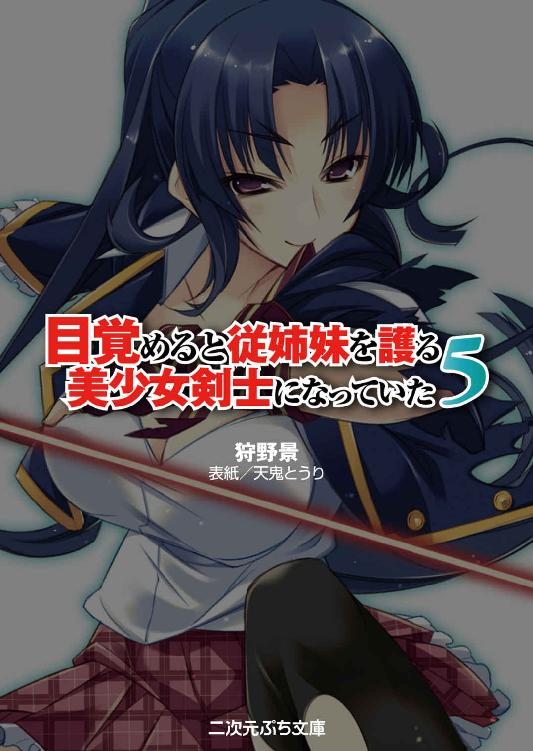
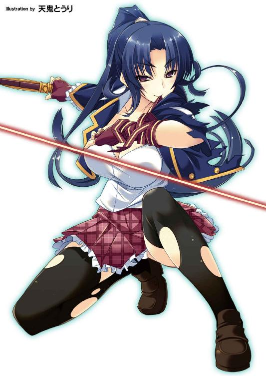

| 目覚めると従姉妹を護る美少女剣士になっていた5 目覚めると従姉妹を護る美少女剣士になっていたシリーズ (二次元ぷち文庫) | |
| 狩野景 | |
| 株式会社キルタイムコミュニケーション (2017) | |
※本作は『目覚めると従姉妹を護る美少女剣士になっていた１～4』および『目覚めると拳銃乙女を護る美少女拳士になっていた』（キルタイムコミュニケーション刊）とともにお読みいただけますと、よりお楽しみいただけます。
※本作品の全部あるいは一部を無断で複製・転載・配信・送信したり、ホームページ上に転載することを禁止します。本作品の内容を無断で改変、改ざん等行うことも禁止します。また、有償・無償にかかわらず本作品を第三者に譲渡することはできません。
※本作品は電子書籍配信用に再編集しております。

全高六百三十四メートル。日本一の高さを誇る電波塔の展望デッキは、休日の賑わいを見せていた。
「うわ～、高い、怖い～♪ 町がミニチュアみたい」
「向こうに山が見えるし、さすがの眺めだなあ」
遥かな高みから東京を一望し、人々が感嘆の声を弾ませる。
「ねえ、ママ、あれなあに？」
皆が地上の眺めに夢中になっている最中、家族で訪れたらしきまだ幼い少女が空を仰ぎ見ていた。
「なにかあるの？ 飛行機かな～？」
母親が笑顔で答えながら娘が指さす天空へと目を向ける。
「ひっ!? なに？ なんなの、あれ!?」
満面の笑みが驚きに強張った。
悲鳴のような裏返った声に、周りの者たちも釣られて顔を上げる。
途端に、少女の母親と同じ反応を示した。
「お、おい、あれ！」
「嘘だろ......。なんなんだよ」
「あんなところに、人？ いや、あれは......」
この展望デッキの高さは地上から約三百五十メートル。その空中に生物が静止していた。
鳥などではない。歩行のための二本の脚と、物を掴むための二本の腕を備えた人型の体型。だがその大きさは人間を大幅に凌駕していた。
全身に隆々とした筋肉の鎧を纏う。
獣のように恐ろしげな顔は金色の瞳を爛々と輝かせ、口元から太く鋭い牙が覗く。
そして、ボサボサの髪を強風に乱れさせる頭部には、二本の角が生える。
「鬼......」
驚愕の光景に人々は言葉もなく、唖然と立ちすくむ。
静寂の中、誰かがぽつりと呟いた。
その呼びかけに応えるように、耳まで裂けた口が開かれ、目映い輝きが溢れ来る。
「轟ッ！」
輝きは灼熱の咆哮となって、大きな顎門から電波塔目掛けて放たれた。
悲鳴を上げる暇もなく、大勢の観光客が展望台ごと吹っ飛ぶ。
タワーを一瞬で消滅させてさらに、鬼神の口から放たれた衝撃波と熱線は、その進路上にある町並みをすべて焼き尽くした。
時を同じくして、港区方面では別の鬼神の手によって東京タワーが無惨にねじ曲がり、新宿では都庁をはじめとする高層ビル群、池袋でも六十階建ての超高層建築物が、粉々に砕けて倒壊していた。
さらには......突如の大惨事に怯えて混乱する地上の人々へと、夥しい数の鬼たちが襲いかかった。問答無用で嬲り殺し、その血肉を食らい始める。
平和な休日の昼下がりが、一瞬にして地獄と化した。
いったいどこから現れるのか、爆発的に数を増す鬼たちは、東京だけでなく日本の各主要都市にも同時に出現して、暴虐の範囲を地方にまで広げていった。
日本はその日、壊滅の危機に陥った。
過去に数多の怪異を退けてきた霊的防衛の要、鬼繰一条の屋敷にて、巨大な鏡に映る滅びの様を嗤い観る鬼神があった。
「あは、あぁ......、町が燃え上がって、ん......、どんどん人が死んでイク♪ はあぁ～」
「んく......、ふぁあぁ、素敵......ですわ、阿修羅童子さまぁ。圧倒的な暴力による滅び。貴方様に、お仕えできて、ふあぁああぁ、光栄、ですわ、あ、あああぁン」
鬼神の傍らに侍って膣穴を太い指に掻き乱されながら、鬼へと堕ちた巡礼聖女シスター・エイプリルとマゼンダが滅びの光景に悶える。
「一条の鬼繰師共に従属を強いられていた我が同胞たちよ。忌々しき束縛から放たれた今、屈辱を存分に晴らすがよい」
阿修羅童子の言葉に地を揺るがす雄叫びで応えて、また多くの鬼神たちが町へ向かってゆく。しかもこれまで自分を使役してきた一条家の鬼繰師たちが虚ろな表情でくぐもった呻きを漏らしながら、よろけた足取りで鬼神たちに従ってゆく。
「どうだ鬼慰姫。貴様の同胞どもが我らへの支配を失い、無様な屍喰鬼へと堕ちた様は」
嘲りに声を響かせ阿修羅童子が問う。その視線の先に『禁』と記された呪符を口と手足に貼られ、正座する少女の姿があった。
使役される鬼たちの長き時の間に積み重ねられた恨みが、一条の血筋で最も力を持った乙女を贄とする呪を生み出した。
鬼慰姫と呼ばれるその贄に選ばれた少女、一条結女だった。
「口を禁じていては言葉も発せられぬか。俺に恨み言の一つも言いたいところだろうが、思い詰めて自害でもされては面倒だからな」
今までの気弱でおっとりとした結女であったら、ただ怯え、昏倒して夢の世界に逃れてしまっていただろう。
しかしもうこれ以上大好きな従兄に護られるだけのお荷物になるのは嫌と思いを抱き、少年の姿に性別を変えて戦う術を得た彼女は、強大な鬼神の圧倒的な眼差しに怯むことなく真っ向から睨み返していた。
「鬼斬姫は俺の前に為す術もなく逃走した。お前を救う者はもはや存在しない。その身に溢れる膨大な錬気、すべて俺が食らい尽くしてやろう。それまで世界の滅びをその目で確かめ、絶望に心を満たすがいい」
阿修羅の言葉に巡礼聖女たちが楽しげな笑い声を奏でる。
それでも結女は表情一つ変えず、ただ阿修羅童子を睨み続けていた。
『鬼の群れが十七号線を千代田区方面に向かって南下中、その数......とにかく見渡す限りたくさんだ！ これ以上食い止められない、撤退するぞっ』
『こちら渋谷方面部隊、タイプ鬼の怪異と交戦中!! 通常装備じゃ歯が立たない、対魔特務部隊を送ってくれ！ うわあああっ!!』
都内各地からの絶体絶命な報告と救援を求める声が、通信機から絶え間なく聞こえてくる。
「助けに行ってやりたいのは山々だが、くそっ、こっちはこっちでいっぱいいっぱいだ」
「もう錬気が尽きそうだ。装備が全然足りてねえんだよ!! せめて十分な数のツチグモが配備されていれば！」
十六年前、不死者と教皇庁異端審問局が日本国内において戦闘を行った。その事件を機に、人外の脅威から首都を防衛するため、陸上自衛隊対魔特務部隊、略して魔特隊と呼ばれる部隊が設立されていた。
しかしその後、日本が怪異による重大な脅威に見舞われることもなく、三年前の国家予算見直しにおいて、魔特隊は半分以下の規模にまで縮小をされていた。
「くそ、一条家の奴ら。散々威張り散らしてやがってたくせに、このざまかよ！」
一条の鬼繰師が調伏し、使役しているはずの鬼神が、野放しとなって暴れ回っている状況に、部隊員の間から憤りの声が上がっていた。
「権力の上に胡座をかいてるうちに、戦い方も忘れちまったんだろうよっ」
「帝都の霊的防衛は一条家だけで十分って、魔特隊の縮小にはあいつらが一役買ってたんだろ。ふざけやがって!!」
明治の時代に襲来した鬼神を退けて以来、国家から要請される霊的防衛は儀式的なものも含めて一条家が独占するようになり、他の退魔の一族は民間からの依頼を受けて細々と活動を続けていた。
魔特隊隊員のほとんどは、そういった退魔の一族の子弟たちで構成されていた。
以前から抱いていた一条家の恨みを露わにしながら、押し寄せる鬼の群れに必死の抗戦を続けている。
「オンキリキリバサラウンハッタ、弾けて砕け！」
特殊装備によって錬気力を増幅された破砕の呪式を、後方の式術師たちが唱える。
「ゴァアアッ!!」「ギェエエエッ！」
餓鬼や屍喰鬼などの下級の鬼どもが、内臓をぶちまけて一斉に破裂する。
「グフフ、効カンナア～～!!」
しかし強大な力を持つ鬼神級の鬼は、退魔の式術をものともせず、襲いかかってきた。
「狐繰和泉家が次男莊衞の名において命ず、来たれ管狐ッ、鬼神を滅せ！」
「臨・兵・闘・者・皆・陣・列・在・前、我が拳穢れを滅すっ、はぁあああっ!!」
妖使いの術士たちが召喚した巨大な魔獣をけしかけ、特撮ヒーローを思わせるパワードスーツに身を包んだ退魔武術士が身体を強化して鬼神の群れに肉弾戦を挑む。だが、
「轟ォオオオオオオッ！」
熱線と衝撃波を伴った咆哮が彼らを蹴散らした。
「そん......な......、強すぎる......、これが、鬼......ッ」
咄嗟に展開した結界防壁で辛うじて攻撃を防いだ者たちにも、
「ガァアアアッ!!」
慈悲なき拳の一撃が襲いかかり、錬気を一瞬で使い果たした肉体を血肉の残骸へと変えた。
もはや、鬼たちの暴虐を止められる者は誰一人いない。
人に仇成す人外の中でも最強に属する怪異の群れは、天変地異のように人間も建物も、目に入るなにもかもすべてのものに破壊の限りを尽くした。
※※※ ※※※ ※※※
「結女ッ！」
最愛の従妹の名を叫んで一条遼は飛び起きた。
「ここは......？ そうか、生徒会長の家......」
伊音の家で一夜を明かした後、鬼たちの襲来から逃げ延びた人たちを助けていた戻橋学園生徒会長の北南秀子と出くわし、手伝うついでにそのまま彼女の実家の地下深くにある巨大シェルターに厄介になったのだ。
昨晩は目が冴えてしまい、朝方までどうにもならないことを悶々と考えていた。
さすがに疲れがピークになり、ちょっと休むつもりで腰を降ろしたのだがいつの間にかまどろんでしまった。
けれどそれもほんの束の間。強大な鬼神の腕に抱えられた結女が極太の男根に膣穴を貫かれ、恥辱に顔を歪めながら錬気を奪われる。そんな悪夢に襲われ、すぐ目が覚めた。
（悪夢じゃない......、現実だ......）
阿修羅童子から彼女を救おうと立ち向かったのだがまったく敵わず、自分たちが逃げるだけで精一杯だった。
（ボクの身体も、女になったまま......だし。結女......）
一条家に対する鬼たちの呪いを受け、鬼慰姫として狙われることになった従妹を護るため、遼の身体は鬼斬姫一条はるかとして性別が変化した。
今の遼は普段の気の良さそうな顔立ちをした少年ではなく、青みがかった長い髪をポニーテールにまとめ、切れ長の眼が特徴的な顔立ちをした、すらりと引き締まった体付きながら椀を伏せたような美巨乳を誇る凜とした少女、一条はるかだ。
その状態が解けてないということは、結女が未だ生命の危機に陥っている証しだった。
「こんなところでのんびりしていられない！ 早く結女を助けに行かないとっ」
心配と焦りに胸が強く締め付けられる。
鬼神を屠る切り札の鬼斬太刀斬鐘はいとも簡単にへし折られ、阿修羅童子と戦う手立てはなにもない。それでもなにもしないでいるなんてできない。
「はるかちゃん！ 今呼びに行こうと思ってたんだ」
立ち上がり出口のほうに向かうと可愛らしい声に呼び止められた。
「伊音くん......」
振り返ると、桃色の髪を三つ編みに結い飾る、目鼻立ちのパッチリとした可憐な男の娘退魔師、犬神伊音がいた。
女の子としか思えない華奢で小柄な身体に、桜色チェックのミニスカートと胸元を赤いリボンで飾った紺のブレザーの女子用制服を纏って小走りに駆け寄って来る。
「部活で休日登校していた生徒がまだ学園に取り残されて、助けに行くの手伝ってほしいって生徒会長に頼まれたんだけど、はるかちゃんも来てくれるかな？」
「でもボクは、結女を助けに行かないと......」
真っ直ぐに見詰めてくる彼女から目を逸らすように答える。
「駄目だよ、結女ちゃんを心配する気持ちは分かるけど、鬼斬太刀も折られたままで阿修羅童子と戦ったら、今度こそやられちゃう。キミにもしものことがあったら、悲しむのは結女ちゃんなんだから」
「でも！」
伊音の言い分は分かる。だけどこうしている間にも結女が酷い目にあっているのではと思うと、いても立ってもいられない。
刀身の折れた斬鐘では、強者ぞろいの手下を従える阿修羅童子に近づくことすらできそうにない。無謀と知りながらそれでも、結女を今のままにしておくことなんかできなかった。
「もしかしたら鬼斬太刀を修理できるんじゃないかって、ぼくの『フェンリルの顎門』を造った鍛師に連絡してみたんだ」
覚悟を決めたはるかの様子に、伊音が告げる。
「斬鐘を直せるの!?」
「鬼斬太刀は特殊だから、普通の退魔法具みたいなわけにはいかないらしいけど、でも少しでも可能性があるなら任せてみてくれないかな」
斬鐘に匹敵するほどの、伊音の大鎌を造った人ならば期待できるかもしれない。
「結女ちゃんが心配なのは分かるけれど、希美乃ちゃんが言う通り阿修羅童子がすぐに彼女の錬気を奪い尽くすことはしないはずだから」
溢れ出る膨大な錬気ごと鬼慰姫を喰らい尽くせば、鬼神はさらに圧倒的な力を得ることができる。しかしその気を喰らえば喰らうほど鬼は鬼慰姫に魅了され、その身を喰らうことが惜しくなり下手をすれば使鬼として調伏されてしまう。
幼なじみの坂谷希美乃が鬼神羅刹童子として、結女を喰らいきれず魅了されてしまった経験が、今のはるかたちの唯一の希望だった。
「退魔法具の鍛師は今こっちに向かって来てるはずだから、それまで結女ちゃんを助けに行くのは待ってくれないかな？」
鬼たちが暴れ回る中をどうやってここまで？ と思ったが、鬼を倒す武器を造るくらいだからそれくらい造作もないのかもしれない。
ともかく斬鐘が直るかもしれないなら、待つ価値はある。今のままじゃ結女を阿修羅童子から救える確率はゼロに等しいのだから。
「学園に取り残された人って、どれくらいるの？」
「はるかちゃん？」
「助けに行くのボクも手伝うよ。武器職人が来るまでただ待っているなんてできそうにないし、それに今の状態でどれだけ鬼と戦えるか確かめたいから」
微かにだが芽生えた希望の光に、はるかは固く拳を握り締めた。
※※※ ※※※ ※※※
「まったくっ、キリがありませんわね！ 次から次へと!!」
飛びかかってくる餓鬼を、両手に持った鋭い施術用メスで切り裂き、戻橋学園保健医、桐絵霧子が忌々しげに吐き捨てる。
苺色の髪を団子に結いまとめて白衣を纏った姿はそれなりな年齢のはずなのに、あどけない顔立ちといい幼児体型の小柄な体付きといい年端のいかない少女にしか見えない。
「一匹一匹は不死者より弱いけれど、動きが速いし数が多すぎ......」
霧子の言葉にボソボソと呟き声で答えながら、鍛え上げた長身にジャージを纏った、若葉色ショートカットの無表情な体育教師、オルガ・コルピがナックルダスターを握った拳で次々と餓鬼を叩きのめしてゆく。
かつて教皇庁異端審問局の巡礼聖女として日本を訪れた二人だったが、純潔を奪われ不死者と戦う術を失った後は、ある任務のため戻橋学園に教員として勤務していた。
「桐絵先生！ コルピ先生!!」
戦う二人の背後から、素朴な顔立ちの眼鏡女性教師、玉井奈々子が駆け寄って来る。
「たまこ、生徒たちは？」
戦いの手を休めず霧子が、学生時代からの渾名で奈々子に尋ねる。
「みんな音楽室と視聴覚室に避難しましたっ」
窓がなく壁に防音材が充填され、扉も分厚い金属製の二重構造になっているそれらの部屋は他の教室よりも頑強にできている。
「たまこも皆と一緒に避難して」
群がる餓鬼を蹴散らしながら、オルガがぶっきらぼうに言う。
「でもっ、あなたたちは!?」
「わたくしたちはここを死守いたしますわ。たまこは中で生徒たちの面倒を見てくださいませ」
「ここは、任せて」
鬼慰姫となった結女を狙っての事件が立て続けに起こったため、戻橋学園には一条宗家の術師たちによって、かなり強固な結界が張られていた。
そのためどうにか鬼たちの侵入を防いでいたのだが、外から逃げ込んでこようとした乗用車がハンドル操作を誤り校門に激突したため、そこに結界の綻びが生まれて餓鬼どもが殺到して来ているのだ。
無力な自分がここにいてもなんの役にも立たない。不安がる生徒たちの元に戻ってあげなくてはいけないのは分かる。けれどもうかなり長い付き合いになる霧子とオルガだけを、残してもいけない。
耳障りな奇声を上げる下級鬼たちが、フェンスをよじ登って校庭に入ろうとするが、結界に阻まれ校門に集中してくる。そのおぞましい姿に、奈々子は震えて怯えながらおろおろと立ち尽くす。
鬼を使役する一条家の一員である理事長に救いを求めようと、もう何度目か分からない電話をかけるが、留守電の応答音声が虚しく返って来るだけだ。
「無駄ですわ、これほどの鬼が野放しになっているということは、一条宗家自体がなにかとんでもない状況に陥っているに違いありませんわ」
「そんな......、理事長先生......」
訳ありの事情を知って、二人の元巡礼聖女と共に奈々子を教員として受け入れてくれた、穏やかな物腰をした恩人の身を案じる。
「わたくしたちの神聖結界では、いま張られている結界と干渉し合って下手をすれば相殺してしまいますわ。ほんと、理事長先生がいてくださればっ」
平日ならば一条家出身の教員たちが対応してくれたのだが、いま学園にいるのは部活の休日練習に来ているわずかな生徒と顧問の教員だけだった。
いくら倒しても餓鬼の群れは、さっぱり減ったように見えない。
霧子とオルガの顔に疲れが浮かぶ。その状況で、
「ナンダ、餓鬼ドモガ群ガッテヤガルカラ何カト思エバ、楽シソウナコトシテヤガルジャネエカ。俺ニモ遊バセロ」
身の丈三メートルを優に超す筋骨隆々の鬼が、餓鬼を踏みつけながら一直線に向かって来た。
「鬼神......」
「最悪ですわ......」
緊迫に声を強張らせ、元巡礼聖女の二人が身構える。
「ガァアアアアアアッ！」
そこに巨体からは想像もつかない俊敏さで突進してきた鬼神の、岩のような拳が打ち下ろされた。
壮絶な地響きが轟き、地面がクレーター状に陥没する。
まともに食らえば一瞬でミンチにされていたその一撃を紙一重でかわし、二人は果敢にも巨体の懐に飛び込んでいった。
「はぁあああっ!!」
オルガが腰の入った左フックを鬼神の脇腹に叩き込む。
重々しい打撃音が響いて、ナックルダスターの鋭い鋲が肉を抉った。
さらに霧子は小柄な身体をさらに姿勢を低く沈めて、両手の指の股すべてに握り込んだメスで鬼神の踵を切り裂いた。
勢いを殺さず駆け抜け、隙に乗じて入ってこようとする餓鬼たちを蹴散らす。
すぐに振り返り、再度の攻撃を鬼神に加えようとするが、
「貴様ラ、イマ何カシタカ～？」
幾重にも生えた恐ろしい牙を大きな口から覗かせてくぐもった笑いをこぼしながら、鬼神が振り返る。
容赦なく殴り抉った脇腹の傷は、鎧のような巨体からすると掠り傷程度にしか見えず、切り裂いた踵も猫に引っ掻かれた程度のダメージしか負っていない。対して、
「壊れた......」
オルガのナックルダスターは、鬼神の強靱な筋肉を殴った衝撃で真っ二つに割れていた。
「やはり一筋縄ではいきませんわね」
霧子が手にする刃もすべて、ボロボロに刃こぼれしていた。
役立たずになったメスを投げ捨てると霧子は白衣の下、ミニスカートの生脚に巻き付けたホルスターから、注射器のシリンダーに銃把を付けたような拳銃を引き抜き、敵から距離を取る。
オルガも割れたナックルダスターから剣呑な刃を備えた手甲剣に持ち替え、霧子を護るように構えを取った。
「オモチャヲ持チ換エテモ無駄ダァア、人間ンンッ。観念シテ俺様ニ喰ワレロォオオッ!!」
またしても鬼神が突進してくるが、既に二人も動いていた。
「えいっ！」
気の抜けた声を発しながら、それとは真逆の躍動的な動きでオルガが跳び上がった。
バスケ選手のような滞空時間の長い跳躍で鬼神の顔面目掛けて斬りかかる。
「馬鹿メガァアアッ」
無謀な真正面からの攻撃を嘲笑いながら、鬼神が虫をはたき落とすように大きな掌を振るってきた。
だが長身の体育教師は空中で大きく身体を捻って、攻撃をギリギリにかわす。
さらに捻りの勢いを刃に乗せて、鬼神の指の股に叩き込んだ。
「グォオオオオッ!!」
小指から肘までを一気に削ぎ斬られ、鬼神が驚きの呻きを上げた。
「面白エ、ナカナカ楽シマセテクレルジャネエカッ！」
それなりに手傷を負わせたのに痛がる素振りもなく、むしろ嬉々として攻撃を勢いづかせてくる。ブンブンと剛腕を振り回してオルガを叩き落とそうとしてくるが、彼女は着地してすぐに跳躍し、今度は死角を突いての攻撃を繰り返す。
身体の捻りや急速な動作に加え、鬼神の身体を踏み台にした方向転換で、縦横無尽に空中を動き回り鋭い刃で鬼神の肉を削いでゆく。
全身から血飛沫を飛び散らせながら夢中でオルガを追い回す鬼神へと、
「足元がすっかりお留守ですわねっ」
餓鬼どもを始末しながら常に鬼神の死角に回り込んでいた霧子が、丸太のような脚に向けて引き金を引いた。
ブンッ、と低く唸るような発砲音とともに銃身からシリンダーが放たれた。
電磁誘導によって加速された鋭い針先が、切れ味抜群のメスでさえボロボロにした強靱な肉に突き刺さり、シリンダー内の液体を注入する。
ホルスターに銃を戻すと自動的に次のシリンダーが装填される。
抜きざまの発砲を繰り返し、霧子は鬼神の脚を注射器まみれにした。
「クスグッテエト思ッタラ、ナンダコリャ？ クダラネエ小細工ヲ、ウォッ!?」
レールガンの威力もかなりなはずだが、鬼神にとっては蚊に刺されたほどにしか感じないらしい。突き刺さったままの針が折れるのも構わずに、注射器を払い落とす。
だがその最中に、焦げ臭い煙を吹き出しながら両脚に肉が中から黒ずんで腐れ落ちてきた。さらにオルガが削ぎ斬った傷口からも、腐肉が焦げる悪臭を放ちながらどす黒い膿汁が滴り落ちてきた。
「鬼もやはり邪な存在。特殊浄化聖水の効果、バッチリですわね」
彼女らが現役の巡礼聖女であった頃、処女の血液を不死者へ注いでいた武器は、極限まで濃度を高めた聖水を注ぎ込むように改造されていた。
「聖水......ダト......!?」
ドロドロと溶解しながら、鬼神が這いつくばる。
「とどめ......」
その背中に飛び乗り、オルガが延髄へ深々と刃を突き立てた。
「え......!? 抜けない......」
だが喉まで貫いた切っ先を引き抜こうとしたオルガの表情が強張る。
「逃げなさい！ 早くっ!!」
腰を落として踏ん張る彼女に、霧子が慌てて警告した。
地面に伏していた鬼神の両手が素早く首の後ろに回り、挟み込むようにオルガを捕らえた。
「あがぁああああっ！」
壮絶な力で握り締められ、ボキボキと骨が砕ける。
「オルガを離せや、われぇえええっ!!」
同僚の悲痛な悲鳴に、激昂した霧子の口調ががらっと変わる。
「巡礼聖女なめたらあかんぜよっ！」
注射器銃をもう一度向けるが、
「フンッ!!」
鬼神はオルガの身体を、霧子目掛けて無造作に投げつけてきた。
「がふっ!!」
凄まじい勢いで飛来するオルガの鍛え上げられた長身を小柄な身体で受け止められるはずもなく、共にもんどり打って吹っ飛ぶ。
「く......、あれで、生きてるですって......？ 冗談じゃ、ありません、わ......」
「ヤッテクレルジャネエカ、人間ンンッ、ダガ、オ遊ビハコレマデダゼェエエエエッ！」
腐汁を飛び散らせて勢いよく立ち上がった鬼神の身体は半ば溶け崩れ、赤黒い肉が剥き出しになっている。集中攻撃を食らった両脚などはもうほとんど骨だけになっていた。
なのに鬼神は、一向に闘気が萎えた様子もなく迫ってくる。
迎え撃とうと二人も立ち上がるが、オルガの右腕はへし折れてあらぬ方向に曲がっていた。肋骨など他にも骨折しているのだろう、足を踏み出すたび、激痛に顔を顰める。
霧子も脇腹の骨が数本折れているが、同僚に比べれば軽傷だ。
注射器銃と手術用メスを手に、オルガを庇うように前に出る。
「桐絵先生......、コルピ先生......」
その二人へと、奈々子が震える声で呼びかける。
「たまこ......、まだそんなところにいたのですか。オルガと一緒に、校舎に、逃げなさい......」
「あいつとは、私が戦う......。霧子こそ、たまこと校舎に」
重傷の同僚を気遣う霧子だったが、オルガのほうも彼女に退避を勧める。
「ああ......だけど......」
二人の身を案じながらも、戦いを止めることなどできない。
霧子とオルガが退けば校舎にいる生徒たちが鬼たちの餌食になるだろう。
なんの手助けもできないくせに二人を置いて逃げることもできず、ただ足手まといにならないようにじりじりと後退りながら、奈々子は決死の戦いを見守り続ける。
（いえ、手助けなら......。でも......）
もしかしたらこの状況をひっくり返せるかもしれない。しかしさらに重大な危機を生み出すかもしれない。
巡礼聖女であった二人から能力を奪い、この地に留めることとなった。禁断の力を思い浮かべ、奈々子はすぐに心の奥に押し沈めた。
肉が剥き出しとなった鬼神の剛腕に、霧子の注射銃が何発も強化聖水を叩き込み、腐敗を加速させる。
左手一本に意識を集中し、オルガが手甲剣の刃を暴風のように振るって鬼神の太い指をズタズタに切り裂いた。
しかしダメージをものともせず迫る鬼神の両手に、負傷で動きが鈍った二人は逃げ切れなかった。
「グヘヘ、コンドコソ、捕マエタゼ！」
「は、放しなさいッ、とっとと放せや、ボケぇえええっ。ぐうぁああああっ!!」
「こ......の、あぅううっ！」
霧子の聖水で腐敗して肉が溶け落ち、オルガの刃に切り刻まれているというのに、鬼神の指はどれだけ藻掻いてもビクともしない。
邪魔者がいなくなり、校門から餓鬼の群れが校舎目掛けて雪崩れ込んで来た。
人形のように握られて、霧子とオルガが巨大な牙が剥き出しになった顎門へと運ばれる。
貪り食われるその寸前、
「だめ！ 二人を、放しなさい！」
小柄な身体を震わせて、奈々子が鬼神に立ち向かっていた。
「ナンダ女ァ、貴様モ喰ワレタイカッ？ フン、大シテ美味ソウデモナイ、貧相ナ肉付キシヤガッテ。餓鬼ドモノ餌ニシテヤルゼ」
巡礼聖女たちに比べ、あからさまに弱々しそうな奈々子の姿に鬼神が嘲り笑う。だが、
「だめ......。目覚めさせたら、もう、戻れなくなる」
「たまこっ、やめなさい！ そんなことをしたら、この鬼は倒せても生徒たちまで危うくなりますわよ!!」
霧子とオルガの血相が変わった。
「だけど、このままじゃ皆、やられてしまうから......。私が鬼を倒します。ですから、桐絵先生、コルピ先生、終わった後の私の始末と、生徒たちの面倒をお願いします。結局最後までお二人には迷惑をかけてしまって、ごめんなさい」
弱々しい笑みを浮かべて奈々子が告げる。
「貴様ノヨウナ貧相ナ牝ガ俺様ヲ倒スダト？ ソノ前ニ餓鬼ニ喰ワレネエヨウ頑張リナ!!」
ハッタリにすらならない戯言と笑い飛ばしながら、餓鬼の群れを奈々子へと襲いかからせる。その鬼神の溶け崩れた醜い顔が、
「ぐふうっ!?」
激しい衝撃と驚きに引き攣った。
「ナン......ダトォ......、俺様ヲ、貫イタ......？」
奈々子の足元から地中を通って伸びた太い触手が鬼神の尻穴から体内に潜り込み、激しくグラインドして内蔵をズタズタに攪拌していた。
「ギ、ギザマ、何者......オ、オボッ、ンボォオオオ、アァアアアアッ！」
聖水を注がれ全身が腐食しても平然としていた鬼神が激しく痙攣しながら呻き声を上げ、掴んでいた巡礼聖女たちを取り落とす。
「我は〝魔幻師〟玉井奈々子。魔蟲獣〝レプタイル〟に生きながらはらわたを喰らわれる心地はどうだ？」
それまでの奈々子の、気弱で恥ずかしがり屋な態度が一変していた。
身体の内側から触手に抉られ、奇妙な痙攣を繰り返す鬼神の様に、口の端から鋭い犬歯を覗かせて粘着質な笑みを浮かべる。
彼女がまだ学生だった時分、この国に襲来した、とある不死者に寄生されたことがあった。
事件の解決を経て彼女も人へと戻ったはずだったのだが、植え付けられた魔の種子は完全に取り除くことはできず、身の内に潜んでいた。
それをいま奈々子は自らの意志で発動させ、魔蟲獣〝レプタイル〟を使役する、不死者と化していた。
身体の内側から激しくのたうつ触手状の魔蟲獣に、鬼神の皮膚がボコボコと不自然な隆起と陥没を繰り返す。
「マゲン......シ、ダァアア？ オレサマハ、鬼神......ボァアアアアアアッ!!」
もう既に名乗りを上げることもできず、触手蟲に食い散らかされてゲル状になった内臓を、血反吐と共に噴き出す。それと同時に腹腔から這い上ってきたレプタイルが、鬼神の顎門を押し広げ、這い出してくる。
「キシャァアアアアアッ!!」
鬼の血肉を喰らって無数に分裂した触手蟲は耳障りな鳴き声を上げながら、奈々子に迫っていた餓鬼の群れを喰らい始めた。
干からびた猿を思わせる餓鬼の身体に巻き付いて、恐るべき力で締め付けながら、ヤツメウナギのような円口をギチギチと鳴らして体内に潜り込み、内側から掘り進むように肉も骨もすべて喰らってゆく。
餓鬼どもも必死に抵抗し、触手蟲の細長い身体を引き千切るのだが、千切れた分だけレプタイルは数を増してますます貪欲に獲物を求めた。
バリ・ボリ・グチャ・グチャと咀嚼する音が、耳障りな断末魔の叫びと入り混じって校庭に響き渡る。
終わってみればほんのわずか。十分にも満たない間に、奈々子が使役する魔蟲獣は鬼神と餓鬼を骨一本残さずすべて喰らい尽くしてしまった。
「あはぁ......、まだまだ全然足りない......。この子たちに、もっとたくさん食べさせてあげないと......。新鮮な、美味しいお肉......」
巡礼聖女をも圧倒する鬼神を倒すため自ら不死者へと堕ちた童顔の女教師が、生徒たちが避難する校舎にどんよりと濁った禍々しい眼差しを注ぎ、舌舐めずりをしていた。
鬼どもを喰らって太さを増した無数の触手を従え、新たな獲物を求めて向かってゆく。
「お待ちなさい......ッ」
鬼神からのダメージに顔を歪ませながら霧子が呼び止める。その傍らに、同じく満身創痍のオルガもやっとのことで立ち上がっていた。
「桐絵......せんせい......、コルピ......せん......せ......早く......、生徒たち、連れて......逃げ......て......。でないと、わた......し......」
ギィと不気味に鳴く触手たちと共に振り返り、奈々子が微かに残った自我で言葉を振り絞る。
「みんな美味しく、いただいちゃうからあ......」
だがその声もすぐに、禍々しさに満ちた不死者のものに変わった。
途端に目にも止まらぬ勢いで二人に襲いかかる。
「生徒たちは護る......。安心して、たまこ......」
「よくぞ鬼を倒してくれました。だからあなたはわたくしたちが、命に代えて必ず止めて見せますわ!!」
鬼神との戦いで圧倒されて、もう霧子もオルガも戦える状態ではないはずだ。それでも微かに残った力を振り絞って、拳と刃で触手を迎撃し一気に接近を計る。
「また冬馬君に酷いことするつもり!? 許さない、絶対に許さないっ、死んじゃえっ、死んじゃえっ、死ィイイッ、巡礼......聖女ッ、純潔を、奪って......、その血を、喰らってやる、おぁああああああぁっ!!」
切り裂き、粉砕しても、触手は即座に再生しうねうねと蠢きながら二人に迫り続ける。
闇の力を振るうほどに、奈々子の意識は不死者に蝕まれ、今と過去の区別もつかなくなっていた。
「純潔でしたらもう奪われましたわ......。お前に！」
殺到する触手をかいくぐって、霧子が奈々子に近接する。
十六年前の戦いで巡礼聖女の力を奪った忌々しい不死者の寄生体。
復活の恐れがあるその存在の監視を命じられ、屈辱と怒りを覚えた。
だが人の人格を取り戻した彼女と交流を深めるうちに、激しい感情は収まり使命感だけが残った。
「あれはわたくしの未熟。なので恨みはもうありません。ですが、わたくしの巡礼聖女としての最後の務め、果たさせていただきますわ!!」
できれば何事もなく、この学園での穏やかな毎日を過ごして余生を終えたかった。
いつまでも少女の初々しさを失わない彼女に、人の姿のまま暮らし続けてほしかった。
だけど......。
霧子は不死者と化した奈々子目掛けて、注射器銃を発砲した。
先端に針を備えたシリンダー状の弾丸。その中の、処女の血液を元に異端審問局が開発した特殊血清が注がれれば、不死者〝魔幻師〟の要素は今度こそ確実に滅ぶ。ただし、玉井奈々子の肉体ごと......。
膨らみに乏しい彼女の胸に、注射器のシリンダーが命中する。
「さようなら、たまこ。呪いから解き放たれて安らかに眠りなさい」
霧子が微かに悲しげな表情を浮かべて告げる。だが、
「永遠の眠りに就くのはそちらのほう......、安らかに......ではないけれど」
針が突き刺さる寸前で、シリンダーは〝魔幻師〟の触手に搦め捕られていた。
奈々子の声で抑揚なく答えながら、注射器型の弾丸を砕く。
触手を溶かしながら、切り札の特殊血清がこぼれ落ちた。
ギリと歯を軋ませて厳しい顔つきになる霧子へと、鞭のような触手が、目にも止まらぬ勢いで放たれた。
「ぎゃうっ！」
すぐに飛び退くが間に合わない。
バチンと肉を打つ激しい音色を響かせて霧子の身体が吹っ飛ばされた。
「あれを......受け止める......なん......て......」
地面に叩きつけられ、起き上がることもできない。
気が遠くなるような激痛に息を詰まらせ呻く。
無数の触手すべてが一斉にしなり、小柄な保健医を嬲ろうと空気を震わせる。しかし、
「はぁああっ!!」
霧子に意識が向いている間に、奈々子との間を一気に詰めたオルガが、特殊血清のボトルを装着したグラブで抉るようなフックを叩き込んだ。
本来は殴った瞬間に己の処女の血液を対象へと注ぎ込む、不死者討滅の聖具。
脇腹にめり込んだその頑丈な鋲から、今は自身のものではなく、カートリッジに収められた特殊血清が奈々子の身体へ注入される。
「うぐっ！ あが、ああ......あああぁ......」
すぐに効果は現れた。身体が内側から沸騰しているかのようにボコボコと泡立ち、のたうつ触手が次々と腐れ落ちて、童顔に苦痛の表情が浮かぶ。
「やり......ました、わね、グリーン・マナリッシ......」
オルガの機転に、巡礼聖女だった頃の洗礼名を呟く。
今の一撃でどうにか滅ぼせるはずだが、確実にとどめを刺しておきたい。
落としてしまった注射器銃と特殊血清弾を拾うため、立ち上がろうとする。
「まずい......ですわね、足の感覚が......まったくありませんわ......」
触手鞭の一撃はかなりの威力で、激しい痛みがまったく引かない。
仕方なく這っていこうとする。
手を伸ばす向こう、注射器銃のその先に血にまみれて転がっているものが、朦朧と霞む目に映った。それは......、
「わたくしの......脚......？」
触手鞭の壮絶な一撃に切断された、霧子の腰から下だった。
「ごふっ！」
生臭い鉄錆の味が込み上げ、大量の吐血をする。
痛みの感覚が消えていくと共に全身が凍るように冷たくなり、意識が遠退く。
敵に致命的な攻撃を与えた喜びに振り返るオルガの顔が驚きと絶望に歪む。
霧子へ駆け寄ろうとするその背後から、杭のように尖った触手が彼女の心臓を貫く。
悲鳴もなく崩れ落ち事切れるオルガの姿を虚ろな瞳に映しながら、霧子の意識も静かな闇の中へ落ちていった。
身体の内側から焼き焦がされるような、激しい苦痛が奈々子を苛んでいた。
「冬馬......くん......、授業、終わった、ら......一緒に、帰りま......せん......か......？ 休みの......日......って、なに、してる......の......」
特殊血清の侵食は脳にまで及び、いま自分がどのような状態かも分からない。
ただ、一番楽しかった頃のわずかな記憶を何度もループさせて、その世界に縋っていた。
「アリシア......先輩も、紅坂さんも、素敵な......人、だけど、私......だって、冬馬くんのこと、大好き......だから......あぁ......」
人に在らざる者と化して、遥か彼方に去ってしまったかつての級友に、届かぬ思いを囁き続ける。
触手が腐れて落ちる身体は必死に修復を試みようと、もう既に人としての原形を留めぬ変貌を遂げていた。巨大なオオサンショウウオを思わせる体躯に、ゴキブリのようなテラテラと黒光りする羽と脚を生やし、体表におぞましい無数の目を瞬かせる。
そのような異形と化しながらも、奈々子はほんのわずかに残った理性で、生徒たちから遠ざかろうと学園の外に向かっていた。
強固なシェルターに護られた北南家を出て学園までの道のり、何度か鬼との遭遇があったが、伊音とはるかが難無く退治していた。
「ほえ～、大したもんだね。ただ者じゃないってのは気付いてたけど、こんな強いなんてお姉さん感心しちゃったよ～」
息の合った連携で鬼三体を手際よく葬った二人に北南秀子が感嘆の声を上げる。
溌剌とした顔立ちに人懐っこい笑みを浮かべる、長く豊かなストレートの黒髪が特徴的な、戻橋学園生徒会長だ。
「まあ、ぼくはこれがお仕事だから。それに手に負えないような強い鬼神は未緒さんが探知して、避けるルート割り出してくれてるし」
身の丈を超える死神の鎌を手に、美少女にしか見えない華奢で愛くるしい男の娘退魔師、犬神伊音が尋ねる。
その彼に持ち上げられて、以前、伊音を忌まわしい邪道と罵った一条家の鬼繰師、未緒が結女によく似た顔で困ったような表情を浮かべる。
「敵にまったく会わず学園までたどり着ければよいのですけど」
彼女が使役する探査能力に優れた鬼神、乾童子に鬼たちの動きを見張らせているのだけれど、敵の数は一段と増して安全な場所などどこにもなくなっていた。
「でも本当に助かるよ。この斬鐘じゃ、鬼神を倒すのは無理だから」
刃が半ばからへし折られた鬼斬太刀を手に、はるかが呟く。
剣に宿る意志が消え失せて鬼神を葬る力は失せたけれど、それでも弱小な鬼には十分有効な武器なため、使い続けているのだ。
はるかに感謝され未緒の頬が赤く染まる。
嬉しそうな眼差しを鬼斬姫として女体化した少年に向けるが、〝彼〟の意識は鬼慰姫として鬼神に囚われた従妹の結女を助けることでいっぱいだった。
「それにしても、会長もやるじゃないですか。退魔師として活動できるレベルですよ」
「そう？ 鍛えていた甲斐があったかな～♪」
北南家はその昔、鬼の脅威から帝を守護する役割に就いていた一族とのことだ。
その名残で幼い頃から武術を仕込まれているらしく、秀子は餓鬼程度の小鬼なら難無く退治していた。
そしてさらに、生徒会長命令で無理矢理同行させられた渡辺、薄井、浦辺までもが、北南家の蔵から持ち出した退魔武具を手に、かなりの戦いぶりを見せていた。
さまざまな格闘技系の部活を掛け持ちして鍛錬しまくっている渡辺はまだしも、喧嘩すらろくにしたことがなさそうな薄井と浦辺が、情けない悲鳴を上げながら餓鬼どもを退けている。
「ぶひ～、もう帰りたいでござる～」
「こええ、鬼、マジでこええよ......」
「どうしたお前たち、もっと強い敵と戦いたくはないのか？ 俺は戦いたいぞ！ 天よ、我に艱難辛苦を与えたまえ！」
怯える二人の傍らで、満身創痍の格闘馬鹿渡辺が無駄にテンションを上げる。
夜叉童子にボコボコにされた傷も癒えておらず身体中包帯と絆創膏だらけなのだが、もうベッドで安静にしているのは我慢できないと救出部隊に無理矢理志願したのだ。
「君たちとは、なんだか前にもこうして一緒に戦った気がするなぁ......」
そんな三人の様子に、秀子が妙な既視感を覚えていた。
「確かに......、ついこの前、イベントの準備で散々こき使われた記憶が......」
「一晩中小道具作りは、もうご勘弁でございまする～」
秀子がお騒がせなイベントを企画して手伝いを探しているとき、薄井と浦辺の二人はなにかと捕まることが多かった。
今も命がけの救出部隊に付き合わされ、げんなりした顔で、やたらと張り切っている秀子と渡辺の後をトボトボついていく。
そんな友人たちの様子も目に入らない様子で、はるかは一条宗家の屋敷がある方向を眺めていた。
「結女......」
伊音になだめられた通り、戦う術がないいま焦ってもどうにもならない。
じっとしていると不吉な考えに陥ってしまいそうで、学園への救出作戦に参加したのだが、鬼と戦っていると最愛の従妹を最凶の鬼神に奪われたときのことを思い出してしまう。
「ゆ、結女さんは大丈夫です！ 阿修羅童子の鬼気はさほど増大していないからっ」
従妹を残して逃げていて以来、暗く澱んだ眼差しをしている〝彼〟を、結女によく似た顔立ちの鬼繰師が元気づける。
もし阿修羅童子が鬼慰姫を喰らい尽くしていたら、莫大な力の波動が放たれるだろう。敵に探知されないギリギリの距離で、未緒は乾童子に一条の屋敷を見晴らせているが、大きな変化は見られないようだった。
「う、うん、そうだね」
喰らわれていないとしても、圧倒的な力を誇る鬼神にどのような扱いを受けているかと思うと、心配でならない。だけどこれ以上不安をぶちまけても未緒を困らせるだけだ。
結女によく似た顔立ちの少女に、はるかは強張った顔を少し和らげて頷いた。
その様子を少し離れたところから、活発そうな容姿をしたセミショート髪の幼なじみが見詰めていた。
「なにか言ってやらないのか？」
いつもなら真っ先に駆け寄って、世話を焼いたり叱咤したりするのに、はるかと距離を置く希美乃に、渡辺綱吉が尋ねる。
「あたしになにも言う権利はないから。あんたも聞いたでしょ？ 今のあたしはこれまでの坂谷希美乃じゃなくて、鬼神羅刹童子と融合した存在だって」
鬼神の転生体として人の姿に生まれ、羅刹童子の覚醒と共に人としての人格は鬼神のものと融合するはずだった。
だがその直前に他の鬼に憑依され、それを祓うため鬼斬太刀に斬られたことが、彼女の人格を人間と鬼神のそれぞれに分けてしまっていた。
それが今になって同等の状態で融合したため、彼女自身も困惑しているのだ。
「まあ確かに今までとはかなり雰囲気違うし、別の奴がいるんだなって思うよ。だけど今までの坂谷っぽいところもきちんと残っているけどな」
「あたりまえでしょ、それが融合なんだから。そもそもこれが、あたし本来の状態なのよ」
いったいなにが言いたいのか、あたりまえのことを告げてくる綱吉に苛立ちを現す。
「ほらそれ、すごく坂谷っぽい。あの鬼神だったら、そういう反応しないだろ」
「だからそれがなんなのよ!?」
「つまりいまのお前は今までの坂谷じゃないけど、結女ちゃんを喰おうとしていた今までの羅刹童子でもないってことだ。だからこうして俺たちと一緒にいるわけだし、すげえ強いっていう鬼の親玉から結女ちゃんを取り返すのに手を貸してくれるつもりなんだろ？ だったら遼と話してこいってば。あいつだってきっとお前と話したいって思ってるはずだ」
いつも仲の良い連中とつるんで馬鹿なことばっかりやっているクラスの男子が、柄にもなく真剣な口調で言う。
「お、お前とか、馴れ馴れしい呼び方しないでよ、ばか」
なにか答えなくちゃと思いながら、つい叱る口調になってしまう。
「ああ、すまんな」
照れ隠しのキツい口調にも、ボリボリと頭を掻きながら詫びる。
そんな綱吉の様子に、希美乃は羅刹童子としてかつて戦った宿敵の姿を思い出していた。
「あともう少し！ 急ぐよー!!」
通い慣れた通学路を進むと、校舎が見えてくる。
明るくおどけているように見えても、内心では取り残された生徒たちのことが心配で仕方ないらしい。秀子が走りだし、皆もその後を追って足を速めた。
「ああ、そんなっ！」
ようやくたどり着いた学園は、運転を誤った自動車の衝突で大破していた。そこから獲物の匂いを嗅ぎつけた鬼たちが校庭に侵入していく。
「させるかぁああっ!!」
その光景を目にした途端、秀子が怒号を上げて突進した。
「おわっ!? ダメだっ、会長!! 待って！」
餓鬼や動きの遅い屍喰鬼だけならなんとかなるが、身の丈二メートルを超える鬼がいるうえに数も多い。しかも彼女の声に振り返り向かって来た。
「うちの生徒たちには、指一本触れさせないんだからっ!!」
伊音が慌てて制止するが生徒会長としての使命に燃える秀子は構わずに突き進んだ。
仕方なく皆も後を追う。
「餌ガ、向コウカラヤッテキヤガッタゼ～ッ！」
無謀な突撃に、巨体の鬼が嘲笑いながら舌舐めずりをして待ち構える。
その凶暴な顔へ気丈に睨み返すと、秀子は両手に抱えた武器のスターターボタンを押した。
ドゥルルルルンンッ!!
途端に、地鳴りのようなエンジン音が鳴り響く。
スロットルを引き絞ると、低いその轟きは甲高く耳障りな爆音へと高まり、強烈な駆動力でチェーンに備えられた鋭く細かい無数の刃を高速回転させる。
北南家の古い蔵には、先祖代々に伝わる退魔武具が数多く収められていた。
整然と陳列され、手入れが行き届いたその武具に目もくれず、秀子は兄の北南修作がどこからか拾ってきて蔵の片隅にしまい込んだままになっていた〝それ〟を鬼退治の武器として手にしていた。
金の十字を染め抜いた白い機体は、以前の持ち主が相当手荒に扱ったらしく、傷だらけになって歪み、こびりついた鮮血で赤黒く汚れている。
しかしひとたび稼働させれば、異形の者の血を欲するかのように咆哮を上げた。
「くたばれええええっ、化け物っ！」
足元に群がる餓鬼を避けて跳躍一閃、秀子は手に持った血染めのチェーンソーを振り上げると、巨体の鬼目掛けて叩き込んだ。
「ゴアアッ!! ナンダト!?」
人間が使う工具程度避けるほどもないと思ったのだろう。鬼は素手で回転する刃を握りつぶそうと掴んできた。
だが秀子が手にするチェーンソーは、大幅に切れ味を強化されていた。
丸太のような鬼の腕を木っ端微塵に粉砕し、回転する刃をそのまま角を生やした脳天にめり込ませる。
「グェエエエエエ、オボァアアアアアッ！」
頭蓋骨を割り砕き、脳漿を滅茶苦茶に掻き乱す。
それでも恐るべき生命力で藻掻く鬼へと、チェーンソーのグリップに仕込まれた無痛の採血針から秀子の血液が吸い上げられ、回転刃を通じて注ぎ込まれる。
とある巡礼聖女が使用したこのチェーンソー型聖具、《アイアン・メアリー》が持つ、処女の血液によって不死者を討滅するための機能。
しかしそれは、鬼に対してなんの効果ももたらさない。
「しぶとい鬼っ、とどめは......」
グリップをしっかり握る指に、引き金状の突起が触れる。
「これだっ!!」
秀子は直感的にそのトリガーを強く引いた。
ドゥンッ!!
チェーンソーのボディに備えられた筒から、重々しい発砲音と共に擲弾が放たれた。
刃に抉られた鬼の傷口に命中すると、炸裂して高濃度の聖水がぶちまけられる。
「ギェエエエエッ！ 焼ケルゥウウッ!! ンゴォオオオアァアアアアアアアッ！」
退魔の飛沫を粉砕された頭部に浴びせられ、鬼が断末魔の悲鳴を張り上げた。
腐肉が焼け焦げる刺激臭を、黒煙と共にもうもうと立ちのぼらせながら、鬼は黒ずんだ肉塊と成り果ててピクリとも動かなくなる。
「す、すごい......、生徒会長があんなに強いなんて！」
「大型鬼を倒すなんて、驚いたなぁ。しかもあんなムチャクチャな武器を自在に操って」
皆はもちろん、鬼と戦い慣れたはるかや伊音まで、予想以上な秀子の強さに驚く。
大物に圧勝して勢いづいたのか、秀子はがむしゃらに校庭を突き進んでいく。
左右から餓鬼が襲いかかるが、集中が高まる余り前しか見えていない。
「はあっ！」
「せいっ!!」
急いで追い付いたはるかと伊音が敵を切り払う。
それにも気付かず秀子は正面の、校舎へと向かいつつあるグロテスクな巨体を睨んでいた。
「あれ、やばいっ！ あんなのが校舎に入っていったら、みんなが危ないっ!!」
巨大なサンショウウオにゴキブリの特徴を混ぜ込んだ造形だけでも十分おぞましいのに、その体表をびっしりと覆った大小さまざまな眼球が忙しなく蠢いていた。
傷を負っているのか、腐敗と再生を繰り返す身体から、腐汁にまみれたどす黒い肉片をボトボトと落としながら歩み続ける。
いま倒した鬼や餓鬼などとは比べものにならない、禍々しい気配。
恐怖に囚われながらも、学園のみんなを助けたい一心で勇気を振り絞り、秀子はチェーンソーをフルスロットルにした。
激しい痛みが続いている。
終われたと思ったのに、あともう少しのところで、不死の身体は復活を遂げようと足掻いていた。
（にんげん......たべたい......、だめ、ああ、こんな......の......、せいとを、たすけない......と......、ぴるぐりむ、めいでん......め、は、あ、あ、あいたい、とうま、くん......）
霧子とオルガの骸も、糧として跡形もなく喰らい尽くした。
人を喰らう不死者の本能と、生徒を護る教師の使命と、最愛の者を想う少女の心が入り混じっては反発し合い、朦朧と霞む脳裏で渦を巻く。
このまま腐敗と再生を繰り返すうちに、特殊血清は腐肉と共に排出されて、呪われた不死の肉体は元に戻るだろう。だがそのときは、人としての心も排除され精神は完全に不死者のものとなってしまうに違いない。
なんの抵抗もせず霧子とオルガの攻撃を受け、滅びを受け入れるつもりだったのに、身体は勝手に二人の命を奪ってしまった。
以前に彼女たちの巡礼聖女としての力を奪ったのも、自分が欲望を抑えられず不死者の力を受け入れてしまったからだ。
命を捨てることすら、他の誰かの命を犠牲にしてしまう。
自分でもどうにもならない。校舎に立てこもる生徒たちを喰らいに行く、この脚を止めることもできない。
「だれ......か、わたし......を、ころし......て......」
微かに残った理性で呟くが、怪物と化した口からはおぞましい呻きが漏れただけだ。
だがその求めに応えるように、耳をつんざくエンジン音が響き渡った。
「こう......さか......さん!?」
聞き覚えのある音に、凶暴な笑みを浮かべて深紅の衣を纏う少女の姿が思い浮かぶ。
直接にはそれほど話したこともない。
傍若無人で乱暴で怖くて、絶対に相容れない苦手なタイプ。
大好きだった彼を、二度と手が届かないところへ連れて行ってしまった、大嫌いな彼女なら......。
振り返る。だが奈々子の目に映ったのは深紅の修道女ではなく、その巡礼聖女の武器を手にした元気溌剌な少女だった。
「ああ......、秀子ちゃん......。あなたが、私を......。ありがとう......」
親しい友人の歳の離れた妹。そして大切な生徒である彼女に、こんな役割を任せることを申し訳なく思いながらも、感謝を伝える。しかしその声も、秀子には不快な化け物の声にしか聞こえないだろう。
不死者の本能が、反撃を行おうとしていた。それを全力で抑えながら、玉井奈々子は北南秀子が振り下ろすチェーンソーの刃に、自ら身体を晒した。
回転する鋸刃が、おぞましい肉を抉り返して埋まり来る。
そこから注ぎ込まれる秀子の純潔な血潮が、呪われた不死の肉体を滅ぼし尽くす。
不気味な絶命の呻きを上げながら、奈々子の面影もないグロテスクな巨体はぐずぐずと崩れ落ち、塵と化した。
「ふ～、すごい攻撃が来るんじゃないかって思ったけど、案外と呆気なかったわね。それに......」
怪物が放つ圧倒的な禍々しさに怪我も覚悟の突撃だったのだが、まったく反撃されず一撃で倒せたことに秀子がキョトンとする。
しかも気のせいだとは思うが、怪物が礼を言ったかのように思えたのだ。
「まあ、いいわ。それより、早くみんなの無事を確かめないと！ たまちゃん先生、怖がりだからきっと教室の隅っこでべそかきながら震えて、生徒になだめられてるに違いないわ。うちの修兄ぃのお嫁さんになる人なんだから、私が安心させてあげないとね♪」
昔好きだったけれどいなくなってしまった人を今でも思っているらしいけれど、熱心なアプローチのおかげで秀子の兄の修作と奈々子先生は、最近良い感じになっていると思う。
妹として、そして教え子として、ここは最大限の協力をしてあげるべきだろう。
塵と化した怪物の亡骸が風に舞い散る中、秀子は校舎の中へと急いだ。
幸いなことに校舎までたどり着かれる前に、鬼はすべて討滅できた。
避難している生徒たちは、秀子と、その後を追いかけていった浦辺たちに任せて、はるか、伊音、未緒、そして希美乃と渡辺は校庭に残り、警戒を続けることにした。
「ぼくたちが来る前に、鬼を食い止めていてくれた人がいる？ でも、誰が？」
鬼族や不死者の肉体は、活動を停止すると塵となって崩れる。
校庭を黒く染める夥しい量の残滓に、伊音が不思議そうに小首を傾げた。
誰か退魔の力を持った者がここで戦っていたはずなのだが、その姿はどこにも見えない。
「まあ、とにかく結界を修復しておかないと」
車の衝突で校門が破損した際に、学園を防衛する結界が綻びていた。
このままにしておけば、また鬼どもを引き寄せてしまう。
取りあえずの応急処置として拉げた校門の周りに何枚もの護符を貼り付けると、伊音が念を込め始めた。だが、
「なにか、近づいてくる。エンジン音？ それと鬼族の声」
鬼神羅刹童子との融合で聴力が増しているのか、希美乃が遠くに耳を傾けて呟く。
間もなくして、皆に耳にもその音は聞こえてきた。
秀子が使ったチェーンソーよりももっと重低音を含んだ重厚な音色が、急速に近づいてくる。その方向へ目を向けると、学園へと続く真っ直ぐな大通りを、サイドカー付きの大型バイクがかなりの速度で突き進んで来た。
だが近づいてくるに連れ、その車体が普通ではないことに気付く。
「まさか、あのバイクって......、鬼か？」
前後に二つの車輪を備え、上に人を跨がらせてはいるが鎧のような筋肉の覆われた全身と、鋭い角を生やした厳めしい顔立ちの頭部は鬼の特徴を備えていた。
「あれは......、捷疾童子!?」
その姿に見覚えがあるらしく、羅刹童子の記憶を持つ希美乃が呟く。
さらに速度を増して学園に迫る後ろから、
「待テェエエッ！ 一条ノ鬼繰師メエエエッ!! ソイツヲ解放シロォオオッ！」
怒号を上げながら鬼神が追いかけてくる。その声に、
「だからあたしは一条家でも鬼繰師でもないっつーの!! まったくしつこいんだからっ。鈍そうな顔して妙に足早いしっ！」
バイク型の鬼神の上で、ヘルメットの下に焦げ茶色の長い三つ編みをなびかせながら、華奢な少女が忌々しそうに叫ぶ。
「あともう少しだから我慢して、朔也」
「うん、母さん」
サイドカーに向かって一転して優しい口調で言うと、おそろいのヘルメットとゴーグルを付けた十歳くらいの少年が落ち着いた様子で頷く。
呆気に取られてはるかたちが眺めていると、
「そこどいてっ！」
少女が怒鳴りながらアクセルをふかす。
「うわあっ!!」
慌てて避けると、バイク型の鬼神はエンジン音に似た嘶きを高らかに響かせて、校門に激突した乗用車を跳び越え、校庭に入ってきた。
着地と共に激しくドリフトし停止する。
続いて鬼神も突入してくるが、
「よくも散々追いかけ回してくれたわねっ！ ぶっさいくな鬼っ!!」
バイク型鬼神の上から、少女が飛び降りる。
小柄でスリムな身体に、カーゴパンツとゆったりとしたカットソーを纏い、その上から科学者のような白衣を羽織る。
「覚悟しなさいっ!! お前なんかギッタギタのボッコボコにしてやるんだから！」
ガッシリとしたライダースブーツを履いた足で仁王立ちし、目の前に迫った鬼神に指を突き付けて挑発し、
「天才退魔師、犬神伊音くんが！」
伊音に全部丸投げした。
「へっ？ ぼ、ぼく？」
「うん、よろしくね♪」
ゴーグルを寝癖だらけの髪に押し上げて、ピンクのフレームの眼鏡をかけると、少女はソバカスを散らした童顔に愛想のよう笑みを浮かべて、さっさと伊音の背中に隠れる。
「まったくしょうがないなあ、瞳也さんは」
そんな彼女に苦笑を浮かべると、伊音は《フェンリルの顎門》を手に鬼神と相対した。
「何ダ、貴様カラ先ニ喰ワレ......ホベエエッ!?」
背の丈が自分らの半分にも満たない〝少女〟が立ちはだかる様に、鬼神がせせら笑いながら掴みかかろうとした。
死神の大鎌が一閃する。
途端に、鬼の巨体が頭頂から股間まで真っ二つになった。
両断されたまま、なにが起こったのかも分からぬままにたたらを踏んで、鬼神の身体が伊音の左右を通り過ぎる。
その刹那さらに三日月型の刃が横一線に振るわれた。
腰から分断された上半身を驚き顔で振り向かせながら、鬼神が塵となって崩れる。
「いやー、相変わらず鮮やかなもんだねえ、惚れ惚れしちゃうよ。でも《フェンリルの顎門》はそろそろ研ぎが必要かな」
伊音の後ろに隠れていた少女が、拍手しながらあっけらかんとした口調で褒めそやすと、大鎌をひょいと取り上げて刃の状態を確かめた。
「急な呼び出しだったのにわざわざ来てくださってありがとうございます。しかも、こんな大変なときに」
「ほんと大変だったよ～。鬼がどこまでも追いかけてきてさ。まさか一条家が、あんなことになるなんてね～。でもこの混乱のおかげで、実家からの追っ手は上手くまけたけど」
「相変わらずお父上から逃げてるんですね」
「まあね。あたしの造る武具にいちいち文句付けてくるんだもん。そんなのは邪道だー、とか怒鳴ってさ。パパは考えが古いのよって言ったらブチ切れちゃって、どこの誰だかよく知らない奴のところにあたしを嫁がせるとか言い出すし、あんな家、いられないわ」
他の皆を置いてきぼりで伊音と少女が話を弾ませる。
「あのー、伊音ちゃん、その人、誰さん？」
いつまでも紹介してくれない男の娘に、渡辺が話に割って入る。
「なんか昔に会ったような気がするけど......」
希美乃は羅刹童子としての記憶になにか引っかかるものがあるらしく、思い出そうとしていた。
「あ......、もしかしてその人が？」
二人に話の内容から尋ねるはるかに、伊音は大きく頷いた。
「うん、彼女が鬼斬太刀《斬鐘》を治せるかもしれない、退魔武具の鍛師、如月瞳也さんだよ」
伊音の大鎌を造った武器職人と聞いていたから、筋骨隆々の気難しそうな老職人を想像していたのだが......。自分たちと大して歳も変わらなそうな少女だとは思わなかった。
「この人が......如月家の......」
一条宗家の一員として名前程度は知っていたのだろう、未緒が驚きの眼差しを瞳也に注ぐ。
挨拶も忘れ、はるかが惚けた表情を浮かべていると、
「君が一条の鬼斬姫だね？ 伊音くんから話は聞いたけど、大変なことになっちゃったね。あたしで役に立てるかどうかは分からないけれど、精一杯の協力はするから」
瞳也のほうから手を差し出してきた。
「あ、い、一条遼......いえ、今は、はるかです。よろしくお願いします」
慌てて名前を名乗り握手に応じようとするが、瞳也の指はその手を擦り抜けて、はるかの撓わな胸を鷲掴みした。
「ひゃわあっ!?」
指先が無遠慮に敏感な房へ埋まり来る。不意打ちの痺れる刺激に驚きの悲鳴が弾け出た。
はるか当人はもちろん、周りで見ていた皆も呆気に取られる中、瞳也は満足げな笑みを満面に湛えて言った。
「あっは、イイ乳～♪」
校舎に避難していた生徒たちを連れて、一行は北南家のシェルターに戻ってきていた。その広大な地下空間の片隅で、はるかは苦笑を浮かべていた。
「ごっめんね～、本当は男の子なのに、すっごいイイおっぱいしてるなーって思ったら、つい触って確かめたくなっちゃって。あ、でも、触り心地は抜群だったよ。大きさは並以上で十分柔らかいのに、すっごく張りがあって形も良いし。グッと揉み込むと、プルンって押し返してくる感触は最高！ 病みつきになるねっ」
「はあ......」
形ばかり謝りながら、これっぽっちも罪悪感を覚えていないらしい。
けれども屈託のない彼女の態度に、怒る気も失せてくる。
それよりも乳房の感想を克明に伝えられるほうが、照れ臭さくて困ってしまう。
太古の昔から、妖魔たちと戦う武具を作り続けてきた一族。
その娘であるという如月瞳也。
（伊音君に初めて会ったときも驚いたけど、この人もいろいろとビックリだよな。あの、朔也って子とか......）
おっぱいトークをまくし立てる彼女に圧倒されながら、はるかは傍らで携帯ゲーム機に没頭してる中性的な顔立ちをした少年を眺めた。
（この子って、瞳也さんの息子だって言ってたけど、どう見てももう十歳くらいになっているよな......）
なのに瞳也の年齢は、はるかたちと同じくらいに見える。
（まあ......伊音君の知り合いだし、一条本家の血縁らしいから......）
瞳也が高速移動の鬼神捷疾童子を使役できるのは、母親が一条家出身だからだという。
退魔師関係の連中は常識から外れた者ばかりで、いちいち驚いていられない。
（まあ......、ボクだって鬼と戦えるようになって、性別が変わっちゃっているわけだし、人のこといえないか......。今も男に戻れないってことは......、結女......）
女のままになっている身体のことを意識すると、阿修羅童子に捕らえられている従妹のことが心配で仕方なくなる。
為す術もないと分かっていても、今すぐに助けに行きたい衝動に心が引き裂かれそうだ。
なのに武器職人の少女は、渡した鬼斬太刀を鼻歌交じりに眺めただけで、今度は伊音とくだらない話を続けている。
「それで、どうなんですか？ 斬鐘は直るんですか!?」
つい、強い語調で無駄話を遮ってしまった。
伊音と瞳也が驚いたように雑談を止める。
「す、すいません......」
我に返り赤面するが、瞳也は人懐っこそうな笑みをニッと浮かべた。
「んーと、結論から言うと修復は不可能だね」
だがその軽い調子のまま、直球で残酷な結果を放り投げてきた。
「な......、直らないん......ですか......？」
「うん、使ってみて分かってただろうけど、鬼斬太刀は刀身に意志を持つ魂が込められた、いわば生きた太刀ってやつで、その魂魄が鬼族を滅ぼす役割を果たしていたんだけど、折られる瞬間強力な鬼気を注ぎ込まれて、魂魄を殺されちゃってる。打ち直して元の形にすることはできるけど、鬼を滅ぼす能力のない単なる大太刀になっちゃうね～」
刃がへし折られた大剣をもう一度確かめると、瞳也は肩をすくめ首を横に振った。
「そう......ですか......」
確かに、初めて手にしたときから鬼との戦いを導いてくれていた鬼斬太刀の意志は、阿修羅童子に折られて以来なにも語りかけて来なくなった。
「うちの先祖が作った武具だし新しいのを作ってあげられればいいんだけれど、すごく昔のものだから今では製法も忘れられちゃってね～。そういえば斬鐘には同時に制作された裏打があるはずだけど、鬼斬姫なら召喚できるんじゃないかな？」
「それは......」
《斬鐘》そっくりなもう一本の鬼斬太刀。それは少年の姿となって鬼と戦う力を得た、結女の手にあった。
「《斬鐘裏打》は、鬼慰姫の護刀として顕現したから、はるかちゃんの召喚には応じてくれないと思うよ」
「《斬鐘》の裏打を鬼慰姫が!? それは興味深いね！」
口籠もるはるかの代わりに伊音が説明すると、瞳也は驚きの声を上げた。
「それは今関係ないでしょ」
そんな妙に無邪気な態度に、はるかが少しイラつきを覚える。それでも今はこのあっけらかんとした物腰の武具職人に頼るしかないのだ。
「それよりも、《斬鐘》の修理が無理なら、なにか他に阿修羅童子を倒せるような武器はないんですか？」
《フェンリルの顎門》を作った彼女なら、他にも強力な武具を製造しているかもしれない。もし手元にあるのなら譲ってもらえないだろうかと、藁にも縋る気持ちで尋ねる。
「う～ん、ないこともないんだけど、鬼神も一応は神だし、あれなら倒せるかなあ？」
半ばダメ元だったのだが、瞳也は心当たりがあるような返答をしてきた。
「あ、あるんですか!?」
「うん、でもかなり特殊な剣なんで取り扱いがかなり難しいし、それにもう一本作るってなると、レアな材料集めなくちゃならないしで、かなり時間がかかっちゃうんだけど」
「それってつまり、一本は完成してるってことですよね？ それをボクに譲ってください!!」
時間が経てばそれだけ結女の命が危うくなる。それに今この瞬間にも、鬼に酷い仕打ちをされているかもしれないのだ。
「ごめん、その剣は他の退魔師からの依頼で作った物だし、もう納品しちゃったから」
「そんな......」
落胆したのも束の間、小首を傾げながら瞳也が続ける。
「あ～、でももしかしたら頼めば貸してくれるかな？ 伊音ちゃんの妹だしね」
「ええっ!? け、毛糸の？」
彼女の言葉に驚いたのは男の娘退魔師だった。
「伊音君の妹!? お願いだ伊音君、その武器を貸してくれって妹さんに頼んでよ!!」
少女のように華奢な彼へと掴みかかるような勢いで懇願する。
「も、もちろんだけど。もしかしてその武器って......」
必死のはるかに頷きながら、瞳也に尋ねる。
「うん......《神喰らい》。名前の通り神に属する存在を喰らう剣なんだけど、使役する際に対価として持ち主の錬気をごっそり喰らう性質があって、使い方を誤れば命を落とすかもしれない。あまりお勧めはできないよ」
飄々と軽口を叩いていた瞳也が、真剣な表情で警告する。
「でもそれなら阿修羅童子を倒せるんだね？ だったら、絶対に使いこなしてみせる。それに......もし結女を助けられるなら、たとえボクはどうなってもっ」
彼女の命が奪われるなら、自分が無事でも意味がない。決意を告げるが、
「駄目だよ。はるかちゃんが無事じゃないなら、今度は結女ちゃんが悲しむことになる。命を捨てるようなことはしないって約束してくれないと、ぼくは妹に連絡しないよ」
死を覚悟で結女の救出を図るはるかを、伊音が窘める。
「わ、わかってるってば。今のはそれくらいの気持ちでってことで、ボクだって死にたくないから」
我に返り慌てて取り繕う。
「それなら良かった。戦うときにはもちろんぼくも一緒に行くけど、とにかく無茶なことはしないで」
真剣な面持ちの伊音に、はるかが無言で頷く。
「それじゃ妹に連絡してみるから、はるかちゃんは今のうち休んでいて」
「うん、ありがとう」
伊音の言葉に、はるかの思い詰めた表情が微かに和らいだ。
一人になれそうな場所を探して腰を降ろし、身体を休める。
救出された学園の生徒たちが集まるほうへ視線を向けると、校舎の窓から校庭を窺っていた者たちから奈々子の身に起こったことすべてを知らされ、秀子が悲痛な声で泣き崩れていた。その様がますます結女を案じるはるかを焦らせる。
「確実にあの鬼......阿修羅童子の息の根を止めなくちゃだめだ。結女を取り返せたとしても、あいつが生きている限り必ずまた奪いに来る」
尋常ではない強さの鬼神を倒せるほどの剣が対価を求めるとしたら、命を捧げるほどの決意がなければ使いこなすことはできないだろう。
伊音にだってそれくらいは分かっているはずだ。しかも奴が結女を喰らえば、さらに強大な力を得ることになる。そうなれば人間という種はすべて根絶やしにされ、世界は鬼族のものと成り果ててしまう。
（なのに無茶するなだなんて......。まさか、伊音君、鬼神に喰われる前に、結女を殺すつもり？）
膨大な錬気の源を断ってしまえば、鬼族たちの勢いは鎮まる。そのうえで人々の総力を結集して戦えば、阿修羅童子といえども倒すことが可能かもしれない。
だけどもし彼がそんなことを考えているのだったら......。
結女の身を案じる余り、信頼すべき仲間への疑いが、黒い染みのようにはるかの心へと広がっていた。
「そんなことさせないよ......伊音君。結女はボクが絶対に救うんだから......」
男の娘退魔師の背中に仄暗い眼差しを注ぎながら、はるかは小さく呟いた。
基地局が機能していないのだろう、既に通じなくなった携帯電話の代わりに式術を用いた通信方法で伊音は毛糸に連絡を取った。
寡黙な妹で、通話の間一言も声を発することがなかったが、最後に「ん......」と小さく頷く気配があったから、こちらの要望は聞き入れてくれたのだろう。
向こうからとっとと切られた通信に苦笑して、伊音は身を隠せそうな通路の奥へと向かった。
物資の倉庫になっているのだろう。いくつものコンテナが整然と並んで積み上げられた、薄暗いブースに入り込み、その隅で誰も来ないのを確認してブラウスのボタンを外す。
少女のように華奢で色白な、しかし膨らみのまったくない平坦な胸板。その腹部に背中まで貫通した大きな穴が穿たれていた。
阿修羅童子と対決したとき強烈な貫手によって穿たれた、普通ならば命に関わるほどの重傷だ。やられた瞬間には鮮血が溢れ、激痛に意識が遠退いたのに、直後息を吹き返したときには既に出血は止まり、痛みもまったくなくなっていた。
その後は身体の調子が悪くなることもなく、活動には支障を来していない。ふとすると傷を負っていることを忘れてしまいそうだ。
「これも阿修羅童子の呪詛なのか？ どんな類の効力が......？」
慌ただしい状況に確かめる暇がなかったけれど、戦いの最中に仕掛けられた呪詛が発動したら取り返しがつかない。今のうちにこれがなんなのかを突き止めておきたかった。
「オンキリキリバサラウンハッタ......」
穴の空いた腹部に手を置いて、口の中で小さく式を唱える。
「伊音君、いる～？」
足元に淡い光の魔法陣が浮かび上がったそのとき、対魔の武具鍛師が伊音を探しに来た。
「と、瞳也さん!?」
思わず返事してしまい、慌てて口を押さえるがもう遅い。
「あは、いたいた。《フェンリルの顎門》の研ぎが終わったよ。刃こぼれが結構あったけど、もうバッチリだから」
新品同様に刃をきらめかせたデスサイズを肩に担ぎ、寝癖髪の人懐っこい少女が向かって来る。
「ちょ、ちょっと待って！ ぼくがそっち行くから」
唱えかけた式術を中断し、大急ぎでブラウスのボタンを止めようとする。
「はい、仕上がり具合を確かめて......あれ？ それ......」
だがわずかに遅かった。腹部に穿たれた大穴を、もろに見られてしまった。
「こ、これは、その......」
さすがの伊音も言い訳が思いつかない。しどろもどろに慌てふためく。
「あらら、そこも壊れちゃったんだ。じゃあ、治さないとね」
だが瞳也は驚いた素振りもなく、武具の破損具合を確かめるのと同じ調子で、伊音の腹部を覗き込んできた。
「瞳也......さん......、これがなんだか、分かるの？ こんな傷を負ってるのに、ぼくがなんともない理由が!!」
本来なら命に関わる重傷なのに、痛みもなく普段と同じように行動できている。
しかもその傷口は出血もなく、土塊の人形に穴を穿ったかのような状態になっている。
伊音自身にも分からないこの傷の原因を知っているような態度の武具鍛師に、必死の形相で尋ねる。
「へ......？」
だが伊音の問いに、今度は瞳也がキョトンとした。
「もしかして、その身体のこと、わかってない？」
「う......うん。でも瞳也さんは知ってるんだね？ 教えてよっ、この傷がなんなのか！ なんでこんなことになっているのか!? やっぱり阿修羅童子の呪詛なの？」
必死に伊音が問い詰めるが、瞳也は困ったような表情になり「う～ん」と唸りながら首を傾げる。
「そっかあ、知らないのか。じゃあ、あたしが勝手に教えるわけにはいかないよね～。ごめん、だめ、言えない。でもこの傷は鬼神の呪詛とかじゃないし、すぐに治せるから」
そう言うと、瞳也は肩から提げた大きなバッグからパテのような修復材を取り出し、伊音の傷を修復し始めた。
「ほい、できあがりっと」
ふさいだ穴の上から呪符を貼り付けて、記された文字を指先でなぞりながら錬気を注ぎ、呪符を剥がすと、伊音の腹部は完全に復元されていた。
「も......元通りだ......。感覚も、ある......」
自分で触れて確かめてみるが、もはやどこに傷があったのかも分からない。
触り心地も元通り、肉体の柔らかさを取り戻していて、温かな体温を感じる。
「どうなっているんだ、ぼくの身体......。と、瞳也さんっ!!」
もう一度彼女から聞き出そうとする。
だが既に瞳也は、逃げるように立ち去った後だった。
※※※ ※※※ ※※※
悲嘆に暮れる秀子に代わって伊音が皆をまとめなくてはいけなくなったため、〝彼〟の妹のところにははるか一人で行くことになった。
道中はさらに危険が増しているので、伊音はとても心配してくれたし、渡辺と未緒は同行を申し出てくれた。
けれど、この程度一人で乗り切れなくては、どれほど強力な武器を手にしたとしても、あの鬼神から結女を取り戻すなんて無理に思えた。
折れた鬼斬太刀よりは使いやすいだろうと、瞳也が貸してくれた退魔剣で、出くわした餓鬼の群れを一掃して慎重に進む。
（こんな状況......、これまでだったら希美乃が無理矢理にでもついてこようとしてただろうな......）
心配そうでお節介で気が強い幼なじみ。しかし鬼神羅刹童子と融合してから、彼女ははるかと少し距離を置いていた。
まったく話さないわけではないけれど、言葉を交わすほど彼女の口調やちょっとした態度に、もう今までの希美乃とは別の存在であることを意識してしまう。
彼女自身も遼に思いを抱いたほどの幼なじみと、鬼慰姫を巡って死闘を繰り広げた宿敵が混ざり合った自分で、はるかにどう接すればいいのか困惑しているように思えた。
（結女なら全部受け入れて、今まで通りと同じように、希美乃と接するんだろうけど......）
結女は今の希美乃の同族である阿修羅童子に捕らえられている。
その切っ掛けを作ったのは羅刹童子だ。
そんな事実が二人の間の雰囲気を、さらに余所余所しいものにしていた。
「くそ、また鬼がいる。しかもあれ、鬼神だ」
やはり時間が経つに連れて鬼の数が増して来ている。路地の角に身を隠して様子を窺うと、鬼の一群が面白半分に民家を壊していた。
その中の一体は身体が大きく、それ以上に強大な鬼気を放っていた。
（どうしよう......、迂回しようか......？）
並の鬼や餓鬼程度ながら蹴散らすけれど、鬼神クラスになると相当に手強い。
鬼斬姫の力があればこの剣なら倒せるだろうけれど、できれば戦いは避けたほうが良いと瞳也に言われた。だけど......、目的地はもうこの裏通りを抜けた先だ。迂回してまた他の鬼に出くわす可能性もある。ならば、
「うぉおおおっ!!」
角から飛び出し、はるかは雄叫びを上げながら敵へと駆け寄った。
日本刀に似た退魔剣を鞘から抜き放ち、柄に錬気を注ぎ込む。
「くたばれ、鬼ッ！ せぇええええぇイイイッ!!」
振り返った鬼神の脳天へと、その刃を全力で叩き込んだ。
「ゴァアアッ!?」
不意打ちを食らい、鬼神が血飛沫を上げて膝をつく。
「グォオッ、ナンダ貴様ァアッ」
「人間ゴトキガァアア！」
騒ぎ立てる餓鬼をまとめて切り払い、牙を剥いて襲いかかってくる人間サイズの鬼を、翻る刃で一気に屠る。それでも敵はまだ残っているし、鬼神を仕留めきれていない。
騒ぎを聞きつけて他からも鬼が集まってきたらかなりマズい。
そのまま勢いに任せて駆け抜けようとした。だが、
「待デエエエッ！ 女ァアアアアッ!! ヨクモヤリヤガッタナァアアアアッ！」
頭蓋骨が割れて脳漿がこぼれだしている。なのに鬼神は怒りに震えながら立ち上がり、恐るべき勢いではるかを追いかけてきた。
頭がばっくりと割れて陥没し、醜い顔がさらにおぞましく変形していた。
並の鬼なら即死かよくて瀕死の状態だというのに、脳と血潮が飛び散るのも構わずますます速度を増して距離を詰めてくる。
「う、嘘だろ！」
はるかも錬気を脚に集中させて必死に走るが、このままでは追い付かれそうだ。
万全の状態の斬鐘を手にしていたときには、この程度の鬼神など恐るるに足りない相手だった。だがいま鬼神の並外れた強さを目の当たりにして、焦りと恐怖を覚える。
（こうなったら、戦って息の根を止めるか!?）
相手は手負いだし一対一ならどうにかなるかもしれない。
他の鬼たちが追い付いてくる前ならきっと倒せる。
それでも借りた武器でどこまでできるのかと踏ん切りが付かずに駆け続ける。
その目の前に、
「コンナ所ニマダ人間ガイヤガッタカッ！ ソレモ錬気タップリナ極上女ジャネエカッ!!」
怒号を聞きつけてやって来た別の鬼神が路地から躍り出てきた。
「しまったっ！」
挟み撃ちにされ、慌ててはるかが立ち止まった。
「ソイツハ俺様ノ獲物ダアアアアッ！ 横取リスルンジャネエエッ!!」
剣を構えてはるかが攻撃に備えるが、追いかけてきた鬼神が新たな鬼神に殴りかかった。
「ウルセエエ、人間風情ニソノザマノテメエニハモッタイネエ、ソノ女ハ俺様ガ喰ラッテヤルゼッ！」
鬼同士で危害を与え合うことはないはずだが、この程度は戦いのうちに入らないのだろう。数メートル吹っ飛びながらも新たな鬼神はすぐに起き上がり、追ってきた鬼神の怪我を嘲笑いながら飛びかかってゆく。
「なんだか知らないけれど、チャンスだ！」
鬼神同士の取っ組み合いが始まり、その隙にはるかが逃げようとする。
「グヘヘエ、女ァア......」
「喰ワセロォ......」
騒ぎを聞きつけてきた鬼神は、一匹だけじゃなかった。
大きさも姿もさまざま。だがどれも並外れた鬼気を放つ異形の者たちが狭い裏道をふさぎ、はるかに迫ってくる。
「ソイツハ俺様ノ獲物ダ、手ェ出スンジャネエ！」
「フザケルナ、ソノ女ハ俺ガ喰ラウンダ！ ドイツモコイツモ失セヤガレ!!」
新手の出現に、争っていた二体も取っ組み合いをやめて向かって来る。
その間にも騒ぎを聞きつけて続々と新たな鬼神たちが、はるか目掛けて集まってくる。
「く、くそ......」
後ろから追いかけてくるだけでなく、路地を先回りする鬼の気配も感じる。
取り囲まれたら最後だ。二桁に達する鬼を相手に、鬼斬太刀を持たないはるかが勝てる見込みは皆無に等しい。
（こんなところでやられて、たまるかっ）
逃げ回りながらも目的地には近づいている。
どうにか伊音の妹にたどり着いて、《斬鐘》を超える威力の魔剣を貸してもらえれば、鬼神をまとめて倒せるはずだ。
錬気を脚に巡らせ、速度を限界にまで強化して突っ走る。
「も、もう少し......ッ!!」
息が苦しい。心臓が痛い。脚が悲鳴を上げている。
鬼神の怒号を背中に、それでも必死に走り続け路地を抜け出た。
「ガハアアッ、残念ダッタナアッ」
その目前に、先回りしていた鬼神たちが立ちはだかる。
「そんな......!! く、くそおおおっ！」
湧き上がる絶望感を押し返して、はるかは両手で剣をしっかりと握り、一体の鬼に狙いを定めて飛びかかろうとした。だが、
「グオッ!?」
刃が届くよりも速く、その鬼神の頭部が、逞しい胴体の上からボールのように転がり落ちた。
「な、なんだ？」
思わず足を止めて立ち尽くすその側に、キョトンとした表情で事切れた鬼神の頭部が転がってきた。
さらに、首無しの巨体がたたらを踏んではるかの目前まで来ると、そのまま木偶人形のようにバタリと倒れる。
「ナ、ナンダ!?」
「誰ガヤリヤガッタ？」
はるかにやられたのではないのは一目瞭然だ。
他の鬼神たちがどよめきながら、辺りを探る。
その中の一体が、
「ギィイイェエエエエェアガァアアアアアァッ!!」
ゴキゴキと骨が砕ける嫌な音を響かせながら上擦った悲鳴を上げた。
手足と首が不自然な方向にねじ曲がり、血反吐を吐いて崩れ落ちる。
もちろんそれも、はるかの仕業ではない。
（誰か、他にいる......？ でも、姿が見えない）
はるかも、鬼神たちと一緒に辺りを見回し、謎の襲撃者を探す。だが、
「え......？」
ふと崩れ落ちる鬼の死骸へと視線を戻すと、そこに先程から人影があったことに、今さら気付いた。
「お......女の子......」
闇を凝縮したような気配を、その少女は纏っていた。
路地を抜けたちょっとした広場のようなそこに、最初からいたのを見ているはずなのに、なぜかそれを今の瞬間まで認識できなかった。
不思議な感覚に陥りながら呆然と見詰めていると、その少女が静かに向かって来る。
（もしかして、この娘が......？）
冷たい水のように透き通った真っ白な肌に、伸びすぎたショートボブのような鴉色の髪が映える。
血の気のない唇を引き結んだ整った顔立ちは目を見張るように美しいが、見詰めるほどに不吉な感覚を覚える。
長い前髪から覗くアーモンド型の眼は、左は鮮やかな緑色でありながら、右は針のように瞳孔が細い禍々しい灰色に染まっていた。
手足のすらりと長い、幾分華奢に見える体付きながら、胸だけは撓わに形良く実る。
その魅惑的な身体のラインを存分に露わにするピッタリとした漆黒のタンクトップと、引き締まった小振りの尻にフィットしたスパッツを身につけ、仰々しいコンバットブーツとオープン・フィンガー・グラブを装着する。
白と黒のモノトーンが織りなすどこか殺伐とした印象の姿に目を奪われていたのに、ふとその存在を見失った。
「え......？」
次の瞬間、気がつくとその少女は、はるかの目の前すぐの距離にまで接近していた。
目では見ていたはずなのに、その存在を今の瞬間まで認識できていなかった、不思議な感覚に再び困惑する。
「肉山ポーク乃助さんですね......？」
抑揚の欠けた声で尋ねてくる。
「へ......？ あ、あの、ボクのこと......？ ボクは、い、一条......はるかだけど......」
「今のは冗談......。愚兄から話は聞いたけど、なかなか来ないので迎えに来た」
面食らって名乗るはるかに、少女は無表情のまま答えた。
「愚......、お、お兄さんって、伊音君のことだよね？ それじゃやっぱり君が......」
「犬神毛糸。座右の銘は、努力、友情、勝利、カレー」
柔らかくて温かそうな名前とは真逆な印象の少女は、淡々とした口調でＶサインを掲げた。しかもこれまでまったくの無表情だったのに、座右の銘を告げながらなぜかちょっとドヤ顔だ。
「アパートはすぐそこ。ついてきて」
どう反応していいのか分からず途方に暮れていると、鬼神たちが待ち構えるほうへすたすたと歩き始める。
「ドコカラ湧イテ出タ、小娘ェエエッ！」
「イマノハテメエノ仕業カッ!! 何シヤガッタ!?」
「ナンデモイイ、テメエモ喰ラッテヤルゼ!!」
同胞を殺されいきり立った鬼神たちが、前後から一斉に毛糸に襲いかかった。
耳まで裂けた顎門を大きく開き、血糊がこびりついた太い牙で齧り付いてくる。
真っ先に迫ったそいつへとジャンプしながら少女の右脚が鋭く跳ね上がり、ハイキックを見舞う。
鬼神の岩のような体躯に比べて、余りにもか細くすらりとした少女。
当たれば脚のほうが折れてしまいそうなその蹴りが、ドンッ、と重々しい響きと共に鬼神の頭部を粉砕した。そのまま倒れ来る敵の胴体を踏み台にしてジャンプ一閃、次に迫った鬼神の背後に回り込む。
後ろに回した毛糸の右手が腰に装着したホルスターから、刃渡り三十センチ以上はある大型ナイフを引き抜き、鬼神の首筋に切っ先をめり込ませた。
「オゴォオオオアァアアアアッ!!」
喉笛を切り裂かれ血反吐を吐きながら鬼神が暴れる。しかし毛糸の小さな手が筋骨隆々の肩口を軽く抓むと、鬼神は激痛に身を強張らせた。
（錬気を指先から鬼の気脈に注ぎ込んで、鬼気の流れを狂わせた？）
強力な力の迸りが華奢な少女から放たれたのが、はるかにも感じ取れた。
そのまま鬼神の頭部を切断して完全に息の根を止めると、毛糸ははるかの目の前から一瞬にして姿を消した。
「え......？ また......!?」
先程と同じだ。目を奪われ、凝視していたはずなのに、次の瞬間姿を見失い、しかもその存在すらも束の間忘れてしまう。
いきり立っていた鬼たちまでもが彼女を認識できなくなり、目的を忘れて呆けていると、
「波導掌打......ッ」
はるかの背後から迫っていた手負いの鬼神の鳩尾に、毛糸が掌底を叩き込んでいた。
圧倒的な量の凝縮した錬気が打撃の命中と同時に弾け、波紋と化して鬼神の肉体を分子レベルで激震させる。
「ボァアアッ!!」
巨体の細胞がぐずぐずに崩れながら沸騰し、急激に膨張して爆散した。
命の絶えた肉片がそのまま塵と化し、風に舞い上がる。
「妙ナ技ヲッ!! クタバレ、女ァアッ！」
巨体の鬼神が、擦っただけで身体が粉砕されそうな拳を繰り出してくるが、毛糸は自ら前に足を踏み出しながら攻撃を易々とかわし、敵の手首を軽く抓んだ。
途端に気脈へと錬気が流し込まれ、激痛に痙攣した鬼神が高々と跳ね上がる。
その巨体を背負い投げの要領で地面に叩き付け、仰向けになった敵の腹部へと続けざまに錬気の掌打を叩き込む。
強烈な波紋が走り、重々しい地響きを立てて鬼神の身体が地面ごと陥没する。
転がるように身を起こすと、もう既に少女は次の標的に接近していた。
力の抜けた宙を漂うような歩みで瞬時に間合いに踏み込まれ、鬼神がギョッとして飛び退こうとする。
だがもうそのときには、無造作に振られたナイフが驚き顔を浮かべるそいつの首を刎ねていた。
「ナ、ナンダ、コイツハ!?」
「クソ、ヒトマズ退クゾ！」
十体ほどはいたはずの敵が既に半数を割り、この瞬間にも毛糸は気配を自在に消失させながら淡々と残りを屠ってゆく。
恐れを知らぬはずの鬼たちが、一斉に逃げ出す。
並外れた跳躍力で跳び去るそいつらが一列に重なった瞬間、毛糸が刈り取った敵の頭部を渾身の力で投げつける。
「ゴハァアアアッ!!」
彼女の手から放たれた錬気を纏い、鬼神の頭部は超高速で突き進む砲弾と化した。
分厚い鬼神の肉体をまとめて貫通し、同時に流し込んだ波動で崩壊させる。
（なんなんだ、この錬気の量......。体内で練った気だけじゃなくて、外から取り込んでいる......？ それにしても、普通じゃない......。これが伊音君の妹の実力......）
人が生み出せる錬気には限りがあるため、万物が有する気を我が物として人を超えた力を得る。伊音に錬気の操作を教わったときにはるかも教えられた、外錬気という高度な技法を易々と使いこなし、恐るべき戦いぶりを見せ付ける。
『犬神の流派は外部から招いた候補者全員で戦い合って、最後に残った者が次の総帥になるんだ。最後に残った妹にぼくはまったく敵わなくて、もう少しで殺されるところだったんだけど、妹は一族の長とかは面倒くさいらしくて、ぼくが代わりを務めることで見逃してもらったんだよ』
以前に伊音に聞かされた話が、冗談でもなんでもなく本当のことだといま理解した。
「邪魔は片づいた。いきましょう」
「は、はい......」
まるで道端に落ちていたゴミを掃除したかのような毛糸の平然とした様子に、むしろ畏怖を覚えてはるかの声が上擦る。
誘われるままに彼女の後をついていくと、築何十年経っているのだろうか、昭和の時代から抜け出してきた、まさにオンボロアパートとしか言いようがない建物の前で足を止める。
「昼間っから酒かっくらって、なにやってんだい！ とっとと仕事いってきな!!」
「ばっきゃろー、外は化け物が暴れ回ってるそうじゃねえか!! こんなときに働いてられっかっ！」
夫婦喧嘩の怒鳴り合う声が、食器の割れる音と共に丸聞こえで響いてくる。
どすん、ばたんと中で取っ組み合うたびに、建物全体が今にも崩れそうにギシギシと埃を立てて揺れた。
「もしかして、君の家って、ここ......？」
「そう。入って。靴はここで脱いで」
不安を感じながら彼女に従って板張りの玄関に上がると、夫婦喧嘩の声が聞こえる部屋から、まだ小学校低学年といった兄妹がはしゃぎながら飛び出してきた。
「あ、けいとだ、けいとかえってきたー!!」
「けいとー、げーむやろうぜ。あたらしいの。おれがやりかたおしえてやるからさ！」
少女の姿に気がつくと、駆け寄ってきて嬉しそうにまとわりつく。
「お客さん来たから、後で」
その子供たちに毛糸は無表情のまま抑揚なく答える。
「おきゃくさんー？」
「けいとのがっこうのともだちか？」
兄妹が一斉にはるかに注目した。
「こ、こんにちは」
外では鬼たちが猛威を振るっているというのに、まるで別世界に迷い込んだような昭和テイスト満載な状況に面食らいながら、少し引き攣った笑顔で子供たちに挨拶する。
「こんにちはー」
「お、おう......」
妹のほうは無邪気に挨拶を返すが、兄のほうは顔を真っ赤にしてぶっきらぼうに応えると、逃げるように部屋に戻っていった。
その後を妹がちょこちょこと追いかけてゆく。
「美人なお姉さんに照れている。おませさん」
その様を、毛糸が抑揚のない口調でからかった。
（そっか、ボク今は女の子......鬼斬姫、なんだよな......）
鬼の脅威に晒される異常な状況で意識の外にあった今の性別を、こんなところで自覚させられた。そうなるとやはり結女への心配が込み上げて来てしまう。
焦る心を抑えようとしていると毛糸はギシギシ軋む階段を上がって二階の隅の部屋で足を止めた。真鍮製だろうか、くすんだ金色をした某有名ロールプレイングゲームのアイテムそっくりな鍵をドアの鍵穴に差し込む。
ガチャリと大仰な音を立てて解錠したそのドアを引き開けようとするが、立て付けが悪いらしく途中で引っかかる。毛糸はそのドアを軽く蹴り飛ばしながら、今度はスムーズに開けた。
「コツがあるの」
なぜか得意気に言う。
「ここがわたしの部屋。入って」
「お邪魔します......」
今は自分も女なんだけど、女の子の部屋に入るのは妙に緊張してしまう。
怖ず怖ずと足を踏み入れると、そこは最低限の家具だけが備えられた四畳半一間の殺風景な部屋だった。
日に焼けて黄ばんだ壁が所々ひび割れた古めかしい様は、外観からの予想を裏切らない。
「お客さんが来るっていうから、カレーを作っておいた。今よそうから座って待ってて」
「カ、カレー......？」
唐突な気遣いに面食らう。
（そんなことより、早く鬼神を倒せる剣を貸してほしいんだけど）
のんびりしている余裕なんかないのにと焦りながらも、せっかくの親切を邪険にしたら彼女の機嫌を損ねてしまうかもしれない。
ちょっと変わった妹だけどよろしくね、と心配そうに言った伊音の顔を思い出し、ちゃぶ台の前に座る。
しばらくすると温められたカレーの、スパイシーな香りが漂ってきた。
美味しそうな匂いに、腹が鳴りそうになる。
（そういえば、このところろくに食べていなかったっけ......）
結女への心配でさっぱり食欲が湧かず、その後の混乱で食事がおろそかになっていた。
「選りすぐりのスパイスをわたしがブレンドしたこだわりの特選カレー。食べて」
空腹を堪えて待っていると、山盛りのご飯にタップリのルーをかけたカレーの皿が運ばれてきた。
「い......いただきます」
大きめにカットされたジャガイモとニンジンに、柔らかく煮込まれた角切り肉とタマネギが食欲をそそる。グビリと喉を鳴らしながら、はるかが熱々の一匙を口に運ぶ。途端、
「ヌムホハァアッ!!」
鬼神の拳をモロに喰らったような衝撃が弾けた。
（痛いっ!? 口の中が......ッ。カレーで。いや、これ、辛いんだ、途轍もなくッ）
芳醇な香りと食欲を誘う見た目からはさっぱり分からなかったが、毛糸手製の特選カレーは、はるかが耐えられる限度を大幅に超えた壮絶な激辛カレーだった。
慌てて水を飲むが、舌というか口の中全体がびっしり針を刺されたように痛くてたまらない。
一瞬にして全身が灼熱に見舞われて汗が溢れ出すが、すぐに一転して凍えるような寒さに変わった。
暑いときにはカレーを食べると涼しくなるというが、限度を超えている。
なにかの試練だろうか？ それともイタズラかなにかなのか？ 勝手に溢れてくる涙と鼻水を拭いながら毛糸を見る。
（う、嘘だろ......!!）
一口食べただけで舌に大ダメージを与えた超絶激辛カレーを、彼女は汗一粒かかずに平然と食べていた。
同じ鍋から皿に盛るところをしっかりと見ていたので、物が違うことはあり得ない。
「おかわりもあるから、遠慮しないでたくさん食べて」
はるかの視線に気がつくと、なにを考えているのか読めない無表情で言ってくる。
取りあえず出された一皿は食べないといけなそうだ。しかし......。
途方に暮れて、兵器に近い料理に霞む眼差しを注いでいると、
（あれ......？ う、美味い......!?）
刺すような辛さの向こうから、極上の味わいが押し寄せてきた。
気がつくと二口目を掬い、口に運んでいた。またしても爆裂的な激辛に意識が飛びそうになるが、その地獄の彼方から到来した極楽に魅了されてまたカレーを食べてしまう。
（か、辛い、でも美味いっ、ああ、こ、こんなの、イヤなのにっ、身体が勝手に、欲しくなっちゃうっ!! も、もう、キツすぎるのにぃっ！）
限度を超えた辛さなのに美味しすぎる。強烈に後を引く味わいに抗えず、はるかは大盛りカレーをついに完食してしまった。
「おかわりは？」
「あ、ありがとう、とても美味しかったけど、もうお腹いっぱいで入らないから」
さすがにこれ以上食べるのは身の危険を感じる。断ると毛糸は無理強いすることなく後片付けを始め、はるかは安堵の吐息をこぼした。
「それで、わたしの《神喰らい》が必要だそうだけど」
皿を手早く洗って戻ってくると、毛糸がいきなり本題に入る。
「ボクの大切な人が捕らえられていて、助け出すには阿修羅童子っていう鬼神を倒せるすごく強い武器が必要なんだ！ ボクの鬼斬太刀はまったく通用しなくって......、だ、だから」
「《神喰らい》はその名前の通り、神威を喰らうほどの力を秘めている。だけどその刃は敵だけではなく使い手の生命力まで貪り喰らう魔剣。間違えばあなたの命を奪ってしまう。それでも構わない？」
「結女は......ボクのすべてなんだ。彼女を救うためにボクの命が必要ならそれで構わない。それにボクは結女を苦しませる鬼どもを、すべて滅ぼしてやりたいんだ。だから！」
瞳也からも魔剣の特性は聞いていたけれど、やはり決意は変わらない。
「そう......、それならいいわ。貸してあげる、わたしの《神喰らい》。身体を楽にして」
血を吐くような言葉で伝えると、毛糸は呆気なく了承した。
ちゃぶ台を部屋の隅にどけると、正面からはるかに寄ってきた。
肩に手を置くと、ゆっくり押し倒して来る。
（剣を受け渡す儀式......？）
鬼斬太刀《斬鐘》を初めて手にしたときは、はるかの身体の中から現れ出でた。
《神喰らい》が鬼斬太刀と同じように持ち主の肉体を鞘として収まる類の剣なら、受け渡しに特別な行為が必要なのかもしれない。
そう思い、大人しく従って仰向けになると、毛糸はブラウスのボタンを外してはるかの胸を露わにしてしまった。
「え......、あ、あの、毛糸......さん......？」
伊音の妹なのだから年下のはずだが、彼女が放つ独特な迫力に思わず〝さん〟付けになる。
当惑していると、彼女は手早くホックを外してブラジャーまで脱がしてしまう。
寝そべっていてもほとんど崩れない張りのある乳房が、椀を伏せたように美麗な山を微かに震わせ盛り上がる。
「本当は男の子だって愚兄に聞いたけど......、綺麗なおっぱい......」
毛糸の剣が必要なことを説明するために、伊音はこれまでのことすべてを妹に教えたのだろう。だけど会ったばかりの相手に褒められると、男なのにこんな身体なことを意識してしまい、妙に恥ずかしい。
「え、ええと、ありがと、ひぁああっ！」
照れ臭さに頬を染めて礼を言うと、毛糸が胸の膨らみにいきなり顔を埋めてきた。
「な、な、な、なにを......ッ、ふぁあっ!!」
これも魔剣の受け渡しに必要なのかと戸惑っていると、さらに小さな唇が乳首を咥え込む。生暖かく包み込む柔らかな唇の感触に反応して、すぐに敏感な小粒が充血する。
「あの、こ、これ......はぅう、あ、ああぁ、そんな、舐め......たらッ、んあっ!!」
それを少女の舌先が、くすぐるように弄び始めた。
「ん......、ちっちゃい乳首、なのに......、あむ......、口に咥えたらすぐ、ぷっくりしてきた......。赤ちゃんできたら、良い母乳、いっぱい、ちゅぱ、飲ませられそう、じゅるる」
「ぼ、母乳......って、ふぁうううっ、そんな、吸わないで、あぁはああぁっ」
身体が女なのは鬼斬姫になっているからだ。結女を助ければ男に戻るから、子供を産む予定なんかない。
（だ、第一、子供作るとしたら、相手は誰なんだよ!?）
そんなことを考えた途端、渡辺とか友人たちの顔を思い浮かべてしまい自分でげんなりする。そんな想像を頭から追い出すと、今度は伊音に希美乃、そして結女の姿が思い浮かぶ。
少女のような容姿の退魔師は性別的には男だし、希美乃の正体は両性具有の鬼神、羅刹童子だ。そして結女も自ら戦うために、男の身体に変わる能力を得た。
（〝彼女〟たちなら、鬼斬姫になったボクを......妊娠させることができる......けど......）
倒錯的な事実に、妙な興奮が沸き立ってしまう。
（ああ、へ、変なこと......考えたから......濡れちゃった......かも......）
快感に見舞われてから熱い疼きが下腹で膨れあがっていた。それが、じゅん......と股間に滲み出た感触を覚え、恥ずかしさと焦りが生じる。
それを煽るように、毛糸の指が弾力的な美球を揉んできた。
「んぅ、く......はあぁ......」
乳首を舐められるくすぐったい刺激に、房肉を捏ねほぐされる熱い疼きが加わって、喘ぎ声が抑えられなくなる。
「思った通り......ちゅる......、柔らかいだけじゃなくて、揉み応え十分......。れろ、あむん、指......ずぶずぶ、深くまで埋まってくのに、力抜くと押し返して......くる......くちゅ、ちゅぱ、ちゅぷ、ちゅぷ、じゅるん......いい、おっぱい......」
「くひっ、あう、はぁああ、も、揉みながら、そんな、こと......あひ、は、あぁ」
妙に手慣れた揉み方で乳首の感度も高まったというのに、舌遣いは一段と熱を増してくる。それに、
（ボクの胸、褒めてくれるけど、毛糸さんだって、おっぱい、大きいし、柔らかくて......張りがある......）
覆い被さってきている彼女の乳房がはるかのお腹に密着して、身動きするたびにぽよんぽよんと弾んでいた。お返しに揉んでやろうかという衝動に駆られる。
（だ、だめだ、そんな......勝手なことしちゃ......。これは、武器を受け渡す儀式......なんだから......あ、あぁあぁ、今度は、左の乳首ぃ......ッ）
乳房を両手で揉みながら、唇は左右の乳首を行ったり来たりで気まぐれに舐めてくるので、不意打ちの刺激と、快感が唐突に途絶える焦燥が同時に襲い来て理性を掻き乱す。
（く......、い、いまので、また......あそこが......）
快感と興奮の高まりに滲み出てしまった愛液が、熱を増してまた溢れた。
意識すると、腰がくねってしまう。その動きに気付いた毛糸の右手が、スカートを捲り上げてはるかの股間に忍び込んでくる。
「はわっ、だめ、そこっ!! ひあっ、あああぁ......ッ」
抗う間もなくショーツを引き下ろされ、ぐっしょり潤んだ女陰をまさぐられた。
「おっぱい、気持ち良かったのね。こんなに濡れてる」
「はぁあぅ、だめぇ、触ったら......あぁ、は、あ、あぁああぁっ!!」
口では嫌がっていたくせに、しっかりと感じていたことがバレたみたいで恥ずかしい。
「男の子でも、女の身体は気持ちいいみたいね」
「くぅ......うぅ......」
しかも毛糸が、本当は男であることをことさら意識させるようなことを言ってくるので、恥ずかしさが倍増する。
（き、気持ち良さなら......あぁ、男より、女のほうが、何倍も......気持ちイイし......。それに、この子の指ぃ、感じるところ......狙って刺激してくる......、あ、ああ、快感、止まらない......ッ）
絶妙の強さで陰唇襞をくちゅくちゅと掻き乱して、充血した陰核を指の腹で不意打ちに軽く擦ってくる。そのたびに脳裏で火花が散り、息が止まる甘美に見舞われた。
女体を気持ち良くさせる術を知り尽くした、女の子ならではの指遣いは、兄の伊音が男の快感を知り尽くしているのと同じだった。
「はひっ、お、あ、あぁあ、だめ......、こんな......されたら......」
わずかに物足りないくらいの刺激で情欲を煽ってくるから、子宮がキュンキュン疼いて愛液が溢れっぱなしになる。
「ふあ、あああぁ、も、もう......。ンハッ、あ、はぁああ、でも、く......ふぁあ......」
すぐにでも絶頂に達しそうなのに、ギリギリのところでイキきれない。
（ああ......もう、この子が、そのつもりなら......こ、こっちだって......ッ）
生殺しが延々と続くような刺激に気がおかしくなりそうだ。
その腹いせのように、はるかはお腹の上に密着した毛糸の美巨乳を掴んだ。
「ンッ!! はああぁ......」
柔らかいのに十分な張りがあって、めり込んだ指を押し返してくる。自分のおっぱいに近い感触の房を強めに揉むと、毛糸の身体がビクンと震えた。
冷たく透き通った声で、悩ましい喘ぎを上げる。
「あぁ......、ご、ごめん......」
むしゃぶりついていた乳房から顔を離して身を起こしてくる毛糸に、はるかが我に返って手を離す。
「構わない......。男の子はおっぱい、好きでしょ？ だから、好きなだけ触っていい」
だが毛糸は少し喘ぎ混じりになった声で言いながらはるかの手を取ると、タンクトップをずり上げて露わにした生乳房に押し当てた。
「い、いいんだ......、毛糸さんの......揉んでも......。あぁ、こんなに大きいのに、弾力......すごい......」
魔剣を受け渡す儀式なのだから、受け身でいなくてはいけないと思っていた。
だけどこちらからも触っていいと分かって、これまで我慢した分、衝動を解放する。
しっとりと掌に吸い付く極上の感触に、はるかは毛糸の生乳房を夢中で捏ね始めた。
「く......、あぁ......、あふ......ん......はぁ......」
堪え忍ぶような小さい喘ぎを漏らして、控えめに身をくねらせる毛糸の様が、激しく悶えられるよりもむしろ劣情を刺激した。
彼女をもっと乱れさせたらどうなるのだろうと、房を捏ねながら指先で乳首を転がす。
「んくぅ、あぁ、は、ああぁ......」
抑揚のない透き通った声が艶を増して上擦り、無表情な顔が眉根を寄せて上気する。
だが悶えながらも、毛糸は女陰を掻き乱していた指先をワレメの奥へと滑り込ませ、はるかの膣穴に押し入れてきた。
「ひあっ！ ああっ、そこ、おぉ、だ、だめ、ふあ、あ、あああぁっ、指ぃ、んあっ、入って......くるっ、あ、あ、あああぁ～～～～～～～ッ!!」
イキきらない絶妙の刺激で生殺しにされていた陰部に、激しい甘美が爆ぜた。
愛液まみれでトロトロに緩みきった襞穴へ、固い異物が埋まり来る感触に、否応なくカクカクと腰が痙攣する。
（ああっ、指ぃ！ 女の子の、指......がぁ、ボクの......ッ、膣内にぃいっ!!）
ペニスのように狭い穴を無理矢理広げて押し入ってくる強引さはない。
だが細い分だけ、構える間もなく奥まで入り込まれてしまった。
くちゅ、ぬじゅ、ぶちょ、ちょく、ぬちゅ、ぐちぃ、ちょくちゅくちゅくんっ！
「ふあ、あ、ああぁっ、はぁああっ、んっ、はぁあっ、や、あああぁ～～～～～ッ」
挿入された感覚に満たされたのも束の間、毛糸の指はすぐに襞壁を大胆に掻き回してきた。
「くぁああっ、初め......からぁ、激し......ッ、んひぃいっ!! あふっ、ふわあ、ああぁあっ、指ッ、はぁああっ、指に、中ぁ、ぐちゃぐちゃされ......るぅ、はぅうんっ!!」
ワレメを弄っていたときは焦らされるような物足りなさだったのに、膣内には指の細さを補うかのような勢いで喜悦を与えてくる。
「ああ、すごい。もうこんなにキツく締め付けてくる。んっ、あぁ、おちんちんのように太くないから、あふ......んくぅ、物足りないのね？」
ヴァギナへの刺激が増すほど、乳房を揉む指にも力が入った。その快感に喘ぎながら、毛糸は膣壁を攪拌して、止めどなく溢れる愛液を泡立たせてくる。
「でも、大丈夫......、細いけど、指......いっぱい、あるから......」
さらに毛糸は、収縮を繰り返す狭穴に、人差し指から薬指までの三本をまとめて挿入してきた。
「あひっ！ あぁああはぁあっ、だ、だめっ、そん......な、指そんな入れちゃ、あ、あ、あぁあっ、だめっ!! ひゃうっ、キツぃいいっ！ んあ、ああぁ、やぁああぁあぁっ!!」
それでも太さはペニスほどではないけれど、勃起した陰茎以上に固いうえ、それぞれ自在に蠢く物に膣を埋め尽くされ、身が強張る。
「ヌルヌルに濡れて潤滑すごいから、三本でも簡単に入っちゃった。でも締め付け、また強くなって。指、動かせなくなっちゃう......」
「んぁううっ、くっ、あ、あぁ、だって、いっぺんに、そんな、あ、ああ、入れる、からぁあっ。も......、だめ、なる。はやく、あ、ああ、抜いてっ、キツ......、ふぁあ、だめ、動かし......ちゃ、あわ、そ、そこ、らめ、そこだめっ、はぁああ～～～ッ!!」
一本のときのような荒々しいかき混ぜはなくなったが、三本それぞれをリズミカルに膣内で折り曲げて、恥骨の裏辺りの微かに窪んだスポットを刺激してきた。
（く......、あぁ、ここ......、イッちゃう......部分だ。こ、こんな、上手に......んぁあ、し刺激......されたら、あ、あぁああぁ......ッ）
もう早速、尿意によく似た落ち着かない痺れが、膣内から腰全体へジンジンと広がってきた。陰核がさらに充血して、男の勃起を凝縮した切迫感をもたらし、子宮が脈打つように切なく疼いて、濃密な快感を膨張させてゆく。
「あふっ、んっ、んはっ、あぁあぁ、ゆ、指で、こんな......にぃ、あ、あ、あぁっ!!」
身体が女でも元が男なだけに、男に犯されるよりも、神秘的な美少女に弄ばれるほうが興奮してしまう。それを煽るかのように、
「ん......、あぁ、はるかさん、気持ち良さそうだから......、わたしも、挿入たく......なっちゃった......」
毛糸ははるかに跨がった腰を浮かせると、左手の指を自分のヴァギナに挿入した。
（ふあ、あ、あぁ、ボクの......中に、指......挿入ながら、自分の穴も、慰めてる......ッ。エッチ......すぎる。んはぁ......）
感情を顔に表さないクールな容姿なのに、大胆にエッチな行為を繰り広げる少女に、はるかの官能がどこまでも膨れあがる。
「ふぁああ、だめ、これ、あ、ああぁっ、エッチすぎる！ 気持ち良すぎるっ!! あ、あ、あぁああぁっ、来るッ!! 熱いの、奥から、来ちゃうッ!! ふぁああ、もう、あぅ、ん、ああああああぁっ、イクッ、ふぁ......あぁああぁっ！」
毛糸の乳房を揉み拉げさせながら、自分からも腰を振りたくって、膣内の快感を貪り尽くす。
「あはぁぁ、はるかさんの、快感......伝わって来て、わたしも、気持ち良く、なる......。ん......はぁ、ああぁ......熱いの、込み上げて......きた......」
囁くような喘ぎで身をくねらせながら、毛糸もはるかへの膣刺激をさらに激しくさせた。
「ひぁ、あ、ああぁ、も、んもぉ、イ......イク......。ふぁ、あああぁっ、イクううううぅっ、くふぁああああぁ～～～～～～～～～～～～～ッ!!」
「んっ、あぁああっ、あふっ、わたしも、イク、はあああぁ──────────ッ！」
急激に膨れあがった快感に意識を弾きあげられて、はるかは絶頂に達した。
それと同時に、毛糸もしなやかな身体を激しく打ち震わせる。
（あ......あぁ......、指に、イカされちゃったぁ......。女の子......同士、なのに、気持ち......良すぎる......。でも、これで、《神喰らい》の魔剣、受け渡して......もらえたの......？）
ペニスを挿入されたときのような、激しく子宮を突き上げられる刺激や、熱い射精をタップリ注がれる甘美はないけれど、女同士の倒錯感を存分に味わいながら感じるポイントを集中的に攻められる快感はたまらなかった。
毛糸も絶頂の余韻に喘ぎながら、ぐったりとはるかに身体を密着させて脱力しきっている。
けれど、身体を弄ばれている間にも、絶頂の瞬間にも、最強の鬼神を倒せるかもしれない魔剣を授けられた感覚はまったくなかった。
「あ、あの......、毛糸......さん。《神喰らい》の剣なんだけど......」
心配になって彼女に尋ねてみる。
「ん......」
まだ夢心地の様子で頷くと、毛糸はおもむろに立ち上がり、いきなり押し入れの戸を開けた。
「ええと、確かここら辺に......」
折り畳まれた布団がしまわれているその中を、ガサゴソと探し始める。
なにをしているのかと呆気に取られてはるかが見守る中、
「あった。こんなところに挟まっていた......」
毛糸は布団の隙間から、分厚く長い長方形をした無骨な刃にガッシリとした柄を付けた、身の丈を超すほどの巨剣を引っ張り出した。
「これが《神喰らい》」
毛糸はその剣を片手で持ち上げると、無造作にはるかへ差し出す。
「へ......？ これ......が？」
聞いた話だと相当に禍々しい力を秘めた魔剣なはずなのだが、その巨剣は作りも荒く、切れ味も悪そうだ。
それに折られる前の《斬鐘》が宿していた、剣の意志のような気配も感じられない。
これなら瞳也に借りてきた退魔剣のほうが役に立ちそうだ。
「あの、いまの、その......エッチで、剣を受け渡してくれたんじゃなかったんですか？」
そのための儀式だと思って、恥ずかしさを堪えて毛糸に身を任せたのだ。
「エッチは、男の子なのに身体は女の子なあなたにムラムラしたからやっただけ。剣とは関係ない......」
しかし魔剣を有する少女は悪びれもせずに答えた。
「そう......ですか......」
言われてみると、彼女は儀式などと一言も言っていない。勝手にはるかがそう解釈しただけだ。なんだかどっと疲れが込み上げて、ぼんやりと呟く。
「《神喰らい》を渡すのはこれから。はい、受け取って......」
それにしても布団の間に収まる大きさじゃないのに、どんな風にしまってあったんだろうと思っていると、切っ先を無造作に突き付けられる。
剥き出しの刃をどうやって受け取ろうかと途方に暮れている間に、毛糸はそのまま剣を突き出し、はるかの胸に突き立てた。
思わず身構えるが、刃の先は痛みを与えることもなく、心臓の辺りにめり込んでいた。
「えっ？ あ、ああっ、な、中に......。剣、入って......くる......!!」
そのまま毛糸が押し込むと、《神喰らい》ははるかを傷つけることなく、その身体の中へ、切っ先から柄まで丸ごと収まってしまった。
（ボクの中に、ある......。剣が......。ここって、《斬鐘》が収まっていたところだ......）
鬼斬姫としての戦いを導いてくれた、意志を持つ太刀。その刃が収まるべきところに、もの言わぬ異質な巨剣がある。その違和感に戸惑っていると、毛糸が助言を与えた。
「必要なときは名を呼び、求めれば《神喰らい》はあなたと共に戦う。だけど気をつけて。さっきも言ったようにこの剣は人の命を糧に、神を食い殺す。だから使うのは最低限、敵にとどめをさす一瞬だけにしたほうがいい。喰らい尽くされたら命はないから」
「う、うん......。ボクも死にたくないから、気をつけて使うよ。大切な剣を貸してくれて、本当にありがとう」
これでようやく結女を助けに行ける。その喜びに武者震いしながら、はるかは外で見た毛糸の戦いぶりを思い出していた。
「あの......、もう一つ、お願いついでなんだけど。ボクの大切な人を助ける戦いに、毛糸さんも手を貸してくれないかな？ 君が一緒だったら、阿修羅童子も確実に倒せると思うんだけど......」
「無理。あなたを手伝うことはできない」
鬼斬姫の懇願に毛糸は素っ気なく即答した。
「そんな......。だ、だけど......」
さらに説得を試みようとするが、
「わたしは犬神の退魔師。仕事としてなら応じるけれど、もう既に他から、都内に出現した鬼たちの一掃を依頼された。だから無理」
「そう......なんだ......」
仕事の内容が他のことなら、しつこく説得したかもしれないが、街を埋め尽くして暴れ回る鬼どもを倒すのなら、邪魔するわけにはいかなかった。
「それに、わたしに加勢を求めるなら《神喰らい》は返してもらう。わたしが阿修羅童子を倒して、あなたの大切な人を助け出す間、あなたは大切な戦いをわたしにすべて委ね、自分は素手でも倒せる程度の餓鬼と戦っていることになるのだけど、それでいいの？」
いいわけがなかった。結女は必ずこの手で助けて見せると誓ったのだ。
「ごめん......。この戦いはボクの戦いだから......。必ず阿修羅童子から結女を救って、それから《神喰らい》を返しに来るよ。それじゃ、結女が待ってるから......。大切な剣を本当にありがとう」
決意が固まるともうこれ以上もたもたしていられない。
もう一度感謝を告げると、はるかは毛糸のアパートを後にした。
「不死者を喰らい、鬼慰姫の錬気を得て神威を宿した鬼神。《神喰らい》の目覚めを促す糧としては申し分ない。それに〝彼女〟も、きっと良い贄になるわ......」
はるかが立ち去った部屋で、毛糸が抑揚の欠けた声で呟く。
その右の眼が再び、瞳孔が針のように細い灰色の瞳へと変化した。
「はぁ、あああぁ、い、いやぁああっ！ やめて、あああぁっ、こんなの......太すぎる、あああぁっ、奥に......当たると、んぅううっ!! だめ......なるのにぃ、あああぁっ」
血と死の香りが充満する一条家の屋敷に、身体を蝕む快感に必死で抗う少女のか細い喘ぎが響く。
「なかなか強情だな、鬼慰姫よ。肉体のほうは既に俺の肉棒に屈して、快楽をせがんでいるというのに」
一条家の男たちはすべて屠られ、女たちは鬼たちの慰み物となって犯され続ける。
淫靡と凄惨が繰り広げられる大広間にて、一条結女は鬼神阿修羅童子の巨根を後背座位で膣に突き込まれていた。
「くぅううっ、い、いやぁあぁ、動かさないで、あ、あああぁっ、こんなこと、はぅうううっ、いやなのにぃいっ」
幼児の腕ほどもあるのではという節くれ立った剛直竿が、目一杯に拡げられた秘穴からぶちゅ、ぶちゅとヌメった音色を奏でて激しく出入りする。
重々しい衝撃が女陰の奥底へと見舞われるたび、ぽっちゃり気味な身体が撓わな胸を弾ませながら、狂おしい痙攣を繰り返す。
「わたしにぃ、あああぁ、えっちなこと、んぅう、していいのは、ああ、遼ちゃんだけ、なのにぃ。こんなの、気持ち悪いぃ、んぅううっ、いや、だから......ああっ!!」
快感を無理強いするような仕打ちに、絶頂寸前へと追い込まれながらも、結女はあどけない顔を切なく歪めて、心に決めた少年の姿を思い浮かべて耐え続ける。
「鬼斬姫ならば、鬼斬太刀をへし折られてすごすごと逃げ出していったではないか。もはやお前を護る者は誰もいない。我ら鬼族の恨みを晴らす贄としての勤めを果たし、持てる錬気をすべて俺に喰わせるがよい！」
望まぬ快感に悶えるたび、溢れ来る膨大な錬気をさらに絞り出そうと、阿修羅童子の腰遣いが荒々しさを増す。
「ひぃいううううっ！ あぁあああっ!! 遼ちゃんに、よくも......酷いことを、はぁうううっ、許さない、から、ああっ、こんな......ことぉ、うぐぅうっ、もう......やめなさいっ!!」
「おうっ!?」
鬼斬姫の無力を嘲笑い絶望を与えようとした言葉に、結女は悲嘆するどころか怒りを滾らせる。喘ぎ混じりの声で彼女が命じた途端、最強の鬼神は膣から剛直を即座に抜き、結女から飛び退いていた。
「そのような有様に陥りながら、まだ俺の心を従わせようとするか、鬼慰姫」
結女が有する膨大な錬気をすべて食らい尽くせば、鬼は神にも等しい力を得ることができる。しかし彼女と交わる行為は、その膨大な錬気を用いて行使される鬼繰術に、下僕として調伏される危険性を抱いていた。
「朱天童子や荊鬼童子でさえ魅了した、一条鬼慰姫の鬼繰術......。なるほど一筋縄ではいかぬようだな。ならばこちらも手段を選んではいられなくなる。──犯れ」
ぐちょぐちょの制服姿でぐったりとへたり込みながらも、気丈な眼差しで睨み付けてくる。身体は堕ちていながら心は屈服しない結女のしぶとさに、阿修羅童子は周りに控える鬼族たちに命じた。
「女ァ......、犯ス......」
「鬼慰姫ェ......美味ソウナ匂イシテキヤガルゼェ」
「腹イッパイ、喰ワセロォ......、グヘヘヘェ......」
「ああぁ、な、なにを......？ い、いやあぁ......」
餓鬼のような低級な鬼から鬼神までもが、涎を垂らしながら迫り来る。
「本当に犯っちまっていいんだな？ 阿修羅ッ！ オレが全部喰らって、てめえ以上の力を得ちまっても!! 後から泣きごと言っても知らねえぜッ」
怯えたような結女の様に舌舐めずりをしながら、鬼神の中でもひときわ強そうな巨体の鬼が挑発的な口調で阿修羅童子に問いかける。
「構わぬ、喰い尽くせるのなら好きなだけ喰らえ」
同胞の無礼な態度に機嫌を損ねる様子もなく、鬼神の王が答える。
「それじゃ遠慮なく犯らせてもらうぜ！」
「ああっ、やめ......おうっ、んぐっ、あああぁっ、い、いや、ああぁ、もう、だめ、ああっ、そんなの......入ら......ないっ、んぐ、うぎぃ、あ、あ、あぁああぐぅうううっ!!」
せっかく手に入れた鬼慰姫を扱いきれず、むざむざと他の鬼に譲り渡した阿修羅童子をあからさまに見下しながら、巨体の鬼神が恐るべきサイズの男根を、バックから結女のヴァギナに押し込んだ。
「もう、こんな......の、いや、なのにっあぅううっ、放しって、おあ、あああっ、くぅうっ、うぐぅうっ！」
四つん這いで逃げようとするが、太い指が腰をがっしりと掴んで身動きできなくする。
「嫌ならオレを服従させてみやがれ、鬼慰姫。その前に死ぬほどイキまくらせてやるけどな！ げはははははっ!!」
限界まで押し広げられた膣壁をミシミシと軋ませて無理矢理挿入した極太怒張を、早速突き込み始める。
「はぎぃいっ、あぐうっ、んがぁあっ、おあ、あああっ、だめ、あひっ、おぅうっ、んあぁあっ、あ、ああっ、壊れ......ちゃう、んぁああ、こんな、の、あぅううっ」
半分も埋まらないうちに、鬼神のペニスは子宮をみっちり圧迫してきた。
その巨根に狭穴を容赦なく抉られて、結女が断末魔のような喘ぎを上げて身悶える。
「だめ......なのにぃ、なんで......？ あぁああああっ!! いやぁあああっ！」
太すぎる怒張のせいで膣がはち切れそうだ。
激しさをさらに増す突き込みに、子宮が内臓ごと押しつぶされる。
なのに鬼を慰める存在と成り果てた身体が、意志とは関係なく至上の快楽を覚え、濃密な錬気を溢れさせる。
「オニナグサムヒメェ......」
「贄ェエエ～」
「錬気ィイイ喰ワセロォオ......」
鬼族を魅了する甘露の気を求めて、下等な鬼たちが結女にまとわりつく。
おぞましい愛撫を繰り返し、全身を執拗に舐め回してくる。
「あぁあああっ、気持ち......悪いぃ......。いやぁ、そんなことぉ......ひぅっ!!」
鋭い爪が生えた鬼の指に柔肌をまさぐられ、痛痒い刺激に苛まれた。
その浅い傷口から錬気と共に滲み出る鮮血を、ざらざらな長い舌に舐め取られ、頭がおかしくなりそうだ。
「ひうううっ、こんなのっ、だめ、なのにぃいっ！」
撓わな乳房をいくつもの手が、奪い合うように捏ね回してきた。
いきり勃った男根が顔に押し付けらる。
カウパー混じりの恥垢を塗りたくられ、おぞましい腐臭に気が遠くなりかけた。
だが意識を失うのは許さぬとばかりに、重々しい抽送が膣奥を乱打して望まぬ快感で理性を揺さぶる。
「はぅうっ、ンッ、あぁああぁっ、いや、あひっ!! ふあぁあああっ、こんな......の、くぅうぅうっ、ああぁっ！」
おぞましい快感に、軽い絶頂へと続けざまに至る。
激しく脈動する子宮から、濃厚な錬気が絶頂の回数だけ灼熱の波動となって放たれた。
「くははぁ、この鬼慰姫、もう早速イキまくってやがるぜ！ ああぁあ、たまらねえ、狭い穴がちんぽ締め付けてきやがるっ!! 締め付けながら錬気どぷどぷ溢れさせやがってっ！ くっあぁああっ、漲る！ オ、オレ様が早漏小僧みてえに、クソッ、もう、出るッ、おあああっ!!」
どぴゅうううっ、びゅるびゅるびゅるっ、どびゅびゅびゅびゅぅうううううぅッ！
子羊のように怯える結女をいたぶるように犯していた巨体の鬼神が、突然余裕を失い夥しい量の精液をぶちまけた。
「ひぅううっ、あぁあああああっ!! いやぁああ、中は、ああぁ、遼ちゃん以外、ダメなのにぃいいっ！ ひぅううっ、んぁ、はぅううううううぅ～～～～～～～～!!」
激しい射精を子宮に見舞われ、結女が本気の絶頂に達する。
「くぉおおっ、あああぁ、錬気ぃいいっ、喰らい......きれねええ......、おぼぁあっ！」
これまで以上の膨大な錬気を一気に注がれて、鬼神の巨体が風船のように膨張し、よろけて尻餅をついた。
「どうした、鬼慰姫の錬気、てめえが全部喰らい尽くすんじゃなかったのかよ？ だらしねえ野郎だぜ！」
「ぎ、ぎざまあぁ、鬼慰姫は、オレのだあ......」
「次はおれがいただくぜぇ、てめえはそこでマスでもかいてやがれっ!! ぐははははぁっ」
まるで大食いしすぎたようにぐったりと横たわる巨体の鬼神を嘲笑いながら、今度は牛頭の鬼神が二股に分かれた異形のペニスを結女のヴァギナとアナルへ同時に挿入してくる。
「ひぃいっ、おぁああ、あああっ、い、いやぁああああっ!! だめぇえ、んぐぅううっ、あ、あああっ、そんなところぉおおっ！」
絶頂したばかりの膣に、元気いっぱいの怒張を押し込まれるだけでもたまらないのに、排泄の穴に強烈な異物感をもたらしてもう一本の亀頭が埋まり来る。
「あぐ、あ、ああああっ、いっぺんに、なんて、ああああああぁっ、くうっ、んくぅう、あがぁああああっ！」
尻だけを狙われたのなら必死に括約筋を締め付けて抵抗を試みたはずなのだが、一度甘美に堕とされた蕩穴を満たしてくる感触が、自然と菊皺を緩めさせてしまう。
「はぁああぅううっ、あ、あああぁっ、そん......なああぁっ、後ろと、前と、両方、んぁああ、入って、るぅ......ッ!!」
絶頂の余韻も収まらない襞穴をすぐに硬く太い竿でイッパイにされて、否応もなく快感が湧き上がる。その刺激が排泄欲を伴ったアナルの異物感と混ざり合って狂おしい灼熱を下腹の奥に生じさせた。
「おぅううっ！ 確かに、たまらねえな、鬼慰姫の中ッ!! ま○こもケツも、クソ気持ちいい締め付けしてきやがるっ！ くはぁああ、両方の穴から、おぅ、おぉぉおぉおおっ、すげえ量の錬気どぷどぷ溢れて......きやがるっ！ おんぁあああああっ!!」
ずぽ、ぬぷ、ずぶずぶ、ぬぶんっ、ずぷずぷずぷ、ズンズンズブンッ！
挿入した途端、熱烈な締め付けの返礼にあって、牛頭鬼が夢中で腰を使い始めた。
「ひぃいっ、ああぁあっ、いやあああっ、激しすぎるううっ、あぅううっ、こんなの、ぉおおっううっ、だめっ、はぁああああっ！」
巨体鬼にも劣らぬ突き込みに子宮壺を揺さぶられて、結女が狂おしい悲鳴を迸らせて痙攣を繰り返す。
しかも同じ勢いで直腸襞を刮げられる刺激が、さらに囚われの少女の肉体を追い詰めた。
「ぐぉおおっ、なにがやめろ......だっ、おれのちんぽ二本とも、締め付けまくりやがってっ。ぬぅううっ、錬気ぶしゅぶしゅ溢れさせながら襞絡みついてきて......、腰ぃいっ、止まらねえっ！ ぬぉおおおっ!!」
だが牛頭鬼のほうも、鬼慰姫の二穴から返される錬気混じりの刺激に肉欲が暴走していた。
「そんなの、あぅうううっ、知らないッ!! 止め......て、あぁあああっ、変になっちゃうっ。奥ぅうっ、熱いっ、くぅうううっ、お尻も、キツ......いぃいいっ！ 遼ちゃんは、あぅううっ、優しくしてくれるのにぃ、これ、あぁあああぁ、嫌いぃいいっ!!」
節くれ立った太い幹が愛液の潤滑に任せて膣襞を激しく刮げ、強引な快感を一方的にもたらす。
大好きな従兄に突き込まれたときの、全身が蕩ける幸せな快感からはほど遠い。
快感を得る器官を無理矢理に犯される屈辱に苛まれ、直腸をゴリゴリと刮げる重々しい刺激に背徳的な喜悦を無理強いされる。
「あぁあああっ、だめぇ、おぅうううううぅっ」
惨めな気持ちに苛まれ、望まぬ甘美に悶え狂う。
「錬気ィ、ウマ、ンヒィ、シュゴ、オ、オ、オォオオオッ、バファアァッ！」
「アバババッバアッ、オニナグサムゥヒメェエエエッ、タマラネェ、ンゴァァアッ!!」
一条家に恨みを抱く鬼たちの贄として選ばれた肉体は、たとえ無理矢理であろうとも激しい悦楽を与えられると、過剰なほどの錬気を放ってまとわりつく餓鬼どもを慰めようとした。
「ぐひっ、あひっ、ぬはぁあああはあはぁああああっ、錬......ッ、錬気ぃいいっ、鬼慰姫ぇええ、錬気ッ、がは、ぉおおおおぉおおっ、ああああっ、出るッ、んは出るううっ！」
さらには牛頭鬼までも、二穴の締め付けと膨大な錬気に喜悦させられ、迫り来る絶頂感に狂ったような腰遣いを繰り返す。
どぶゆどびゅどびゅっびゅるるうるるっ、びゅるる～～～～～～～～ッ!!
「ひぃあああああああっ、くぅうううっ、また、あぁああああっ、中にぃいいっ！ やぁ、なのに、あぅううっ、はぁああぅううううぅ～～～～～～～～～～～～ッ！」
二股ペニスからぶちまけられた激しい射精に、結女はまたしても子宮壺を打ちのめされた。さらには腸奥までも濃厚な白濁汁でいっぱいにされ、望まぬ絶頂へと意識を押し上げられる。
「おぉおおおぅううううっ、錬気ぃ......喰らい......きれねえ、んぶふぁあああっ!!」
大口を叩いて巨体鬼を嘲っていた牛頭鬼が、餓鬼どもと一緒に過剰な錬気を喰らい、全身を破裂寸前に膨らませ、苦しげな呻きを上げて転がっていく。
たとえ鬼神であっても、強大な力を有していなければ喰らいきれず、破裂寸前にまで追い込まれる圧倒的な錬気。
それでも脱落者を押し退けて新たな鬼どもが、花の蜜に誘われる虫のように、結女の身体にまとわりつき、犯し続ける。
「はあぁ～、すごいなあ、鬼慰姫。美味しそうな匂いむんむんさせて、側で見てるだけで頭くらくらしちゃう。あんなにいっぱいの錬気、阿修羅童子様じゃなければ喰らいきれないのに、みんな我慢できなくなっちゃうのわかるよぉ」
「私もおちんぽがありましたら、あのトロトロの穴に思い切り突き込んで、タップリの錬気、お腹がぱんぱんに孕むまで喰らいまくりたいです。はああぁ～～～」
鬼慰姫を貪る饗宴を眺めながら、巡礼聖女から鬼女へと堕ちた二人が愛液の滲んだ股間をモジモジとくねらせる。
「欲しいのなら貴様らも喰らいに行ってよいのだぞ」
乳房と股間をまさぐると、悩ましい声を上げ始めたシスター・エイプリルとマゼンダに、阿修羅童子がわずかに口角を吊り上げながら言う。
「いえ、私に過分な錬気は不必要ですので。それにやはり、女同士交わるよりも阿修羅様のおちんぽが、はあぁ......愛しいですからぁ」
「あたしも、鬼慰姫のおっぱいしゃぶるよりも、阿修羅童子様のぶっといので、おま○この奥ぅ、乱暴にゴンゴン突きまくられたいなあ～、あはぁあっ」
主の言葉に二人とも頭を振ると、胡座をかいた彼の股間で隆々と勃ち聳える赤銅色の剛直に、左右から頬を寄せた。
「中出し直前で鬼慰姫から抜いちゃったから、あはぁ、勃起すごぉい。太さも、長さも、じゅるる、おっかないくらい、ちろ、れろ、ん......、熱くて、ふぁあ、舌、火傷しそう、れろ、ぺろ、ちゅぱ、れろれろくちゅ、ちゅぱ」
「はぁあ～、せっかくの鬼慰姫を喰らい尽くせず、はむん、下賤の鬼たちに与えてしまった無念で、じゅぽ、ぬぷ、ぎゅぷ、おちんぽぉ......んむん、ガチガチです。これほどのもので、怒りに任せて、ちゅぱ、じゅるん、突きまくられたら、あぁああぁ、私壊れてしまうかもしれませんっ、れろ、ちゅぱ、はむん、じゅぷん」
阿修羅童子の巨根を修道服の鬼女二人が競い合うように、亀頭から根本まで舌も口も惜しみなく使ってしゃぶり尽くす。
「ふんっ」
ペニスに食らい付きながら、媚びた眼差しを上目遣いに注いでくるエイプリルとマゼンダに言葉を返してやることもせず、微かに笑ったように鼻を鳴らす。
ビクビクと脈打ちを速める怒張に呼応して勢いを増した舌遣いが、亀頭の裏から鈴口までを念入りに刺激すると、剛腕が二人の身体を軽々と抱え上げる。
「あは～、阿修羅童子様ぁ」
「私に、太いおちんぽくださいませえ」
抱き上げられた喜びに、エイプリルが声を弾ませる。
同時に、マゼンダが媚びた眼差しで男根を求めた。その細腰を引き寄せて、阿修羅童子は唐紅色の衣を纏う修道女の膣穴へ、赤銅色の極太勃起をめり込ませる。
「ふぁああっ、阿修羅童子様の硬いおちんぽぉお、んぁあ、中にぃ、私の膣内にいっぱい入って......おぉ、あ、あああっ、素敵ぃああああああっ、んはぁああっ!!」
鬼慰姫の錬気に当てられてどろどろに泥濘んだ膣穴が、無造作な挿入であっという間に満たされた。
「ああっ、ズルい、シスター・マゼンダッ!! あたしだって、阿修羅様におちんぽ入れてほしいのにっ!!」
先に言葉にして求めた。ただそれだけのことで、あっさりと挿入してもらえた同僚に、柔らかな黄色の修道服を纏う少女が悔しげにふくれっ面をする。
だがその様を憐れに思ったのか、最強鬼神が不満げに尖らせた唇に熱烈な口づけをしてきた。
「んぅ......ッ、あ、阿修羅童子様ぁ、はぅ、キ、キスぅ、あむっ、んふぁ、はあぁ、嬉しいぃいぃ......」
小さな口腔に舌を押し込んで乱暴に絡みつかせてくる。脳裏が攪拌されるような官能に、エイプリルが陶然とした表情で身悶えを始めた。
「ふぁあぁ、阿修羅様にキスしていただいてるぅ、羨まし......あっ、あっ、あっ、あぁああああっ!! ひぁあっ、おちんぽ、んぁああっ、しゅごぃいいいっ、ひぁああっ、膣内ぁあああっ、ぐちょぐちょに、んふぁああっ、奥におぁああ、当たってるぅううっ!!」
並外れたペニスで膣を満たされていながら、マゼンダが相方のキスを羨ましがるが、手加減なしで繰り出された激しいストロークに、対面座位で悶え狂った。
「はぁああぅうううっ、あひっ、あんっ、ああぁっ、はぁあっ、おぁああああっ、突き上げられるたびにぃ、膣内でぁああああっ、おちんぽ膨らんで、くるううっ!! んひぃいいっ、壊れるぅう、私の穴ぁあああっ、壊れちゃうのにぃ、気持ちんぃいいいっ!!」
ただでさえ極太の怒張が勃起を増して襞壁を刮げまくり、華奢な身体を跳ね上げるほどの勢いで子宮を乱打する。
「ふぁああ、鬼慰姫の錬気ぃ、しゅごいからあ、んぁひっ、阿修羅童子様のおちんぽぉお、おぁああっ、激ししゅぎぃあああっ!! だめぇえ、あああっ、こんなの、おぁあああっ」
何匹もの鬼たちを過剰な錬気で満たしながらエスカレートする結女の悶える様に、最強鬼神の興奮が煽られていた。
「イクぅうっ、もっとぉ、あぁああっずっと続けたいのにぃい、ふあ、あ、あ、あぁあああっ、イクッ、イクイクイクゥウッ、だめもうイッちゃう、はぁああああぁ～～～～～～!!」
まだストロークが開始されていくらも経っておらず、じっくり快感を味わいたがっているのに、マゼンダの子宮が激しく疼き、膣壁をキュンキュンと窄める。
その膣穴の締め付けに、阿修羅童子の陰茎が急に勢いよく脈打つ。
「ぬおおおおうううっ！」
どびゅううっ、びゅるびゅるびゅる、どぴゅどぴゅどぴゅうううううっ!!
「ふぁああああぅううっ、熱いの、おぁあああっ、膣内にッ、ンッあ、はぁあああぁっ!! ひぃあああああぁ～～～、んぬぅううううううううぅっ！ あぁあああああっ、もっとぉおお、はぅぁああああああぁ～～～～～～～～～～～～～～ッ！」
まるで早漏のような早さで放たれた夥しい量の精液が、突き上げに拉げた子宮を打ちのめしながら熱く染めた。
じっくりと味わう性交を望んで堪えていたマゼンダの意識が呆気なく弾きあげられ、狂おしい絶頂の奔流に飲み込まれる。
「ふぁ......あぁ、らめ......あぁ、イッたぁ......、熱い、中出しぃ、あぅ、気持ち良すぎ......あぁ、はぅ......、んぁあぁ......」
早すぎる絶頂を強いられて不満と快感が混ざり合う表情を浮かべながら、唐紅色の修道服を着た巡礼聖女が小刻みに身を震わせる。
「ぬううんんっ!!」
その彼女の膣から、まだ猛々しく充血し続ける怒張肉を抜き放つと、
「はわっ!? あ、あああっ、阿修羅童子様ぁあっ!! んおおっ、おぁ、あ、あはぁあああああぁっ、あたしにも、あふっ、ああ、おちんちん、入れて......くれる、あ、ああ、ふぁあああぅうううっ！」
シスター・エイプリルの膣へ、荒々しく突き入れた。
「ふぁあああぁんっ、阿修羅童子様のおちんちん、あぁああっ、いつも硬くて、太いけど、んくぅううっ、今日はもっと、すごぃいいっ、はうっ、あ、あ、ああっ、い、入れられてるだけで、あ、もお、イッちゃいそう......ッ。ひあっ！ はぁあああっ!!」
射精して萎えるどころかさらに勃起を増した極太の男根に膣内を占められて、柔黄色の衣を纏う修道女が切羽詰まった表情で声を掠れさせる。
だが猛り狂う鬼神はマゼンダへ行ったのと同じに、最初から全力のストロークでエイプリルの膣内を蹂躙し始めた。
「ひぁああっ、しゅごぉおっ、阿修羅さまのぉおちんちんんっ、しゅごひぃいいっ!! んはぁああっ、爆ぜちゃうっ、子宮ぅう、アッ、アッ、おぉああああっ！ 身体ぁあ、膣内から滅茶苦茶にぃ、掻き混ぜられてりゅっ、おぉおぅうううっ！」
悲鳴なのか嬌声なのか分からない声を張り上げながら、激しい突き込みに自分からも腰をくねらせて乱れ狂う。
そのエイプリルと共に抱きかかえられながら、唐紅色の修道女が絶頂の余韻に潤んだ眼差しを鬼神に注ぐ。
「阿修羅童子様ぁ、私にも、キスぅ、してくださいぃ......」
エイプリルが熱烈な口づけに蕩ける様が羨ましかったのだろう。おねだりした途端、
「んむぁああっ！ はぶっ、あば、あ、ああっ、あしゅら、あ、ああぁさまぁ」
鬼神の唇がむしゃぶりついてきた。
「はぁ、あああ、んあ、あふっ、ふあ、あ、きもひいい......れふ、はひっ、頭ぁ、蕩けりゅうっ、こんなキスぅ、あぁ、はああぁ、はじめて、あ、ああぁ～～～～」
男根のように太い舌が唇を割って押し入り、口腔を掻き乱しながらマゼンダの舌に絡みついてくる。
噎せ返るように牡臭い唾液が注ぎ込まれ、グビグビと飲み下しながら自分からも舌を蠢かせる。イッたばかりの子宮からゾクゾクと歓喜が全身に広がり、股間がさらに熱く濡れそぼってしまう。
「ふぁ、ああぁ、唇で、あぁ、イクぅ、私、んむぁ、あ、あふ、はぁああ～～～～」
蹂躙するような口づけに脳裏へと甘美が押し寄せて、マゼンダが激しく身体を震わせる。
「んひいっ、ああっ、はっ、あ、あああっ、だめっ、阿修羅童子様のぉああああああっ、おちんちん気持ちいいッ。ふぁあんっ、ああぁっ、膣内でどんどん大きくなって、ゴンゴンゴンゴン奥に来るッ、ああっ、はぁあああああぁっ!! イクッ、こんなの、ああッ」
マゼンダをキスで堕としながら、最強鬼神の激しい突き込みはシスター・エイプリルを限界へ追い詰めていた。
「ふぁあ、ずっと、ずっと太いおちんちんに奥ぁあああっ、苛められていたいのにっ、ふぁああ、もう達しちゃうッ、絶頂、させられやうぅうっ、ふぁあああああっ、やあぁ、もっとぉ、んぁあああっ、も......っと、もっとぁああああああっ！ アッ、アッ、アァッ!!」
いつまでも快感を味わいたくて絶頂に至るのを恐れつつも、自分からも激しく腰を振りたくって刺激を貪り、絶頂の予兆に襞壁を収縮させる。
「ぬぉおおおぅううっ!!」
目の前で鬼どもに蹂躙させる鬼慰姫を瞬きもせずに凝視しながら、無敵の鬼神が言葉を発することなく巡礼聖女二人を性玩具のように扱う。
その低い唸り声が雷鳴のように昂り、男根がエイプリルの膣内で激しく震える。
どびゅぅううううっ、どぴゅどぴゅどぴゅ、びゅるびゅるびゅるるるぅううっ！
途端に前にも増して激しい射精が、巡礼聖女の膣奥を打ちのめす。
「あひぃいいいいっ!! んはぁあああっ、おあっ、あわっ、はぁあああっ、しゅごいぃいっ、射精ぃいいいっ、あおおおっ!! 当たってるぅ、奥ッ、んぁああっ、熱いのいっぱいっ、くうぅうっ、ふぁあああっ！ 阿修羅童子様のっ、あたしの膣内にぃいいいいいっ!!」
灼熱の白濁に襞穴を一瞬で満たされ、歓喜の衝撃にエイプリルの身体が弓なりになる。
「あぁああはぁああぁっ、イクぅうううっッ！ んぁ、あ、ああああっ、中出しぃい、阿修羅童子様の、おあ、あぁ、いっぱい、あ、ああ、ふぁあ、イ......ッ、んぁ、イクぅうううううううぅ～～～～～～～～～～～～～～～ッ！」
鬼神の精液を膣内に注がれる喜びに悶えながら、甲高い声を迸らせる。
挿入からの時間は短いが何十倍にも凝縮したような快感を叩き込まれて、柔黄色の巡礼聖女は絶頂に達した。
「はぁ......あああぁ......嬉しい、ですぅ、阿修羅童子様......ぁ、ひぁっ、あ、あぁ、もっともっと膣内ぁ、おちんちん、いれておいて、欲しい、のにぃ......」
「ふあっ!? あ、ああっ!! もう一度、おちんぽいただけるぅっ！」
うっとりと潤んだ眼差しで絶頂の余韻を味わいながらしなだれかかってくるエイプリルから、早々とペニスを抜き出すと、少し前にイカせたばかりのマゼンダのヴァギナへと再び挿入してゆく。
「んぉお、あ、あああっ、さっきよりっ、ふぁあっ、太くなってるぅ!? あ、あぁっ、射精、続けてしてばかりで、あ、ああっ、んぁ!! 射精するたび、あ、あああぁ、阿修羅童子様のおちんぽ、射精すたびに、勃起、増してきてるぅううっ。んはぁあああっ」
イッたばかりで敏感になり、亀頭がめり込んだだけでも膣襞が窄まって侵入を拒もうとする。だがそれ以上に、溢れ来る愛液でヌルヌルに増した潤滑が、大きさを増した鬼神の怒張を易々と迎え入れてしまった。
「あひぃいいいっ、んぁ、ま、またぁああ、最初からっ、おぁ、ああ、はぁああっ、激しいのっ、奥までッ、んぐぅうううっ、ゴンゴンッはぁああああっ、してくださってるぅああぁああああ～～～～～～～～ッ!!」
挿入するやいなや始まった強烈な突き込みに、勃起を増したペニスの形状をじっくり味わう余裕もなく、生真面目な巡礼聖女が怒濤の快感に喘ぎ悶える。
「あ、あああぁ、先程よりぃい、んぁ、あ、ああっ、太いッ、からあ、おちんぽゴリゴリ膣内ぁ抉ってきて、ふぁ、ああぁ、イイッ!! 気持ち良すぎぁ、あ、あああっ、そ、それにぃ、もうおちんぽビクンビクンして、あ、ああっ、射精、来そうなってるぅうあぁあああああぁぁあ～～～～～～～ッ！」
鬼慰姫の錬気を喰らい尽くせず、他の鬼共に貪らせる憤りを転化し、阿修羅童子の情欲が際限なく暴走する。
その捌け口にされてシスター・マゼンダが歓喜に狂う。
「んふぁああっ、きしゅぅう、あむ、おぁああ、キスされながら、あああぁ、太い指ぃ、膣内にぃいいっ!! あひっ、阿修羅様の太いものにぃ、お口も、股もぉ、んはぁあ、あぅ、はぁあ、ぐちゅぐちゅ......されて、あ、ああっ、イィイイッ、んぁイク、イッちゃうぅううううううぅ～～～～～～～!! ふぁわぁああああぁッ」
奔放な巡礼聖女もまた、熱烈な口づけと同時に膣内を極太の指で掻き乱されて、絶頂寸前となっていた。
「はぁああああっ、たまらねえっ！ ぶち込めばぶち込むほど、ぐおぉ、錬気溢れて来て、もうはち切れそうなのにっ、腰ッ、止まらねえっ!! 鬼慰姫の膣内っ、ちんぽ弾けそうなくらいっ、ぎもぢぃいいいいいいい、あばばばばばぁああっ！」
結女に群がって犯しまくる鬼どもも、既にかなりの数が過剰な錬気を喰らった挙げ句破裂寸前にまで身体を膨張させ、恍惚とした表情で横たわっていた。
「あぁああぁ、もう、いやぁ......、やめ......て......。やめ......なさいっ！」
何度も絶頂させられ、喘ぎ混じりの弱々しい悲鳴を上げていた結女が、突如として語気を強める。その途端、彼女を蹂躙していた鬼たちが一斉におぞましい行いをやめて飛び退いた。
「わたしを、護りなさいっ」
散々と錬気を貪られた身体からさらに強大な力を溢れさせながら、強い口調で命じる。
「かしこまりましたぁあああ、姫様ぁ！」
「鬼慰姫の仰せのままにぃいいいいっ!!」
餓鬼から鬼神まですべての鬼たちが、結女の言葉に従い、阿修羅童子に襲いかかった。
「交わった鬼をすべて使役したかっ、一条の鬼慰姫っ！」
「きゃっ、阿修羅童子さまぁ......!?」
「ああっ、もっとぉ......!!」
それまで理性を失ったかのように暴走する情欲を巡礼聖女たちへ吐き出していた最強の鬼神が、不敵な笑みを浮かべてすっくと立ち上がった。
「ああっ、なによっ、謀反!?」
「お前たち、鬼繰の術に堕ちたか!!」
甘美に蕩けていたエイプリルとマゼンダたちもすぐに正気に返り、殺到する鬼族の群れから主を護ろうとする。しかし阿修羅童子は彼女たちを制して、恐ろしげな笑みのまま前へと進み出た。
「むんんっ！」
重々しい唸り声を発すると、恐るべき速さで筋骨隆々の巨体が迫り来る鬼たちに躍りかかる。
「ぐぁあああっ!!」
「あがぁあああっ！」
「ごはぁああっ!!」
「ぎゃぁああああっ！」
同族意識の強い鬼たちは、力の差がどれほどあろうとも同胞同士で互いに危害を加えるようなことはしない。
だが......、結女に使役された鬼たちが王たる鬼神に襲いかかり、そして阿修羅童子はその鬼たちをためらいもせずすべて一撃で返り討ちにし、鬼慰姫の錬気に満たされた肉を次々と喰らい尽くしていた。
「ふん、面倒だがこれならば鬼繰の影響を受けず、錬気を喰らえるか」
「はあぁ、阿修羅童子さまぁ、しゅごいでしゅ～～～」
「貴方様こそが、この世界を混沌へと導く、王の中の王......ッ」
阿修羅童子の肉体から、これまで以上の圧倒的な力が揺らめき立って。
禍々しい炎の衣を纏ったようなその姿に崇拝の眼差しを注ぎながら、鬼へと堕ちた巡礼聖女たちが失禁のように愛液を溢れさせてイキ悶える。
「これだけの錬気を喰らわれて、まだ尽きぬというのか、鬼慰姫」
多数の鬼を一度に調伏して精神が持たなかったのか、ぐったりと横たわりながらも、身の内に未だ膨大な錬気を孕んだままの結女に、悔しげな眼差しを注ぐ。
「まあ、よい。意識が戻れば、さらに多くの鬼どもを用いて、その錬気すべて搾り尽くしてやろう。それまで束の間の安眠を味わっておけ、鬼慰姫よ」
おぞましい濁液にまみれて、哀しみに満ちた寝顔から涙の雫をこぼす結女に、冷酷な口調で告げると、鬼神の王が庭へと躍り出る。
「修羅童子様、どちらへ？」
「あたしたちも、お供しまーす」
慌てて巡礼聖女たちが付き従おうと後を追う。
「無用！」
だが一言でそれを拒むと、最強の鬼神は弾丸のように空の彼方へ飛び去っていった。
「う～ん、なーんかなあ......」
少し前であれば猛り狂う阿修羅童子のペニスに絶頂させてもらおうと、二人の巡礼聖女と争うように大はしゃぎで乱交に加わっただろう。
だが鬼慰姫の錬気を喰らいすぎて調伏された同胞たちを、平然と貪り喰らう最強鬼神の様子を、夜叉童子は大広間の外から覚めた眼差しで眺めていた。
「ここいらが引き際かなあ......」
さらに強大な力を得て一条の屋敷から阿修羅童子が飛び立ってゆく。
その様を見送ると、人懐っこい顔立ちをした鬼神は退屈そうに呟き、静かに立ち去っていった。
※※※ ※※※ ※※※
直接喰らうほどに心を蝕まれ、魅了される鬼慰姫の錬気。
他の鬼族を媒介とすることで、支配を受けることなく彼女の錬気を喰らい尽くそうとした。だが予想を遥かに超えて一条結女が内包する錬気の量は莫大で、目的を果たすことはできなかった。
それでもこれまで喰らっただけでも、人間の世界程度なら容易く滅ぼすことができる量の錬気を得ることができた。
漲る力に任せ、阿修羅童子はどこまでも速度を上げて大空を縦横無尽に駆け巡っていた。
眼下には鬼繰師の支配から解き放った鬼たちが、これまで使役されていた屈辱を晴らすかのように、人間が築き上げた町へ破壊をもたらし続けている。
その鬼族と人たちが熾烈な戦いを繰り広げるただ中に、阿修羅童子は降り立った。
落下のまま減速せず着陸したので、爆音が轟き、土砂がもうもうと巻き上がる。
「うわっ、な、なんだっ!?」
「新手の鬼っ？」
大地をクレーター状に陥没させて突如現れた、筋骨隆々の鬼神に、霊的防御を施したパワード・スーツに身を包む者たちが色めき立った。
「オオッ！ 阿修羅童子様ッ!!」
「我ラガ、御大将！」
「忌々シイ鬼繰ノ呪縛カラ、俺タチヲ解キ放ッテクレタ、救イノ主ヨッ!!」
人間たちとは対象的に、鬼族の群れは復活した王の到来に勢いづく。
だが動揺を現したのも束の間、パワード・スーツの自衛隊対魔部隊は態勢を整えて、鬼たちの猛攻を迎え撃った。
「一歩も退くなっ、化け物どもを叩きのめせっ！」
「下等ナ人間ドモメガッ、一匹残ラズ、喰ライ尽クシテヤルゼェエッ!!」
再び血で血を洗うような激戦が繰り広げられる。そのただ中で、微動だにせず仁王立ちしていた阿修羅童子が、
「ふんっ」
目にも止まらぬ速度で拳を突き出した。
その途端、恐るべき威力の衝撃波が放たれ、人も鬼も、その場にいたすべての者が粉々に砕けて消えた。
周りのビル群が波が広がるようになぎ倒され、粉々に砕けて消し飛ぶ。
「ふむ、この程度か......、しかし今は良しとしよう」
直撃すらさせない、軽く拳を振るった衝撃波だけで、無数の敵味方を消滅させ町一つを瓦礫と化した。
その恐るべき威力にも満足しない様子で、阿修羅童子は再び空高くへと跳び上がった。
「あやつを喰らうのは鬼慰姫を喰らい尽くしてからと思っていたのだが......。むしろあやつの力を先に得ねばならぬか」
遥か上空から見下ろす都心の中央に、大きな掘に囲まれた緑豊かな一帯がある。
微かに口元を歪めて笑いながら、阿修羅童子はそちらへと突き進んでいった。
※※※ ※※※ ※※※
帝がおわす御所。
普段は静寂が支配する奥の間にも、外界で繰り広げられる阿鼻叫喚の有様が響いてくる。
「心配はいりませぬぞ、永劫帝陛下。御所にはワシが何重にも強力な結界を張り巡らせましたから、たとえ鬼神であろうともここには一歩も踏みいることはできませぬ」
雅な内装が施された畳敷きの広間にて、高御座に座する帝へと、白拍子の装束を纏った幼い顔立ちの少女が、妙に年寄り臭い口調で申し上げる。
「こんなに大がかりな鬼族の襲来は百四十年前の羅刹童子以来ね。あのときも多くの尊い命が奪われたけれど、今もまた......」
一条家総領、冴。幼げな姿をしていながらいつの頃から生きているのか分からぬ不老の鬼繰師に応じて、おっとりとした顔立ちのまだうら若い容姿をした女帝が表情を曇らせながら、百年以上前の出来事をまるでつい最近のように語った。
「あの頃は対策も不十分で多大な被害を出しましたが、今は自衛隊にも対妖魔専門の部隊もおりますし、このような事態への備えも十分に取られておりますので、間もなく争乱も収まるでしょうや」
現実には霊的防御の要である一条家はほぼ壊滅状態となり、鬼族たちの本拠と化している。自衛隊の対魔部隊や他流の退魔師たちも奮戦しているが、鬼繰師からの支配を解かれて暴れ狂う鬼たちに圧倒されつつある。
「それに、詩朱奈様の御身はこの冴が命に代えてもお守りしますので、ご安心召され」
「冴......」
本当ならば強大な力を持つ冴に、大切な国民を救いに行ってほしい。
しかし彼女はあくまでも、不老不死の存在として太古の昔からこの国を統べる永劫帝、詩朱奈の守護を使命とする鬼繰師なのだ。
「晶ちゃんと忍くんを欧州の戦いに派遣するのは心苦しかったのだけれど、国内がこんなことになるなら、むしろ良かったのかもしれないね。向こうではあくまでもお手伝いだってエリザベート教皇もおっしゃってたから、危ない目にはあってないでしょうし」
一条家次期総領となるまだ幼い少女とその双子の兄の話を持ち出して、帝の威厳を微塵も感じさせない砕けた口調で詩朱奈が気を紛らわせる。
「あちらで我が儘に振る舞って迷惑をかけておらぬか、心配で気が休まりませぬわ」
能力の弱体化が甚だしい一条家において、かつてないほど強大な力を持って生まれた双子が、大人しく手伝いに甘んじているはずはない。
二人が渡欧していなければ、これほどあっさりと一条宗家が鬼族の手に落ちることもなかっただろう。
危急の際には家を見捨ててでも帝の守護に当たらざるを得ない冴が、無念を心の奥に秘めながらおどけた口調で応じる。
（欧州での不死者三勢力の激突に乗じた教皇庁の総攻撃。それと申し合わせたかのような鬼族の大襲来。偶然にしては余りにできすぎておるな......）
各国さまざまな退魔機関は表向きには協力関係を築き上げているが、その裏では互いに勢力を競い合っている。
大戦での大きな被害が想定される教皇庁が、この国の弱体化を目論んでなんらかの工作を行ったとしても不思議はない。
（それにしても、どのような鬼神が襲来したのじゃ？ 羅刹童子は分家筋に顕現した鬼斬姫が打ち倒したと聞いたし......、まさか......な......。奴はワシの手で封じたのじゃから。今さら甦るわけがない......）
余りにも速く一条家が壊滅状態となったため、その際の詳しい状況を伝える者もなく、しかも未曾有の状況に大急ぎで何重にも強力な結界を張り巡らした。
そのため、冴自身、外部の鬼気を明確に感じ取ることができなくなっていた。
「どうしたの、冴。お家のことが気がかりなら、様子を見に行っても構わないのよ」
ほんの束の間考えに耽った冴の心を読んだかのように、詩朱奈が心配する。
「お気遣い感謝いたします。ですが家のほうはワシがおらぬでもみんなよくやってくれておりますので。それにワシがこちらを離れれば、あっという間に鬼どもに攻め入られてしまいますぞ」
変なところで勘の鋭い帝に、余計な不安を抱かせてはいけない。
満面の笑みを浮かべ言葉を返した途端、
「お前がいても難無く入り込めたぞ、睡蓮。いや、冴が命を落として以来、お前が帝の守護者、冴を名乗っているのだったな」
複雑に幾重にも張り巡らせた強固な結界を力尽くで突き破り、美獣の如き肉体を誇る鬼神が到来した。
「た......祐っ!! たっくん、なの......？」
その雄々しき姿から放たれる鬼気に、詩朱奈が驚きの表情で立ち上がりふらふらと歩み寄ろうとする。
その帝を後ろ手で制して、冴が語気を強め最強の鬼神を睨め付ける。
「詩朱奈様、そやつは既に祐......、あなたの義弟君ではございません。遥かな昔に彼の心を喰らい肉体を奪い取った、名状しがたき古きものの成れの果てです」
「そう......そうだった......。わたしの大好きなたっくんを殺した、鬼......!!」
怒りの感情を表したことなどなさそうな少女が、大粒の涙をこぼしながら鬼神を睨む。
「まさかあの封印を解いて甦るとはなっ！ 鬼神阿修羅童子!!」
詩朱奈を庇いながら、両手にはめた指出しグラブ風の手甲から鋭い鉤爪を伸ばして、冴が臨戦の構えを取る。さらに、
「鬼繰一条総領冴の名において命じる！ 出でよ荊鬼童子!!」
「お呼びでしょうか、ご主人様～♪」
長身で巨乳な身体にメイド服を纏った鬼神が現れた。
「ああっ、お前はっ、阿修羅童子ぃい～～～!!」
その眼鏡をかけた人懐こい顔が、最強鬼神の姿を目するなり憤怒の形相となった。
「ほう、久しいな荊鬼。人の下僕と成り果てた無様な姿をわざわざ晒しに現れたか」
「うるさい！ 冴様にお仕えするのはわたくしの意志だっ。同族殺しの外道めっ、お前にされた屈辱の仕打ちっ、絶対に許さないんだからぁあああっ!!」
過去に恨みがあるのだろう、メイド服鬼神が涙目で憤りながら、主の命令を待たず阿修羅童子へと襲いかかる。
「朱天童子の鬼気を感じぬが、貴様だけで我と戦う気か？」
「朱天クンの手を借りなくたって、お前なんかわたくしだけで、十分なんだからっ!!」
棒立ちのまま余裕の態度を取り続ける阿修羅童子に、女鬼神が術を放つ。
途端に辺りから無数の蔓木が現れ、最強鬼神の身体に鋭い棘を食い込ませて絡みつく。
「むうっ」
攻撃を避けようともせず平然としていた阿修羅童子だが、蔓の棘から強力な毒素が注ぎ込まれ、全身が腐敗して黒い膿汁を滲ませながら崩れ始めた。
「外からだけじゃなく身体の中からも腐れ死にさせてあげます。覚悟しなさい！」
ギシギシを軋みながら鬼神の腐りゆく肉体を締め付ける棘蔓は、毒蛇のようにのたうちながら口や鼻、眼窩はもちろん尻の穴にまでも問答無用で押し入っていく。しかし、
「ふんっ！」
恐るべき鬼気が阿修羅童子の丹田から発せられ、腐れ落ちる肉体を一瞬で蘇生させた。
さらに毒棘を生やした蔓木がすべて枯れ果てて砕け散る。
「長き時を経ても貴様の成長はこの程度か。失望したぞ、荊鬼」
これ以上の相手は時間の無駄とばかりの冷たい眼差しで睨め付けながら、今度は阿修羅童子のほうから攻撃を仕掛けようとする。
「ま、まだまだですっ！」
だが踏み出そうとする最強鬼神の足を、床から突然突き出した鋭い棘木が貫く。
「えいいいいっ!!」
握り締めた荊鬼童子の拳を包み込むように蔓木が巻き付いて、表面に無数の鋭い棘を生やす。
その拳で女鬼神が阿修羅の顔面を、力の限り殴りつけた。
肉が抉れ骨が露出し、最強鬼神の整った顔立ちが挽肉のように破壊される。
「相変わらずの自信過剰じゃな。その奢りが災いしてワシに封じられたのを、もう忘れたか？」
よろける長身の背後から、いつの間にか回り込んでいた冴が飛びかかり、鉤爪を一閃させて阿修羅童子の首を撥ね飛ばす。
「今度こそおぬしを葬ってやるぞ！ せぃいいっ!!」
続けて心臓を抉り取ろうと、背中に鉤爪を突き込む。
「なにぃいっ!?」
しかし鋭い鋼の刃は、急激に盛り上がった筋肉に弾かれ、根本からへし折れた。
「あがぁあ！」
首を刎ねられているというのに、鬼神の胴体が動き続ける。
飛び退こうとする荊鬼童子の髪を鷲掴みにし、力任せに床へ叩き付けた。
「あぐぅ......そんなぁ......」
畳の下は霊的防御が施された特殊合金製となっている。その分厚い床板に上体をめり込ませ、荊鬼童子は苦痛に身を捩っていた。
「千二百年前よりも、遥かに力を増している!? まさかっ、もう既にっ」
冴が慌てて詩朱奈の側に戻り護衛する。
その最中、鬼神の胴体は転げた頭部を拾い上げ、首の切断面同士を密着させた。
瞬時にして傷口が元通りに繋がる。
さらに、荊鬼童子に抉られた顔面がまるでビデオの逆回転を見ているように復元された。
太い棘に穿たれていた足の傷も、すぐにふさがる。
「喰らったのか？ 鬼慰姫を」
圧倒的な強さと、異常な回復力に、緊迫した声で一条の総領が尋ねる。
「ふんっ！」
だが無敵の鬼神は答えずに、無傷となった身体で冴に襲いかかった。
「くっ！ なるほど、喰らいはしたが、魅了されかけて喰らい尽くせなかったな？ それで先に帝を喰ろうて、鬼繰の術に抗う力を得ようというわけか。にひひひひっ」
小柄な身体で詩朱奈を抱きかかえ、襲い来る剛腕を軽やかな足運びで避ける。
全力で拳を振るえば、凄まじい衝撃波が詩朱奈を殺めてしまう。帝を喰らう目的が果たせなくなるため、阿修羅童子は手加減せざるを得ない。
無表情な鬼神のわずかに苛立った様子から、目論見を読み当てて挑発的に笑う。
「帝の力を得ずとも、鬼慰姫を喰らい尽くす術は得ている。だがこの国を滅ぼすだけの力は十分に得たので、無駄な抵抗を続ける蟻どもを先に潰しに来ただけだ」
「やれやれ、図星を突かれたからといって、負け惜しみを」
鬱陶しそうに言う阿修羅童子へと、さらに小馬鹿にした口調で返す。
「じゃが、詩朱奈様も結女も、貴様などにこれ以上指一本触れさせぬぞ！」
「逃げ惑うだけの貴様ごときになにができる」
今はどうにか阿修羅童子の攻撃をかわせてはいるが、詩朱奈を抱えて飛び回っているだけではいずれ力尽きる。だが、
「阿修羅童子ぃいいっ!!」
重傷を負いながらも荊鬼童子が再び棘蔓を放ち、阿修羅童子の全身に絡みつかせて自由を奪う。
「馬鹿が、無駄だというのがわからぬか」
突き刺さる毒棘が肉を腐らせ、強靱な蔓を骨にまでめり込ませる。
だが鬼慰姫の錬気を喰らった肉体は、恐るべき速度で蘇生してその縛めを押し返し、逆に棘蔓を枯死させた。
「くぅうううっ、負けるもんかぁあああっ！」
それでも荊鬼童子は力を振り絞ってさらに多くの棘蔓を生み出し、鬼神の動きを封じようとする。
「鬱陶しい牝鬼めが!!」
阿修羅童子が苛立ち、力任せに棘蔓を引き千切る。
だがその最中に、冴が二枚重ねになった三組六枚の呪符を鬼神の足元に投げ放っていた。
正三角の形を描いて、呪符は阿修羅童子を取り囲むように床へと貼り付いた。
「封ぜよ逆籠目、急急如律令！」
冴が唱えると、三組の呪符がそれぞれ二枚に剥がれて、新たな正三角形を描きながら回転し六芒星型を成す。
その途端、紋様の中に立つ阿修羅童子の姿が消え失せた。
籠目結界。本来は次元の狭間に疑似空間を構築して身を潜め、一定時間外界からの干渉を遮断する高度な結界術。
強大な力を有する敵と戦う際、他に被害を及ぼさないための隔絶空間として用いられるその中に、冴は阿修羅童子のみを封じ込めた。
「断ッ!!」
さらに気を放つとすべての呪符が微塵に千切れて、六芒星ごと爆縮するように消滅した。
一定の時間が経てば内包したものを通常空間へと戻す〝籠目〟だが、冴はその前に術そのものを崩壊させて、阿修羅童子を次元の狭間に取り残したままにしたのだ。
「これできゃつは、空間と空間の隙間を永遠にさ迷い続けることじゃろう。できれば今度こそ完全に息の根を止めてやりたかったが、奴の力は予想を遥かに超えておったし、ワシも以前のようにはいかぬからな」
次元に干渉する式術を用いて、消耗したのか冴が溜息混じりに言う。
「また助けてくれたのね、冴。ありがとう。荊鬼童子も、大変だったね。ああ、ひどい怪我。いま手当てしてあげるから」
「はわわ、そんな勿体ないですぅ。陛下に治療していただくなんてっ」
危機を救ってくれた冴に詩朱奈が礼を述べ、負傷が激しいメイド服の鬼神に駆け寄ろうとする。
長すぎる年月、帝として君臨していながら偉ぶることなく気さくな態度を取り続ける。詩朱奈の無垢な態度に荊鬼童子が畏まって慌てふためく。
そんな様子に、冴が緊張を解き、笑みを浮かべた刹那、
「この程度の術で、俺を封じられると思ったか。見損なったぞ、鬼繰一条の総領」
「なんじゃとっ!?」
「ふぁああっ、そんなっ！」
空間を切り裂き、阿修羅童子が無理矢理に通常空間へと戻ってきた。
「来い、詩朱奈。今こそ俺と一つになろうぞ」
「たっくん......」
帝の目前に立ち、喜悦に口角を吊り上げて手を差し伸べる。
義弟の肉体を奪ったという鬼神に面影を感じて、詩朱奈が立ち尽くす。
「いけません、陛下っ!!」
「きゃあっ！ ああ、冴......。わ、わたし......」
その帝を、一条の総領が必死に突き飛ばした。
危うく難を逃れ、詩朱奈が尻餅をついたまま我に返る。
「卑しい暗殺者崩れの小娘が、まだ俺の邪魔をするか。ならば先に貴様のほうから喰らってやろう」
「あがぁああっ！ やはりお前は、祐殿などではない。あの方はワシを......、あ、あたしを一人の人間として扱ってくれた。真正直に生きることを教えてくれた。ぐぅあああっ!!」
鬼神へと堕ちる前の本人との思い出があるのだろう。冴が見た目のままの若々しい口調で呻く。
「俺の知ったことではない」
だが阿修羅童子は無関心な言葉を返しながら、小柄な彼女の首根っこに鋭い爪をめり込ませて押さえ付ける。
「冴様に触るなああっ！」
力を込めればいとも簡単に首筋がへし折られてしまいそうだ。
その有様に、荊鬼童子が必死に飛びかかる。
「貴様もだ、荊鬼。同族に仇成した罪を償ってもらうぞ」
手負いの身体ではどうにもならず、彼女もまた鋭い角を生やした頭を易々と鷲掴みにされた。自分こそ大勢の鬼族をなんのためらいもなく殺しておきながら、それを棚に上げて阿修羅が荊鬼を責め立てる。
「はぐぅうっ、こ、この、放しなさいっ」
「く......、なにをするつもりだ......？」
息の根を止めるなら、もう既に冴も荊鬼もくびり殺されているはずだ。
間合いを取っての戦いならば、辛うじて凌ぐことはできるかもしれないが、掴まれた状態では絶望的な力の差をどうすることもできない。
「帝を喰らう前の前菜にしてやる。せいぜい俺を楽しませろ」
「ひぁああっ、そんなあっ！」
「うぐうっ、おのれえっ」
逆転不可能な状態から阿修羅童子はすぐにとどめを刺さず、股間から隆々と屹立させた男根に二人の顔を力任せに押し付けた。
充血に血管を浮き上がらせて躍動的な脈打ちを繰り返す。並外れた大きさを誇る赤銅色のペニスに、冴と荊鬼童子が嫌悪の表情で顔を背けようとする。
「貴様らが俺を楽しませれば、それまでの間、帝の命は長らえるのだが、奉仕を拒むのか？」
「そのような戯れ事を......っ」
「相変わらず下衆ですねっ、阿修羅童子!!」
阿修羅童子の脅迫に二人が憤る。
「そうか、ならば貴様らを始末し、すぐに帝を喰らうことにするか」
二人を押さえ付けた手に力を込めながら、部屋の隅で立ち尽くす詩朱奈に凶悪な眼差しを注ぐ。
「わ、わかったっ、お前を楽しませてやるっ。だから詩朱奈様に手を出すな！」
絶望的な状況は変わらないが、時間を稼げばなにかしらのチャンスが生まれるかもしれない。嫌悪感を堪えて冴は阿修羅童子に従い、怒張にかぶりつく。
「ああ、冴......」
自分を守るため屈辱的な行為に及ぶ親友に、詩朱奈が悲痛な表情を浮かべた。
だが冴は、気に病むなとなだめるような笑みを帝に向けると、鬼神の陰茎を咥えるため、目一杯に口を開いた。
「はむっ、あむ、ん、あわぁ......。なんじゃ、この大きさ......、口に、入りきらぬ......」
並外れた大きさの男根が小さな唇に収まらず、苦心しながら亀頭に舌を這わせる。
「遊んでいるのか？ しっかりと咥えてしゃぶれ！」
「おぶううっ！ あ、あ、がぁああっ!!」
もどかしさに焦れて、阿修羅童子が剛直棒を無理矢理に口中へと押し込んだ。
顎が外れるかと思った衝撃と共に、焼けるように熱く太い塊が口腔を満たし尽くす。
「んぐううぅ、いきなりぃ、ああああっ！ くちゅ、べろ、れろ、ちゅぱぁ」
呻きながらも、これ以上鬼神の機嫌を損ねればますます帝が危うくなる。
竿全体を口腔で圧迫しながら、舌を蠢かして一生懸命に舐めしゃぶる。
「ああ、冴様っ！ 阿修羅童子などにそのようなことをっ」
過剰な太肉に口をいっぱいにふさがれて、息苦しそうに呻きながら舌を使う主に女鬼神が動転する。
「なんだ荊鬼童子。主人に働かせておいて貴様は高みの見物か？ 貴様が奉仕を拒むのならこやつにその分の仕事を負担してもらうことになるぞ」
「く......、しゃぶればいいんでしょ！ 冴様、わたくしがそれ咥えますから、吐き出してください」
阿修羅童子に詰られて交代を申し出る。
「んむううっ、いぶぁらきぃ......んふぁ、あむ、んぐううっ、ああっ」
しかし鬼神の手にがっしりと固定された頭は、口に男根を頬張ったまま動かすことができない。苦しげに舌を蠢かして亀頭の溝を穿り返し、口いっぱいに広がる恥垢の生臭い腐臭に冴が幼く見える顔を歪める。
「冴様の代わりにわたくしがしゃぶるって言ってるんだから、意地悪しないで、お、おちんちん、こちらによこしなさい!!」
「それほど俺の魔羅が恋しいか。相変わらず浅ましい牝鬼だ」
まるで荊鬼童子が、自分からペニスを咥えたがっているかのような曲解で貶める。
「お、お前のおちんちんなんか、本当なら二度と見たくないけど、仕方ないからっ！」
「ならば無理してしゃぶらなくても構わぬぞ。一条冴の舌遣いもなかなかこなれてきたし、狭苦しい口の締め付けも悪くない」
嫌々な態度の女鬼に素っ気なく返すと、阿修羅童子は長命な童顔鬼繰師の口腔へ、腰を繰り出し始めた。
「んぶううっ、あばっ、おぁ、あああっ、う、動かしゅ、にゃ、あわぁあっ、んぁっ。しょんな大きいもにょれ、んぐぁ、こんな、されはらぁあっ！ うぶぁ、あばぁっ、はぶぅうっ ぷぁあああああぁ～～～～～～ッ!!」
ただでさえ狭い口腔を硬い竿肉で滅茶苦茶に掻き乱され、息苦しさで噎せそうになりながら身を捩る。
「えぐうぅっ、んぐぁあ、あがっ、おっ、あ、あぁああああっ！」
長さも相当な剛直は、押し込まれるたびに冴の喉を奥まで圧迫し、嘔吐くような呻きを絞り出させる。
それでも冴は、阿修羅童子の興味が詩朱奈に向かないように、竿肉に舌を這わせて奉仕を続けた。
「ああっ、わたくしが舐めたいですっ!! しゃぶりたいですからっ！ 阿修羅童子、お願いですからわたくしに、あなたのおちんちんを咥えさせてください!!」
主の涙ぐましい様に、荊鬼童子は屈辱を堪えて媚びた笑みを浮かべ、阿修羅童子に懇願する。
「ふん、見え透いた態度を。人間ごときに使役されてすっかり鬼族としての誇りを失ったようだな。憐れな家畜に免じてしゃぶらせてやろう。せいぜい満足させることだな」
鬼神の中でも上位の実力を持ちながら、自らの意志で鬼繰師の総領に従っているという女鬼に軽蔑の眼差しを注ぐ。冴の口から怒張を引き抜くと、阿修羅童子は荊鬼童子の目前に突き付けた。
「く......、あ、阿修羅童子のおちんぽぉ、い......いただきまぁすぅ～。ぱくん、あむ、んぉ、あんむぅ、んふぁ、臭ぃ、ちんぽ汁ぅ......ああぁ......」
極太の侵蝕から逃れてぜいぜいと息を吐く冴を心配そうに眺めながら、荊鬼童子は女鬼の口にも大きすぎる陰茎を目一杯咥え、どぷどぷ溢れ続けるカウパーの生臭い獣臭に目眩を覚えた。
「んぐ、あふ、相変わらず、太いぃ、ふぁ、ああ、ぺろ、れろ、ちゅぱちゅぱちゅるっ」
以前にも咥えたことがあるらしく、口蓋を押し上げる圧倒的な太さに眉根を寄せて舌を蠢かし始める。
「こ、こやつのちんぽは、ワシが満足させるから、お前は無理せずともよいのに......」
今にも泣きだしそうに目を潤ませながら、一生懸命亀頭の裏を舌先でくすぐり、ぬぽぬぽと自分から唇をストロークさせて亀頭を扱く荊鬼を、いくらか息が整った冴が案じる。
「んひぃ、い、いいえ......、これは、わらくひの、仕事、れすからぁ。冴さまは、お休みぃ......くださふぁい......、んぁ、あむっ、ん、じゅるる、ちゅぱぁ、れろれろん」
阿修羅童子への嫌悪から、汚らわしい真似を主にさせてしまった。これから先は自分がすべて請け負うと荊鬼童子が気を張る。
「んぁあ、はむん、ちゅぱ、れろ、ぺろぺろ、くちゅくちゅ。くぅ、まだ、大きく、なってくりゅ、ああぁ......」
冴の舌で十分に舐め清められたのに、先っぽに舌を這わせた途端頭がクラクラするような獣臭が口いっぱいに広がった。
しかも最初から並外れた大きさの勃起は、刺激が加わるたび止めどなく膨張を続けている。こんな大きさになっていたら、冴の小さな口は裂けていたに違いない。
その前に交代して良かったと思いつつも、荊鬼の口にも収まらないほどになってきて目を白黒させる。
「んくぅ、ううぅっ、あぁ、先走りの汁もぉ、勢い、凄いぃ。もう射精してるみたいに、どぴゅどぴゅ、喉に、来るぅうっ!!」
ヌルヌルした生臭い汁が絶えることなく流れ込んでくるので、息苦しくてたまらない。
「んぐっ、ぐぴ、ごく、はぁああぁ～～～」
「貴様ばかりちんぽ汁を味わってばかりで、こちらはさっぱり気持ち良くないぞ。やる気がないのなら、一条冴に代われ！」
飲み込むのに必死で舌遣いがおろそかになってしまい、阿修羅童子をイラつかせてしまった。
「はうううっ、しゃぶりまひゅからぁ。おちんぽ、舐めりゅ、んむむんっ、別にこんな、汚いちんぽ......汁ぅ......飲みたく、んぐ、ない、ぐび......ぷはぁあ、ぢゅぱ、ちゅる、れろれろぺろん、ちゃぷちゃぷじゅぷ、じゅぽじゅぽじゅぽ」
こんな汚らわしいモノを、これ以上主にしゃぶらせるわけにはいかない。
「にゅぽ、じゅぽ、じゅりゅ、ずじゅ、ぬぱぬぱぬぱ、にゅぷ、ずじゅじゅじゅじゅるる、ずじゅぅううぅ～～～～。はむん、ちゅぱ、あむ、にゅむ、かぷんっ」
最悪の鬼神を満足させようと荊鬼童子は、頭を前後に振りたくって巨根を激しく扱きながら、亀頭の裏筋から括れた溝までを重点的に舌先で穿りまくった。
「ふん、最初からそのようにすればよいものを」
どうにか阿修羅を納得させられたらしい。しかしますます怒張のサイズは増してくるし、溢れ出るカウパーは勢いづき、必死に飲み下す荊鬼の腹を満たして下腹に熱い疼きを生じさせた。
「あふぅ、んあ、ああぁっ、こん......なあ、なぜ、変な......あむぅう、んはぁ、気持ち、にぃいっ」
阿修羅童子の先走り汁に催淫効果があるのだろうか、荊鬼の腰が誘うようにくねり、股間からトロトロと熱い蜜が溢れ出て、ニーハイを穿いた絶対領域の太腿に滴ってくる。
「はあぁ、んぅううっ......」
膨れあがる下腹の疼きに、メイド鬼神が切ない喘ぎを漏らす。
「すまぬ、荊鬼。後は、ワシがしゃぶるから。はむ、ん、あむ、ちゅぱ、ずじゅじゅ」
喉奥へストロークされた衝撃がいくらか鎮まったらしく、冴が荊鬼童子を休ませようとペニスに舌を這わせてきた。
「ふぅん、ああぁ、らいじょうぶ、れすぅ、ちゅぱ、じゅぽじゅぽじゅぷっ。わたくし、まらまら咥えられまふからぁ、れろ、にゅぽ、ちゅぱちゅぱちゅぱ」
だがメイド服の鬼神は主からペニスを奪い返すようにして、しゃぶる勢いを激しくさせた。
「帝を、んむん、守るのは、ちゅぱ、ワシの役目、じゃから、ずじゅ、じゅるるる、んはぁ、やめる、わけには、いかぬ、はむん、あぅ、んむぅう、ふ、太いぃ......。んむっ、おふっ、んぐっ、あぶ、ふぁあああぁ」
詩朱奈から気を逸らすため、なんとしてでも阿修羅童子を快感に酔わせなくてはならない。さらに荊鬼から男根を取り戻して再び口に頬張ろうとするが、一段と勃起を増した鬼神の剛直が子供サイズの唇に収まらない。
「それでしたらぁ、冴様のお手伝いをしゅるのが、わたくひの役目れふから、いっしょに、しゃぶりまふからぁ、あむ、ちゅぱ、んむっ、はむんっ、べろ、ずじゅじゅっ」
既に鬼神の唇でも危うい怒張を咥えるのは断念し、荊鬼童子は極太幹を乳房に挟んで扱きながら、握り拳のような亀頭を側面から齧り付くように刺激した。
「わ、わかった、一緒に手伝ってくれ、荊鬼。この太すぎる逸物ぅ、ん、ちゅぱ、おぬしの乳でなければ、太刀打ちできぬ。れろ、かぷん、ちろ、ちゅる、れろれおろれろ」
子供のような体型通りに、冴の胸は悲しいくらいにぺったんこだ。
メイド服から溢れ出ていた荊鬼童子の圧倒的な巨乳のような真似はできない。
小さな両手で阿修羅童子の睾丸を撫で転がしながら、冴もまた赤銅色の亀頭に舌を這わせた。
「俺の魔羅を奪い合っていたかと思ったら、今度は二人がかりか。だがこの程度では俺は満たされぬな」
「くふっ、小癪な鬼めがっ。こ、これならどうじゃ。れろ、ちろっ、ちゅくちゅく、じゅるるっ、ぬちゅ、くちゅ、ちゅぱぁあぁ、ちゅじゅじゅっ」
「阿修羅童子のくせにぃ、贅沢。んぁむ、冴様とわたくしが、むぁん、奉仕して、あげてるのに、じゅぱ、べろん、はぁむんっ」
不満げな鬼神に、冴が捏ねるような手つきで睾丸を弄び、窄めて硬くした舌で亀頭の溝をなぞり裏筋をグリグリと激しく抉る。
それと同時に荊鬼童子は激しく巨房を弾ませて扱く勢いを増して、猫のようにざらざらの舌で亀頭全体を舐め回しながら、鋭い犬歯での甘噛みを繰り返す。
「うむ、少しはましになってきたぞ。帝を喰らう前菜としてはなかなかの味わいだ」
亀頭の先から竿の付け根まで、さらには睾丸を含めて過剰な刺激を与えられ、鬼神が満足げな声を漏らす。
「これならば俺が鬼慰姫を喰らった後も、肉奴隷として飼ってやってもよいな。貴様ら鬼繰師どもが下僕として酷使した鬼神たちの慰み物にしてやろう」
はち切れそうな竿を快感に脈打たせながら最強の鬼神が一条家の総領を貶める。
「貴様も主と共に、餓鬼専用の肉便器として使ってやるぞ荊鬼童子。奴らの性欲は限りがないからな、寝る暇もないほど楽しませてもらえるな」
自ら望んで鬼繰師のしもべとなった者には、同胞であろうと容赦がない。
慰み物として鬼神に飼われて生き恥を晒すくらいなら、この場で殺されたほうがましだ。そう思いながら冴も荊鬼も余計に阿修羅童子を挑発する言葉を控え、男根への奉仕に集中する。
「帝よ、お前のためにこの二人が、屈辱に耐えながら俺を満足させようと必死になっているのに、言葉も一つもかけてやらぬのか？ そもそもお前が大人しく俺に喰われておれば、一条冴も荊鬼童子も、このような辱めを受けずにすんだのだぞ」
二人が挑発に乗らないと知ると、阿修羅童子は部屋の隅でこの惨状を悲痛な眼差しで見詰めている詩朱奈に声をかけた。
「............ッ」
しかし彼女もまた、鬼神の挑発に唇を噛みしめながら言葉を堪えていた。
冴と荊鬼を身代わりにするのは耐えがたいことだが、それでも国を統べる帝が自ら鬼に身を差し出すわけにはいかない。
心情では自分が身を差し出したくても、それは決して許されないことなのだ。
二人を慰める言葉もかけられず、せめてこの忌まわしい光景から目だけは背けるまいと大きく見開いた瞳に今にも溢れそうに涙を浮かべる。
そんな詩朱奈の様子に、鬼神はますます怒張をいきり立たせた。
ただ帝を喰らうだけならば、すぐにでも冴と荊鬼の息の根を止め強引に奪えばいい。
けれど鬼族の習性として、阿修羅童子は敵をいたぶり悦楽を求めることに夢中になっていた。
「ん、じゅる、あむんっ、あふっ、んぁむうっ!!」
「ふぁぐぅうっ、がぶっ、んぐぅうううっ！」
屈辱に憤りながらも、詩朱奈に向いた阿修羅童子の注意を引き戻そうと二人は怒張への刺激を激しくさせる。
乳房での扱きをさらに勢いづかせながら、荊鬼童子が鋭い犬歯を食い込ませて、太い幹竿に思い切り噛みつく。
「むんっ、生温いしゃぶりほうで物足りなかったが、今のはなかなか良かったぞ。もっと続けろ」
他の鬼神ならペニスが千切れるほどの威力なのに、阿修羅童子の巨根は心地良さそうに脈打って、射精の予兆を示す。
「んくぅう、怪物......めぇ......あぐっ、んぎゅ、がぶっ、がりっ、んくぅ～～～～ッ」
鬼慰姫の錬気を喰らって、鬼神から見ても桁外れの存在となった阿修羅童子に悔しげな呻きを漏らしながら荊鬼が竿肉を囓り続ける。
「じゅるるるっ、ずじゅううっ！ くふぅ、汁の量が、また一段と......ッ。これでは、キリがない......。ぐび、ごくごく、ちゅううじゅるじゅるじゅる、ずじゅっ、んぐ、あぐ、ぐびっ、ごくごく、んぐんっ!! ふあぁ、あぁはああぁ......ッ!!」
噛みつきの刺激に先走りの量が増し、亀頭の先っぽを咥え込んだ冴の喉に止めどなく流れ込んで来ていた。
荊鬼童子同様、熱い生臭液に情欲を煽られ、白拍子装束の股間を愛液でぐっちょり濡らしながら、鈴口に湧き出す濃厚なヌメリを吸い続ける。
「俺の汁がよほど気に入ったようだな、一条の総領。ならばさらに濃厚なものを味わわせてやるぞ」
「くぅっ、違うッ、これは、じゅるるっ、ぬぁ、ああぁ、お、お前の、ものなど、ちゅぱ、んぐ、ぐびぐび、ごくん、ふぁあぁ～～、欲しく、ないっ」
「お前の、こんな汚らわしいものなんか、はむんっ、み、見たくも、かぷっ、あぐっ、ちゅぱ、ぺろ、見たくもないんだからぁ、ずじゅう、ちゅば、ちゅぱっ」
「羨ましがるな、荊鬼童子。貴様にもタップリと注いでやる」
帝から奴の興味を逸らすため嫌々奉仕をしているのに、鬼神の先走り汁に発情させられて、冴も荊鬼も悩ましい疼きが収まらない。
「んふっ、ふぁ、あああっ、なにか、あ、ああっ、くるぅ」
「あひっ、阿修羅童子の汚らわしいもの、おぁ、あ、あぁ、ビクンビクンしてるぅ」
嫌悪すべき敵の男根が脈打ちを激しくさせると、期待するかのように胸が高鳴り、熱を帯びた股間に愛液がじゅんと溢れ来る。
「射精すぞ。しっかりと受け止めろ！」
「ふぁあぁっ!!」
「はぁううっ！」
阿修羅童子に命じられ、二人で口づけを交わすように亀頭の先を双方の唇で包み込む。
その刹那、
どびゅううううっ！ どぴゅどぴゅどぴゅ、びゅるるるる～～～～～～～!!
壮絶な勢いで大量のスペルマが鬼神王の陰茎から噴射された。
「んぶううううううっ！ はぶっ、おぁあああああっ、阿修羅の、あばぁあっ、射精ぃいっ、んあ、ふぁ、多すぎぃッ、ふぐぅうううぁああああっ!!」
「くふぁあああっ、なん......じゃ、この量ッ、へぶっ、うぐぅううっ!! 濃いの、どびゅどびゅと、んぐっ、んぐんぐぅ、おぉああああああっ、ふぁああっ！」
一人で咥え込んでいたらほっぺたが破裂していたに違いない。
並外れた量の精液が、冴と荊鬼童子の口腔を一瞬で満たし、有無を言わせず喉奥へと流れ込んでくる。
拒もうとすれば鼻に逆流して窒息しそうになる濃度の高い白濁を、グビグビ喉を鳴らして必死に飲み込む。
「あぅうぅ、んぁ、は、ああああぁ、こんな......にぃ、げふ、んぅう、はぁ、あああぁあぁっ、精液で......腹一杯にぃ......」
「はひぃ、んぁ......、ぐふぅ、ふぁああぁ......、力がぁ、入らにゃいぃ......。阿修羅童子なんかの、こんな......飲んじゃったぁ......」
散々飲み下した後に、脱力的な生臭さとえぐい味わいが込み上げて、二人の脳裏をぐちゃぐちゃに蕩けさせた。
口中に収まりきらず飛び散った射精を浴びて、全身白濁まみれのどろどろになりながら、大量の飲精でぽっこりと腹を膨らませて、冴と荊鬼がしどけなくへたり込む。
「くぅ、ん......あ、あはぁあぁ......」
「身体が、ああぁ、熱いぃ......」
脱力的な精液臭が立ち込める中、カウパーの発情より激しい疼きにカクカクと腰をくねらせる。
「たらふく飲ませてやったつもりだが、二人とも物足りないらしいな。孕むほど女陰に注いでやらぬと、牝の欲求が満たされぬか」
精液を放って萎えるどころかますます勃起を逞しくさせながら、最強の鬼神が冴と荊鬼の尻を掴み上げて四つん這いの姿勢を取らせた。
「ひうっ!?」
「はわぁあっ！」
そのまま下着がむしり取られ、溢れ出た愛液に濡れ綻んだ女陰が、ひゅくひゅくと蠢く姿をさらけ出す。
「やはり俺の物を欲して、涎を垂らしながら喘いでおるな。今すぐ望みのものを与えてやろう。ありがたく思え」
「くぅううっ、おのれぇ......っ」
「あしゅらどうじィ......ッ」
熱帯びた怒張が迫る気配に子宮が切ない締め付け感を覚え、意志とは関係なく媚びるように二人の尻が迫り上がった。覚悟をしながらも、悔しげな呻きが漏れる。
「ああ、だめぇ！ そんなことっ」
そのように、詩朱奈がたまらず声を上げてしまった。
「もうやめて、こんなこと......。祐......、いえ、阿修羅童子。わたしの大切な人たちに、これ以上酷いことしないで......」
遥か太古の昔、最悪の厄災をもたらしたときと同じに、何者にも束縛されず己の欲するがままに振る舞う鬼神へ、無駄と知りながら懇願する。
「おやめください、詩朱奈様。ワシらのことは、気にせずに......っ」
せっかく戯れに冴と荊鬼をいたぶっているというのに、下手に刺激して興醒めさせたら、阿修羅童子はすぐさま詩朱奈を喰らうだろう。冴が慌てて帝をなだめる。
「そう急かすな。お前はこいつらをたっぷり味わってからじっくりと喰らってやる。それまで存分に怯え戦慄き、絶望に浸っておれ」
人々の恐怖や哀しみが鬼の糧となる。詩朱奈を苦しめ、希望を奪い尽くしたほうが、帝の錬気がより美味になると思ったのだろう。阿修羅童子は今すぐ詩朱奈に手を出す気はないらしい。
「さて、どちらを先に喰らうか？」
肉感的な尻の狭間で透き通るように白い襞を窄まりっぱなしにした荊鬼童子の女陰と、小振りな尻房の狭間でくぱくぱと開閉を繰り返す膣口を比べる。
「ワシの膣内で、んぅ、満足......しておけ、あ、阿修羅童子よ」
「冴様を汚すなんてもっての外ですっ。わ......わたくしに入れなさいっ」
お互いに庇い合って、自分のほうへと鬼神の怒張を迎えようとする。
「ふん、やはり鬼族と人間の主従関係など浅薄なものだな。俺の魔羅欲しさに争うとは、浅ましい牝豚どもめ」
「ひあっ！」
「ぬうっ!!」
そんな二人の態度を嘲りながら、両者の腰を抱え込むように引き寄せる。
「安心しろ、貴様らの意地汚い牝穴、まとめて相手してやるぞ」
「な、なにを？ んぉあああっ、はぁあああぅうううっ、太ぃいいっ、太すぎるの、そんな、いきなりぃあぁあああああっ、は、入って、んぁ、あぁあぁっ、そんな、裂けるぅ、おぁ、あああっ、ワシの穴ぁああ、入り......きらな......ぃんぁあはぁあああぁっ!!」
不安を覚え尋ねた途端に、冴の膣口へと焼けるように熱い亀頭がズンと叩き付けられた。鋭敏な粘膜部への衝撃に背筋を仰け反らせていると、握り拳大の肉鏃はメリメリと強引に膣口を押し広げて狭い穴中に勢いよくめり込んで来た。
十分に分泌した愛液のヌメリに任せ、綻んだ襞壁を遠慮なく刮げて牝穴を深々と満たす硬くて太すぎる感触に、童顔を引き攣らせて身を強張らせていると、重々しい衝撃が子宮を見舞う。
悲鳴のような上擦った嬌声を上げて四つん這いの身体を震わせると、過剰に勃起した極太の陰茎は窄まる膣穴から一気に抜け出てしまった。
「はぁあああンっ!?」
挿入からの抽送を予想していたのにはぐらかされて、残念そうな喘ぎが溢れてしまう。
その冴を嘲笑うように、阿修羅童子の剛直竿は隣で身を捩らせる女鬼神の股ぐらへと向かっていった。
「んひぁああっ!! こぉ、これぇえっ、ああぁっ、はぁああああっ、阿修羅......のぉ、汚いちんちんっ、あぁあっ、はぅ、おぁあああああっ、太ッ、太いぃいっ、あひっ、あ、ああぁああっ、拡げ、てるっ、わたしの、あぁあ、穴ぁああっ！ 入って......来るぅうっ」
冴への挿入と同じに膣口へ亀頭の先を叩き付けると、そのまま強引に襞壁をこじ開けて太すぎる硬肉竿をミシミシと押し込んでくる。
「あぁ、はぁああぅうっ、だ、だめ......んぉあああああぁっ!! はひ......いぃッ！」
襞穴を奥いっぱいまで満たすと、子宮を容赦なく弾いて息が止まるような衝撃をもたらす。やはりストロークを期待して荊鬼の膣も窄まるが、阿修羅童子の男根は締め付けから逃れるように抜け出てしまった。
そのまま、再び冴のヴァギナに挿入してゆく。
「ひぁああっ、来たぁあああっ！ あふっ、あふぁああっ、太いのぉ、んぉうううっ!!」
忌まわしい敵の牡竿に犯されているというのに、一度挿入されたことで硬くて逞しい感触を膣が覚えてしまったため、喜ぶような悲鳴を上げてしまう。
「はうっ、だめだっ、こんな......の、おをぉううううっ!!」
快感に心奪われそうになり、慌てて気を引き締めようとするが、子宮をまた容赦なく弾かれて、軽く達するほどの衝撃が冴の小柄な身体を揺るがす。
悦楽をもっと感じようと襞壁が窄まり、もっと奥まで咥え込もうと反射的に尻が突き出されるが、阿修羅童子は今度もまた一度激しく突き込んだだけで極太剛直を冴の膣から抜いてしまった。
「あああぁ......」
鬼に犯されるなんてまっぴらなはずなのに、悲しげな溜息を漏らしてしまう。
「なんだ？ 俺の魔羅が入っておらぬと不満か？」
「あ、阿呆、おぬしの粗末なものが、くぅ、で、出て行ってくれて、せいせいしただけじゃ......、はう......ん、うぅ......」
阿修羅童子の嘲るような口調に、意地を張って言い返すが、キュンキュン窄まる膣穴の疼きは収まらない。
鮮烈すぎる刺激を一発食らわせただけで膣穴を放置され、もどかしい欲求に身をくねらせていると、最悪の鬼神は隣で喘ぐ荊鬼童子のヴァギナに巨根を勢いよく突き込み、一気に子宮を跳ね上げた。
「おぁあああああんんっ!! くぅううぅうっ！ ふぁああぁ、まだ......んぁはっ！」
彼女もまた怒張に深々と貫かれた途端、絶頂のように背を仰け反らせて嬌声を張り上げた。だが一度の突き込みで巨肉竿を抜かれて、情けなく喘ぎながら亀頭を追いかけるように尻を突き出す。
「貴様も俺の魔羅をもっと味わいたいようだな？」
「ち、違うぅ。阿修羅童子の、汚い......ふぁ、ああぁ、ちんこ、なんかぁ、気持ち悪い、だけだし......、ひぁ、あ、んぁ......あぁ......」
荊鬼童子も最悪の鬼神にからかわれ、ムキになって否定する。けれども腰が物欲しげにくねり、膣口からとろとろ愛液が溢れるのを止められずにいる。
「ほぁあああぁ......、こっち......んぁ、来るぅ......」
荊鬼の膣からペニスが抜かれると、今度は自分の番だと戦慄いてしまう。
ぞわぞわと全身を粟立たせながら、期待するように膣口が弛み開き、激しい擦れ合いを甘美へ転化させる蜜汁がぷじゅぷじゅと飛沫を散らして大量に噴き出る。
「ふあっ!! はうっ！ おぁ～～～～っ、おひぃ、しゅごひぃあああああっ！」
待ちに待った亀頭が膣口に触れた途端、自分からも尻を迫り出して勃起肉を咥え込む。
挿入が加速され、硬く節くれ立った幹肌がヌメヌメの襞壁をゴリゴリ激しく刮げる。
視界に火花が瞬くほど狂おしい刺激に溺れた。
「はふぅんっ!! くひィっ、お、あ、ああぁ......!! ふえ？ は、あ、ああぁ......」
ズシンと脳天まで突き抜けるほどの衝撃を子宮に食らわされ、また軽く絶頂しながら快感の持続を欲する。
だがやはり阿修羅童子は膣からペニスを抜き放って、荊鬼童子の蕩けた牝穴に突き入れた。
「あくぅううううっ！ んぁああっ、だめ、なのにぃ、んぁはあっ、イカされてるぅ、阿修羅童子なんかの、汚いちんこ......はわっ、また抜いちゃうッ!! ふぁあぁ......」
強烈な刺激を一度だけ喰らわせた直後に、束の間放置して、見せ付けるように他の膣を犯して、情欲を煽ってくる。
「んっはぁあああっ!! おぁああううっ！ だめ、じゃ、あああぁ、入れられるの、待ち望んで......しまうぅ。阿修羅童子の逸物ぅ、待ち遠しくて、あ、あああぁっ、んひぁあっ」
入れられたまま連続で突き込まれて徐々に絶頂へと昂っていくような、持続的な快感は与えてもらえない。だが先っぽから根本までペニスが勢いよく膣内に埋まってくる感覚を何度も味わわされ、犯されているという意識を強調される。
しかも抜いては待たされ、また入れられる勢いが人間の限界を超えた鬼神の腰遣いで加速し、お預けの時間を短縮させてきた。
「あひっ、あ、あぁ、はぁあああっ、だめ、じゃ、あああぁっ、このままだと、おあ、イ、イク......んぅああっ!! いちいち入り口......から、ふぁ、穴の奥ぅまで、あああぁ、ずぽずぽ、されてるのに、こんな、あぁ、続けて、来られたら、ふぁ、あ、ああ、んも、もお」
「ひぅうううっ、ちんぽ、ちんぽごんごん来るッ、あぁああっ、阿修羅童子の、太すぎるのっ、奥にっ！ こんな、いっぱいぃされたらぁ、あああああっ!! やぁああっ、だめ、そんなに、だめぇ、んぁああああああっ！」
どこまでも加速する交互の突き込みに、冴と荊鬼童子の喘ぎが重なり合った。
これまで突き込まれたと思うと、もう片方の膣に移ってしまいもどかしく感じていたのだけれど、並外れた太さの剛直竿に膣口から子宮まで全力の刺激をもたらす挿入をハイテンポで繰り出されると、過剰な快感を受け止めきれない。
「ふぁあああぅうううぅっ、ダメぇ、じゃぁああっ、んぁ、おぉ、あぁっ、逸物にぃ、全身、おかしくさせれぅうっ、んぬぅううっ！ あひっ、あぁあぁ、達して、しまうっ。詩朱奈様、守らねばいかぬのにぃ、刺激ぃ、堪えきれぬぅ、あぁあああっ!!」
「らめ、イクッ、らめ、これ、おぁあああぁ、阿修羅童子の、ちんぽに、辱められてるのにぃ、んぁあ、感じてるぅ、あぁぁあ、身体ぁ、太いので子宮ぅ弾かれてッ、あぁああっ、喜んじゃってる、あ、あああっ、も、もう、ん、ふぁあ、もぅううっ！」
帝から鬼神王の意識を逸らすために、もっとこちらの身体につなぎ止めておきたかった。なのに予想以上の悦楽をもたらされて、冴も荊鬼も絶頂に迫る。
勢いよく入って来て子宮を殴りつけると、もう一人のヴァギナ目指して抜け出る極太肉へ。必死に絡みつこうと襞壁が痙攣しながら収縮する。
その締め付けに擦れ合う刺激がまた高まり、阿修羅童子の陰茎を激しく脈打たせた。
「うむっ、射精すぞ」
快感に昂った様子もなく、阿修羅童子が警告のように呟く。
「ひぁっ!!」
「はわぁ！」
怒張の痙攣がさらに勢いづき、冴も荊鬼も牝の本能が期待を膨らませて腰を迫り上げさせる。埋まり来る男根との密着度を高めようと膣襞がキュンキュン窄まる最中、
どびゅうううううっ、びゅるびゅるぶびゅるるるびゅううううぅ～～～～～～ッ!!
「ひぎぃいいいいっ、おぁあああぁああっ、射精され......ちゃったぁ、阿修羅童子、なんかにっ、射精ぃっ、んぁ、中出しぃいっ!! 汚い精液、膣内で、射精され、た、ああっ」
最強の鬼神は、荊鬼童子の膣内へ夥しい精液を勢いよくぶちまけていた。
「あぅ、んぁ......はぁ、荊鬼の、ほうにぃ......」
鬼神のペニスに犯され、生で射精されるなんて最悪としか言えない。
なのに、子宮の奥を濃厚な濁液の奔流に打ちのめされ、背筋を反り返らせて震える。そんな女鬼神の姿に羨ましいような感情が湧き起こった。だがすぐに、
ぬぶっ、ずぶずぶぶぶんっ！ どびゅううっ、びゅるぶびゅびゅばばばばばばぁああぁ～～～～～～～～～～～～ッ!!
「ぬひぃいいいっ、んおぉおおっ、あぁ、あはぁああああっ、ワシのぉ、ああぁあああっ、膣内にまで、んぁひっ、あああっ、射精ィイイッ、んはぁあああっ！」
射精しっぱなしな陰茎が、窄まる襞壁を押し開いて膣奥に埋まり込む。
意識が点滅するほどの強い勢いのスペルマを、子宮へ直撃させた。
「くぅううっ、ああぁああっ、んぁひっ、あ、あぁあっ、こんな、だめ、じゃ、ああっ、ワシは、あ、ああっ、こん......な、ああぁ、熱いの、ふぁ、ああ、奥に、までぇ、あひ、あひぃいいっ、んぃ、イィ、イクゥウウウゥ～～～～～～～～～～～ッ!!」
「はひぃいっ、んぁ、いあぁっ、やっ、なのにぃいっ、子宮、いっぱいぃ濃いのがッ、んぁああっ、阿修羅童子の汚い、汁にぅっ、んぅうっ、ああぁっ、イカされ......るぅ、ふぇええぁあああっ、ンィクゥウウウウウウウウゥ～～～～～～～ッ！」
ゲル状に近い濃厚な飛沫を散らして、収まりきらないほど大量の精液を膣口から噴き出し、冴は荊鬼童子と共に絶頂に達していた。
「おぉ、あ、ああっ、だめぇ、んぅ、頭ぁ、蕩けるぅ、ふぁ、あ、ああっ、イキっぱなし、される、ああ、これぇ。鬼神の、射精ぃ、ああぁ。激し......すぎりゅ、ふあぁ......」
「ああぁ、阿修羅童子なんかにぃ犯られたのにぃ、あ、ああぁ、中出しされて、んぁあぁ、イクの、あう、止まらないぃ......あひ、ああ、あはぁ......」
極太の巨根が抜かれた後も、狂おしい痙攣が止まらず二人とも脱力した身体をぐったりと横たえる。
絶頂の余韻というには余りに激しい悦楽の波に、冴と荊鬼童子が揺さぶられる。
射精を果たした鬼神はまだ少しも勃起の萎えぬ陰茎を脈打たせて、二人に冷たい眼差しを注いできた。
「もう少し長く味わえると思ったが、呆気なく喰らい終わってしまったな。帝を守るためなにか仕掛けてくるかと思えば、肉欲に呆けてよがっているばかり。俺を封じた鬼繰師とそのしもべとは思えぬ体たらく。呆れ果てたぞ」
鎮まらぬ快楽に立ち上がることもできない二人へ厳しい言葉を投げつけると、阿修羅童子は絶望の面持ちで立ち尽くす帝へと向き直った。
「戯れは終わりだ。永劫帝詩朱奈よ、貴様の肉も気もすべて俺が喰らい尽くし、鬼慰姫の鬼繰に抗する力とさせてもらうぞ」
詩朱奈に迫ろうと鬼神が足を一歩踏み出す。
だがその刹那、帝の身体から目映い輝きが生じて、いくつもの魔法陣が床や空中に描き出される。
「こ、これは？ 冴......!?」
「おのれ鬼繰の総領。やはりなにか小細工を仕掛けたか」
詩朱奈自身の驚く姿に、冴の仕業と悟り阿修羅童子が問う。
「先ほど詩朱奈様を突き飛ばしたとき、お背中にこっそりと式術符を貼らせていただきました」
だが彼の質問には答えず、長命の童顔鬼繰師は帝に語りかける。
「さっき助けてくれたときに？ ああ、本当だ。全然気付かなかった」
詩朱奈が確かめると、衣の背中に紋様と梵字が書き込まれた札が貼り付けられていた。
そこから輝きと共に幾多の魔法陣や文字列が生まれ出て、組み合わさりながら目まぐるしく展開してゆく。
「この術は始動まで時間がかかるので、その間、阿修羅童子の気を引くのが大変だったが、もうこれで大丈夫じゃ」
「ほう、俺と交わったのはこのためだというのか？ しかし今の俺にどのような策を講じようとも無駄だぞ。結界も封印も、俺を阻むことはできぬ」
冴の身体を張った式術の起動を、強大な鬼神が嘲笑う。
「ああ、お前を倒すことも封じることも、ワシには無理じゃと悟ったわ。じゃから......」
ようやく阿修羅童子の声に応じ、冴が自嘲気味に呟く。その刹那、
「ああっ、これはっ!? まさか、冴っ！」
空中に青い輝きを放つ大きな光の球が出現し、詩朱奈が驚きの表情を浮かべて冴を見る。
「破境の光扉。大昔に、暗殺の脅威に晒された幼い詩朱奈様を、別の次元に存在するもう一つの世界へと逃がした扉ですじゃ」
「なんだと!?」
冴の言葉に阿修羅童子が血相を変える。
「次元の狭間への境を超えた鬼神の力でも、遥かな次元の隔たりを跳び越えることはできまい。この国を見捨てることになるのは不本意でしょうけれど、でもワシは詩朱奈様にいつまでも無事でいてもらいたいから、それが祐殿と、先代の冴が、ワシに託した願いだから」
遥かな昔、暗殺者としての名前を捨てて、守護者としての名を受け継いだときに交わした約束を胸に、冴が術の発動を完成させる言葉を口の中で小さく唱えた。
「おのれぇええっ!!」
阿修羅童子が帝へと飛びかかる。だが、
「待って、でも、そんなことしたら、冴と荊鬼がっ！」
逃げるのならば一緒にと訴えかけるその途中で、帝の姿は青い光球の中に吸い込まれ、そして輝きそのものと共に一瞬で消失した。
「き......貴様ぁ、やってくれたな!! よくも俺を謀って、帝をぉおおおおぉっ!!」
帝の錬気を奪い損ね、憤怒の形相で阿修羅童子が迫り来る。
「強大な力を得れば得るほど、驕り高ぶり余計なことにうつつを抜かして足元を掬われる。相変わらずじゃのう、阿修羅童子」
「どう足掻いてもお前は冴様には敵わないのですよ♪ 間抜けですね～」
錬気を使い果たしたうえに、散々に犯されて脱力した身体ではもう戦うことができない。それならばと満面の笑みで、一条冴と荊鬼童子が最強の鬼神を虚仮にする。
猛る憤怒に阿修羅童子が轟と咆えて、圧倒的な錬気を炸裂させた。
一条冴と荊鬼童子が同時に消滅する。
目を焼き尽くす閃光を放ち、鼓膜を突き破る轟音を響かせ、大量破壊兵器にも等しい爆裂が御所を中心に半径十キロ内を完全に消滅させた。
伊音の妹、毛糸から魔剣《神喰らい》を借りて、はるかはそのまま鬼の本拠と化した一条宗家に向かっていた。
結女は間違いなくそこに囚われている。
「近づくほど、鬼気が濃くなってきているな......」
遠縁の分家筋ではあるが家が比較的近くなため、宗家の屋敷には何度か訪れたことがある。
結女は次期総領である双子の兄妹と仲が良く、頻繁に訪問していた。
けれど遼は屋敷全体に立ち込める威圧的な気配が苦手で、足が遠退いていた。
幼い頃は恐ろしく感じた宗家の人たちが束になっても、阿修羅童子には歯が立たなかった。魔剣を借り受けはしたけれど、果たして自分は勝てるのだろうか？
《斬鐘》を簡単に叩き折られたことを思い出すと、心が萎縮してしまう。
それでも、結女を絶対に助け出すのだという一途な気持ちで自分を奮い立たせて、破壊され尽くした瓦礫の街を焦る足取りで進む。
「また気配がヤバくなったな......。無駄な戦いはなるべく避けたいけれど」
毛糸のアパートを出てから幸い一度も鬼には出くわしていないが、ここから先はそうもいかなそうだ。
いったん北南家に戻って、みんなに協力を求めたほうが良かったのだろうか。
しかし鬼慰姫としての力が及ばず、結女の救出に失敗してから、はるかは強情な考えに囚われていた。
自分がもっとしっかりしていれば、仲間を危険な目にあわせることもなかったし、結女の手をしっかりと掴み、救い出せていたはずだ。
だから今度こそは、神さえ喰らいつくすという魔剣で鬼神の息の根を止めて、自分の手で結女を助け出す。もうこれ以上は誰の手も借りず、すべてを《神喰らい》の力に賭ける。
（昨日の失敗で、今度は伊音君と希美乃......いや、羅刹童子がどう動くか分からないから......）
仲間たちを頼らないのは、これ以上みんなを危ない目にあわせたくないためもあるが、それと同時に、伊音に対して抱いてしまった疑いが原因でもあった。
ただでさえ強大な力を有しているというのに、結女の錬気を喰らってさらに力を増した阿修羅童子を倒し、結女を取り戻すのは非常に困難だ。
しかも囚われている結女の錬気は、日本全土を壊滅状態に追い詰めている無数の鬼たちの原動力にもなっていた。
（もし《神喰らい》でもあの鬼神に敵わなかったら、きっと伊音君は結女を殺して、鬼たちの力の源を断とうとする......）
強大な力を削げば、今度こそ確実に阿修羅童子の息の根を止めることができるだろうし、町で暴れ回る鬼たちも駆逐できる。
仲良くなった友人を疑いたくはないけれど、男の娘退魔師はこれまでにも必要とあらば非情な決断をためらいもせず下してきたときがあった。
（そもそも、羅刹童子が覚醒した希美乃を殺しに来たんだし......。今も、伊音君はなにかをボクたちに隠している......）
彼が呼んだ武具鍛師と、深刻な顔つきでなにか企み事をしているところを偶然見かけてしまい、はるかは不安な気持ちを抱いた。
『犬神の式術師は目的のために手段を選ばない無慈悲な外道。奴らの罠にはまらないように気をつけてください』
未緒からの忠告が頭の中で繰り返される。
それに加えて羅刹童子としての意識が融合した希美乃も、協力する振りをしながら結女の錬気を喰らおうと狙っているかもしれない。
（やっぱりボク一人で、結女を助けないと）
胸の奥に《神喰らい》を収められてから、重い痛みが脈打ち続けていた。
結女の身を案じる余り芽生えた仲間への疑念が、その鈍痛に同調してはるかの心を黒く染めてゆく。
用心深く進んでいた足取りがいつしか注意散漫となる。
そのはるかの目の前に、軽やかな身のこなしで亜麻色の髪をお団子に結いまとめる、胸も尻も控えめな鬼神が現れた。
「人間が今頃こんなヤバイところうろうろしとるなんて、どんなアホや思て見に来たら、鬼斬姫やんか！」
「しまったっ！ お、お前はっ!!」
疑心暗鬼に陥る余り、警戒を怠ってしまっていた。
慌てて飛び退き剣を構える。
「夜叉童子や。こないだはどーも」
鬼神とは思えない人懐っこい笑みを浮かべて、インチキ臭い関西弁もどきで挨拶する。
「お前っ、よくも結女と希美乃をっ!!」
最愛の従妹を誘拐した強大な鬼神の手下であり、幼なじみを転生前の鬼神へと覚醒させた張本人に、はるかは問答無用で斬りかかる。
「やっぱ、怒っとるん？ まー、しゃあないか」
錬気で強化した身のこなしで一気に間合いを詰めて刃を振り下ろしたが、俊足の鬼神は危なげもなくかわして、はるかの背後に回り込んだ。
「結女は絶対に取り返すからなっ!! 今度は邪魔させないっ、せいっ！」
振り返りざまに刃を払うが軽々とかわされた。それでも怒りに任せてはるかが続けざまに斬りかかる。
（くそ、身体が思うように動かないっ。剣が、当たらないっ）
手にしている剣が鬼斬太刀ではないため、動作も太刀筋もこれまでの鬼斬姫とは思えないほど稚拙で勢いも欠けている。
「えーと、もしかしたら、うちのこと、あんたを倒しに来たって思ってる？」
焦れば焦るほど雑になる攻撃を余裕の態度で避け続けながら、夜叉童子が小首を傾げながら尋ねる。
「それ以外にあるか！」
気配を極力消して近づいたのだが、やはり敵の本拠近くとあって気付かれてしまったのだろう。迎撃に来たに違いない鬼神の童顔目掛けて、渾身の突きを放ちながら答える。
「ううん、あんたと出くわしたのは偶然や。別に邪魔する気も、あんたと戦う気もあらへん」
鋭い切っ先を指先であっさりと抓んで止めながら、夜叉童子が首を横に振る。
「嘘を言うな！ あの鬼神っ、阿修羅童子の命令で邪魔しに来たんだろ!?」
刃を引き戻そうとするが、夜叉童子の指に抓まれた剣はビクともしない。
「く......ぅ......、なんて力だ......。おわっ！」
逆に向こうから引っ張られ、あっさりと武器を奪われてしまった。
（やっぱり《斬鐘》がないと鬼神にはまったく敵わない。仕方ない、こうなったら《神喰らい》を使うしか......）
使用する者の生命力を喰らうため、阿修羅童子にとどめを刺すとき以外は使わないほうがいいと毛糸に忠告された魔剣。
はるかもその言葉に従うつもりだったが、本命にたどり着くこともできずここで倒されたのでは意味がない。
胸の奥で鈍い痛みを脈打たせる禍々しい気配に意識を注ごうとしていると、夜叉童子が目にも止まらぬ速度で、奪った剣をはるかの腰に付けた鞘へと戻してきた。
「えっ!? な、なんのつもりだ？」
驚きながらも、《神喰らい》を使うのはやめて、腰の剣をもう一度抜き放とうとする。
だがそれよりも速く、夜叉童子の手がはるかの手を軽く押さえて制止する。
しかも息がかかるほどの間近で、鬼神の姿から焦げ茶色の長髪を後ろで束ねる人懐こそうな顔に眼鏡をかけた人間の少女へと姿を変えた。
「あんたがうちに腹立てるのは当然なんやろけど、この姿の間は襲いかかんのやめて話聞いてくれへんかなぁ？」
「く......」
鬼神の姿ならば、人懐こい態度を取られてもためらいなく斬りかかれたが、近隣の女子校の制服を纏った人間の姿になられるとためらってしまう。
「確かにうちは阿修羅童子のいうこと聞いて、鬼慰姫捕まえる手助けしたけれど、手下ってわけやないねん。うちは昔みたいに鬼の仲間たちと、人間どもに悪さしたりして楽しく暴れたかっただけなん」
鬼神の楽しみのために犠牲にされるなんて、人間としては冗談じゃないけれど、目をキラキラと輝かせて語られるとつい聞いてしまう。
「羅刹童子の記憶甦らせたんも、生まれ変わる前に遊び回ったツレとまた一緒につるみたかっただけやし。けどな......」
楽しげに語っていた少女姿の鬼神が溜息を吐く。
「阿修羅童子、やりすぎやねん......。うちは人間が普通に暮らす中で、鬼として人間喰らったり暴れたりするのが楽しかったし、人間の姿で学園の仲良い子たちと遊ぶのも好きやったのに。こんな人間滅ぼす勢いでムチャクチャするなんて、もうついていけへんわ......」
人間からしてみるとたまったものではない勝手な言い分だけど、彼女が鬼神の王に盲目的な服従をしているわけではないというのは分かった。
「そんなわけで、うちはしばらくどっかで大人しくしてるわ。阿修羅が鬼慰姫捕まえる手助けしたことは悪かったけど、もうあんたの邪魔はせんから、堪忍してくれへんか？ あんたも阿修羅童子から大切なカノジョ奪い返しに来たのに、ここでうちと一戦交えて余計な力使いたくないやろ？」
結女に危害を加える鬼は一匹たりとも許す気はない。けれども、確かに高速の鬼神とここで戦えばただでさえ困難な救出はますます絶望的になる。それ以前に、今の状態ではまともに戦っても夜叉童子にも勝てるかどうかすら分からない。
「わかった......。もう二度と結女に......鬼慰姫に関わるな。今度襲ってきたら、ボクが必ず倒す！」
鬼相手に約束がどれほど意味を持つのか分からないが、警告をしつつ剣の柄から手を放して道を開ける。
「おおきに！ そうや、羅刹童子に会ったら、いつかまた一緒に遊ぼって伝えといて～♪」
夜叉童子も余計な戦いをせず、さっさと阿修羅童子の元から去りたかったのだろう。安堵の笑みを浮かべて駆け出そうとする。
「来い、《神喰らい》」
その背中に、
「いっ!? がはぁああっ、な......んで......？」
はるかは、胸の奥から召喚した禍々しい邪剣の巨大な刃を叩き付けた。
「なんや......これ、お、鬼斬太刀と、ちゃうん？ あ、ああ、うそぉ、うちぃ、喰われ......てる。あ、あああっ、この刀ぁ、うちを、く、喰らって......、ぎぁああああああぁあああぁ～～～～～～～～ッ、痛い、あがぁあ、苦しいっ、全部飲み込まれて、あが、あ、あああああっ、消える、うちが、ああ、喰われて、消え......あぎぃいいいいいっ!!」
《斬鐘》の刃よりも分厚く巨大な、鋼の塊を思わせる漆黒の刃が、夜叉童子の華奢な身体にめり込んだ途端、無数の牙を生やしてギチギチとその肉を噛み千切り始めた。
その漆黒の刃面に、啜った血潮を行き渡らせるかのように血管を思わせる深紅の細かい筋が広がった。
刃から滲み出る漆黒の瘴気に穢されながら、夜叉童子が生きたまま貪り食われる激痛に悲鳴を張り上げて泣きじゃくり、どうにか逃れようと藻掻く。
「あが......ああぁ......、そん......なぁ......」
だが魔剣《神喰らい》は肉片の一欠片も、血の一滴も残さずに転生も不可能な無へと夜叉童子をあっという間に喰らい尽くしてしまった。そして、
「ぐううっ、あ、あああぁっ、なんだ......この、剣ッ。ボクまで、ああ、喰われるっ。錬気......が......ああぁ......」
柄を握るはるかにも、鋭い棘を生やした蔓が両手に巻き付いて、凄まじい勢いで錬気を奪ってゆく。
「くぅ、あ、ああぁっ、意識が......」
凄まじい生命力を刮げられる凄まじい消失感に苛まれながら、その代わりに流れ込んでくるどす黒く禍々しいなにかが、感覚を異常に研ぎ澄ませ、そして凶暴な感情を植え付けていく。
「も、戻れ......《神喰らい》、も......戻れぇええっ!!」
暴力的な感情にすべてを支配されそうになる。
崩れていく理性を必死にとどめながら、圧倒的な衝動をねじ伏せるように命じると、魔剣はどうにかはるかの胸の奥へと戻っていった。
「くぅ......はぁ、ああ、これ......が、《神喰らい》。こんな、恐ろしい、剣なのか......」
毛糸から警告はされていたけれど、これほどのものとは思わなかった。
不意打ちで夜叉童子を仕留めたわずかな間に、自分まで剣に喰らわれそうになった。
全身がびっしょりと冷たい汗に濡れていて、いつまでも震えが止まらない。
心臓が狂ったように激しく鼓動を続け、破裂しそうだ。
酸素を求めて、ぜいぜいと荒い息を繰り返す。
なのに、胸の奥では鬼神を喰らって禍々しさを増したどす黒い塊が、もっと喰わせろと急かすように、重々しい鈍痛で心をイラつかせてくる。
「ちょっとでも気を緩めたら、ボク自身が、剣に乗っ取られる......」
生命力を喰われながら、暴力的な衝動に心を蝕まれて、鬼神どころではない暴虐をもたらしかねない。
「でも、この剣なら......《神喰らい》なら、あいつをっ、阿修羅童子を倒せる！」
伊音の妹に借りた魔剣の恐るべき危うさと圧倒的な強さに、不安とそれ以上の希望が湧き起こった。
「すぐに助けに行くから、結女」
鬼に占拠された一条宗家へと近づくほどに、鬼の気配が濃密になる。
こっそり忍び込めればと思ったが、いま夜叉童子と出くわしたみたいに、ここから先は鬼との遭遇は避けられないだろう。
これ以上《神喰らい》を使えばどこまで正気を保てるか分からない。
だけど、ここまで来て引き返す気などまったくない。
「今度こそ......、結女を狙う奴は、ボクがすべて滅ぼすから」
もうこれ以上、最愛の恋人を鬼どもの好きにさせるつもりはない。
急激に錬気を喰われてふらつく身体で、はるかは鬼の巣窟へと足を進めた。
「待って、遼さん！」
だが背後から抱きつかれるように、その歩みを止められた。
「誰だっ!? み、未緒さん！」
鬼の気配にだけ意識を集中していたので、人間相手にはまったくの無防備だった。
驚いて振り向くと、結女を気が強そうな顔立ちにした少女が必死にしがみついている。
「なんでここに？」
最愛の従妹に似た容姿と、無我夢中で押し付けられる胸の膨らみの柔らかさに、動揺しながら尋ねる。
「やっぱり一人で結女ちゃんを助けに行こうとしてたんだね。毛糸に聞いたらもうかなり前に出たっていうのに、なかなか戻って来ないんで、もしかしたらって思ったんだけど」
「遼ってば、昔から大変なことほど、人に頼ろうとしないで、自分だけでどうにかしようとするんだから」
「伊音君......、希美乃も」
未緒に代わって答える声にハッとすると、戦闘ドレスに死神の鎌を携えた男の娘退魔師と、鬼神として覚醒しながらも今は人間の姿になっている幼なじみがいる。
疑惑を覚える二人に戸惑いながら、反射的に視線を逸らすと、やたらと長い髪を無造作に後ろに垂らした少女があっけらかんとした態度で向かって来た。
「水臭いなあ、一条遼クン！ 困っているときはお互い様なんだから、頼ってくれないと」
「生徒会長......。あ、あの、大丈夫なんですか？」
未緒、伊音、希美乃に加えて、生徒会長の北南秀子まで学園の制服姿で血染めのチェーンソーを手に同行していた。
しかし彼女は、兄の思い人である玉井奈々子先生の人外へと化した姿に、知らずしてとどめを刺してしまい、深い悲しみに暮れていたはずだ。
「う......ん、まだ、全然ダメだけど、泣いててもどうにもならなから。それにたまちゃん先生が、あんなことになったのはその阿修羅童子って鬼神が、鬼を暴れさせたせいだし。結女ちゃんを助けるついでに、たまちゃん......ううん、義姉さんの仇を討たせてもらうよ」
間近で顔を見ると、涙で瞼が真っ赤に腫れ上がっているし、溌剌な笑顔も相当に無理をしているのがわかる。
もし奴らに結女の命が奪われたらと考えると、秀子の気持ちは痛いほどに理解できた。
「屋敷への侵入だけど、この路地から先は結界が張られています。一歩でも踏み込むと鬼たちが一斉に向かって来るから」
単身乗り込むのは困難だと分かったし、伊音と羅刹童子のリスクがあってもみんなの手を借りたほうがいい。そう判断すると、未緒がはるかを背中から抱き竦めたままで忠告してくる。
「そ、そうなんだ。助かった......。あの、ところで、もう大丈夫だから」
知らないであと一歩前に出ていれば、行く手を阻まれたうえに鬼の集団に包囲されていたところだった。しかし腰に未緒がしがみついているので、後ろに下がることができない。
「はわっ！ ご、ごめんなさい!!」
指摘されて結女によく似た鬼繰師が、慌てて飛び退く。
「い、いや、結界に触れるの止めてくれて、ありがとう......」
未緒が顔を真っ赤にするので、はるかまで妙に照れてしまう。
「あ～らら、結女ちゃんが捕まっちゃってるのに、よく似た他の従姉ちゃんに浮気かい？ だめだなあ～」
「い、いえ、違いますってば！」
生徒会長が普段の調子でからかってくるけれど、無理に元気に振る舞っているようで、はるかの返答も妙にぎこちなくなる。
未緒とはるかは従姉妹ではなく、宗家と分家のもっと遠縁の間柄なのだけどいちいち説明すると面倒くさくなるのでそれはスルーした。
「それで、未緒さんなら侵入経路を探り出せるんだよね？」
気を利かせたわけではないのだろうけれど、伊音が話を元に戻す。
「......ええ、乾童子で一通り調べてみたら、元から張られていた一条流の結界と鬼族の結界が干渉しあって綻びた部分がかなりあるので、そこからなら潜入できるかなと思って」
犬神の退魔師に疑いを抱く未緒だが、今の状況で敵意を剥き出しにすることはないけれど、どことなく素っ気ない口調で答える。
「ええと、こちらに」
伊音からすぐに目を逸らすと、無表情になっていた顔を再び恥ずかしそうな笑みに戻してはるかを案内する。
「なによあいつ。この前は暴言吐きまくって、あっさり見捨てたくせに。結女がいないのをいいことに遼に媚びちゃって」
遼に加えて周りのみんなまで性別が変化した事件のとき、希美乃は薄情な態度を取った未緒に憤っていた。
遼が既に彼女を許したし、自分も羅刹童子の意識と融合して結女を脅かす存在になってしまったのでなにもいわなかった。だが二人が仲良さそうに並んで歩く姿を見ていると希美乃としての感情が苛立ちを覚えるらしく小声で呟く。
「あのときの未緒ちゃんは、ぼくへの嫌悪感で意地になっていたからね。でも今は最大限の協力をしてくれているし、彼女のおかげでいろいろと助かっているから、あれくらい大目に見てあげようよ」
金次第で汚れ仕事も厭わないという犬神の総領、伊音への未緒の態度はかなり酷いものだったし、今でも一線を引いた態度を取り続けている。
「わかっているわよ、そんなこと......」
鬼神の転生である希美乃も未緒には辛辣な言葉をかけられたけれど、それ以上の仕打ちをされた伊音になだめられるとそれ以上なにも言えず、むくれ顔でそっぽ向く。
彼が言う通り、未緒が使役する鬼神乾童子の探査能力にはかなり助けられたし、阿修羅童子から皆を退避させた転移術がなければ、全員嬲り殺されていただろう。
一条の屋敷へと向かう道を迂回して、瓦礫と化した町中を気配を消しながら進むと、四つ辻の真ん中でおかっぱ頭に小さな角を生やしたセーラー服姿の鬼神少女が、四つに分かれた道の一方を指さして立っていた。
「そこが結界の裂け目ね。ご苦労様、乾童子」
未緒が声をかけると、目立たぬ容姿の鬼神はニッと軽く微笑み、一瞬で姿を消した。
「ここからなら鬼たちに気付かれず屋敷までたどり着けます」
「あ、ありがとう、未緒さん」
彼女が来てくれなかったら、阿修羅童子にたどり着く前に恐ろしい数の鬼と戦う羽目になっていた。疑心暗鬼になる余り一人で戦おうとしていたことに、今さらながらゾッとする。
気を引き締め、鬼に占拠された屋敷へ向かおうとするが。
「あたしが先に行く！ 遼は阿修羅童子と戦わなくちゃいけないんだから、力を温存しときなさい!!」
距離が近いはるかと未緒の間に、わざと割り込むようにしながら、希美乃が前へと進み出た。
「希美乃。あ、ありがとう、助かるよ」
前世である鬼神羅刹童子と精神が融合した彼女だが、今の口調や行動は希美乃そのものだった。今まで親しかっただけに、彼女にどう接してよいのか戸惑っていたはるかが、安堵したように彼女の後ろに付く。
先程の夜叉童子とのことは、黙っていたほうがいいだろう。そもそもあの鬼神さえいなければ、幼なじみと羅刹童子の精神が融合することもなかったのだ。
「それじゃ、しんがりはぼくに任せてね♪」
《神喰らい》に喰らわせた俊足の鬼神のことを心の奥に隠していると、犬神の式術師が背後を警戒しながら最後尾に下がる。
「うん、お願い、伊音君」
心を許してはいけないと警告されたし、いざとなれば鬼神に喰われる前に結女の命を断つのではという疑いを抱いてはいるけれど、可愛らしい笑顔を向けられるといつも通りに返事してしまう。
しかしやはり未緒は犬神の式術師を警戒しているらしく、はるかの背中を守るように伊音との間に入った。
「ねえ、着いたわよ。このまま入っちゃって大丈夫なの？」
羅刹童子として訪れたことがあるのだろう、先頭を歩きながら希美乃は案内もなしで一条の屋敷にたどり着いた。
「はい、大丈夫なようです、跳び越えましょう」
身の丈の二倍はありそうな塀の上から、セーラー服姿の鬼神がひょっこりと顔を出して無言で手招きする。その様を確かめて未緒が錬気で強化した跳躍力で、軽々と塀を跳び越え屋敷の中に入った。
「あっ、ちょっと待ちなさいよ。あたしが先に行くっていったでしょ！」
戦いになれば先陣を切るつもりの希美乃が、負けず嫌いの性格を剥き出しにして未緒を追いかける。
（羅刹童子と融合したっていうけれど、今のは昔のままの希美乃って感じだな）
もう以前の彼女とは違う結女を脅かす存在だと警戒していたが、希美乃としての心もしっかり存在しているのを見ると安心する。
「お先に～♪」
「ぼくはしんがりだから、どうぞ、はるかちゃん」
「あ、うん」
生徒会長も錬気の身体強化を会得しているため、難無く塀を跳び越える。
その後に続き、はるかも伊音に促されて屋敷の中へ入った。
「うひゃ～、私の家も結構なもんだけど、一条さんの宗家はすごいね～。庭で野外イベントとかできるんじゃないかな？」
広大な庭に、時代がかった造りの家屋が連なる。
その圧倒的な佇まいに、秀子が感嘆の声を漏らした。
（どこもかしこも、鬼の気配でいっぱいだ。どこにいるんだ？ 結女......ッ）
鬼繰師たちが放つ排他的な気に満ちていた敷地内が、荒々しい暴力的な鬼気に支配されている。
以前とは別種の居心地の悪さを感じながら、最愛の従妹の気を探ろうと精神を集中するが、騒音のようにけたたましい鬼の気ばかりで目眩がしてくる。
「どうやら阿修羅童子は今いないみたい。ラッキーね」
同じように屋敷内の気を探っていた希美乃が呟くが、さっきの幼なじみの態度とは違った鬼神の口調が色濃く出ていてはるかを戸惑わせた。
「あっちです。あっちに進んでください」
どちらに向かおうか広すぎて困惑していると、未緒が建物の中の一棟を指し示す。
その縁側の上で、塀の上のときと同じようにセーラー服の鬼神が手招きしている。
「乾童子に中を探らせていますので、後を付いていけば結女さんのところまで案内します」
「へー、便利だねえ。この調子なら、誰とも戦わないで結女ちゃんを救い出せるかな？」
「う～ん、それなら楽でいいんだけどね」
未緒の鬼神の能力に秀子が楽観的な希望を告げると、伊音が苦笑交じりに小首を傾げた。
手招きする場所までたどり着くと既に姿を消し、また離れたところで手招きをしている。
その鬼神に導かれて、敵に一切遭遇しないまま家屋の中を奥へ奥へと進んで行く。
古めかしく薄暗い板張りの廊下が、複雑な迷宮のようにどこまでも続く。
（やっぱり、ここは苦手だ......）
幼い頃に親族の集まりで何度か連れて来られたが、重々しい気配が嫌いで次第に避けるようになった。迷えば二度と出られないのではという恐ろしさに、両親の手をしっかりと握っていたことを思い出す。
今でもここがどこなのかさっぱり分からない迷路を、気配を殺しながら進み続ける。
襖一枚隔てた向こうに鬼神の気配を感じたり、目の前の角をほんの数秒前に餓鬼の群れが曲がっていった残滓を察知しながら、結局敵と直接出くわすことはないままで、はるかたちは屋敷の最奥に設えられた大広間にたどり着いた。
一条宗家の屋敷であったときには、一族の主たる者たちが集まって、会議や祈祷が行われていたであろう。
そんな板張りのだだっ広い部屋に幾体もの鬼たちが、飽食の限りを尽くしたかのような肥満しきった身体で、恍惚の喘ぎを漏らしながら身を横たわらせている。
「こんな......。これ......ぜんぶ、鬼......？」
「な、なんなの、こいつら。錬気で、身体が破裂しそうになっている」
「どいつもこいつも、うちの兄が大食いチャレンジ成功したときみたいな、ごっつぁんですって顔しちゃってるねぇ」
異様な光景に、少女たちが嫌悪感を滲ませて驚きの眼差しを注ぐ。
だがはるかだけは、広間の真ん中で繰り広げられるおぞましい行為に、釘付けとなっていた。
「ゆ、結女......ッ」
散々に犯され尽くして全身を薄汚い液汁まみれにされた少女へと、まだ幾体もの鬼たちが群がって、いきり立った陰茎をなすり付けまくっている。
撓わな乳房を弾ませるぽっちゃり気味な身体は、無数の血管が走った肉色の触手が絡みつき、頭上に挙げた両手を縛る形で天井の梁から吊り下げられていた。
さらに両足を大きくＭ字に開脚した態勢で固定され、無防備に晒された二穴へと前後から恐ろしい大きさの鬼の怒張が容赦ないストロークで突き込まれている。
「ひあっ、あ、あああっ、い、いやぁあ、遼......ちゃん!? あ、あああぁ、みんな、も......ッ、くひっ、はう、あああぁ、やぁ、だめ、ああぁ、見ない......で。わたしの、こんなところ、ふぁあああ、み、見ない......んぁあ、や、ああ、駄目ッ、はぁうううううぅ！」
休みなく犯され続けて朦朧となっていた結女の瞳が。はるかの声を聞いて正気に戻った。鬼の慰み物となった姿を仲間と、最愛の従兄に見られた恥辱で悲痛な悲鳴を張り上げる。
だがその最中にも、夥しい精液を膣内と直腸にぶちまけられ、絶頂に達してしまう。
「グフウウゥッ、錬気ィ、スゲエ、イク度ニ、濃厚ナノタップリアフレテキヤガルゥ！」
「オァアアアッ、腹ガ、ハチ切レソウダァアアッ!!」
結女の二穴に射精した鬼たちが、膨大な力を貪り喰らって、床に転げる連中と同じにまん丸と肥え太る。
「ヤットオレノ番ダァアアッ！」
「鬼慰姫ェエッ、錬気喰ワセロォオオッ!!」
しかし射精を終えた怒張が抜かれた途端、結女にまとわりついていた鬼どもが、争うようにしてアナルと膣にいきり立った陰茎を押し入れてしまう。
「ひぎいいっ、い、いやぁ、もう、ああぁああっ、いやなのぉおおっ！ 遼ちゃん、ああぁあっ、見てるのにぃいいいっ」
嫌悪の涙を流しながらも、絶頂しっぱなしにされた身体は背筋を反らせて歓喜の痙攣を繰り返してしまう。
挿入た瞬間から極上の錬気を貪るストロークが、前後の淫穴へ繰り出される。
「き......きさまらぁあああああっ!! 薄汚い鬼どもめがぁっ、結女にッ、ボクの結女に、よくもぉおおおおおおおおっ!!」
抗いようのない快感に身を悶えさせながら、恥辱の涙を流して嘆く結女の姿に、はるかの脳裏が怒りで真っ白に染まる。
鬼慰姫が危機に晒され高まっていた鬼斬姫の力が、怒髪天を突くような憤怒に増幅された。
「グオッ、ナンダァッ」
「人間ダトッ!?」
結女の錬気に酔いしれて周りが見えなくなっていた鬼どもが、今頃侵入に気付く。
「失せろぉおっ、鬼ぃいいいっ！」
全力の跳躍で瞬時に間合いを詰めると、結女を犯す鬼に斬りかかる。
だが鬼斬姫の圧倒的な力を受け止めきれず、剣が粉々に砕けてしまった。
「くっ！ 《斬鐘》じゃないからっ。だったらっ!!」
阿修羅童子を仕留めるときのために温存しておくはずだったが、今ここで結女を取り戻せるのなら、ためらう理由はない。
《神喰らい》を呼び出そうと胸に紋様を展開させる。だが、
「雑魚どもはぼくたちが片づけるから、任せて」
伊音が割り込むように、結女を犯す鬼神の前へ飛び出してきて、死神の鎌を思わせる武具《フェンリルの顎門》を一閃させた。
「ゴァアアアアッ!!」
角を生やした豚のような醜い頭が断末魔の悲鳴と共に刎ねられ、結女のヴァギナに巨根を突き込んでいた身体がへたり込みながら灰となって崩れる。
「そうよ。あんたは阿修羅が戻ってきたときの切り札なんだから、無駄な体力消耗しないように結女と一緒に下がってなさい」
羅刹童子へと姿を変えた希美乃が、結女のアナルを犯していた老人のような姿の鬼を鋭い爪刃で切り刻む。さらにおぞましい肉触手を寸断して、結女を拘束から解き放った。
「結女っ！」
「あぁ......遼ちゃん......。みんなと一緒に、助けに来てくれたの......」
吊り下げられていた身体を抱き留めると、血の気を失い強張っていた結女の顔がわずかに綻ぶ。
「もう大丈夫だから！ 結女はもう誰にも渡さないから!!」
鬼どもに蹂躙された身体を優しく抱きしめ、か細い声を漏らす唇に口づけをする。
「ひゃうっ、だ、だめだよ、あたし、鬼にいっぱい変なことされちゃって、汚いし、臭いから......」
「ごめん、結女のことはボクが護らなくちゃいけないのに、こんな酷い目に遭わされてっ。汚れはボクが綺麗にする！ もう二度と結女にこんな思いはさせないっ」
ふわふわに柔らかな触り心地でいつも花の蜜みたいな心地良い香りの肌に、不潔な鬼の体液がべっとりこびりついている。
「はぅううぅ、だめぇ、そんなことしたら、遼ちゃんまで、汚れちゃう......」
舌を痺れさせる饐えた味わいの汚れを舐めて浄めると、蒼白だった結女の頬が恥じらいにほんのり色づいた。その最中にも、
「ナンダ貴様ラァアア！」
「鬼慰姫ヲヨコセェエッ」
「極上ノ錬気ィ、モット喰ワセロォオオッ!!」
順番を待っていた連中はもちろん、腹を膨らませて転がっていた鬼どもまで、結女を奪い返そうと襲いかかって来た。
「そうはいかないよ！ うちの生徒に、これ以上指一本たりとも触れさせないからねっ」
群がる鬼たちへと、咆哮のようなエンジン音を響かせながら、生徒会長が戦闘用チェーンソーで斬りかかる。
「結女さんは、私の命にかけても守りますっ!!」
秀子と並んで、対鬼神の武装姿になった未緒が、退魔法術を施された弾丸をサブマシンガンから連射する。
「邪魔スルツモリカ、人間ンンッ！ ソレナラ先ニテメエラカラ喰ラッテヤルゼエエッ!!」
下級な鬼どもは、どす黒い血飛沫を上げながら蹴散らされてゆくが、鬼神クラスはやはり多少の攻撃では止まらない。
「こいつら結女ちゃんの錬気を喰らって、力が増しているな。一撃で息の根を止めないと、すぐに傷が再生しちゃう！」
敵の群れの中に飛び込んで戦う伊音と希美乃も、殺さない限り何度でも襲いかかってくる鬼神たちに苦戦していた。
「羅刹童子ィイイッ、テメエ、同族ニ攻撃シテキヤガルトハ、ドウイウコッタァ？」
「阿修羅童子様ニモ刃向カッタソウダナ!? テメエハモウ鬼族ジャネエッ」
同族の命を奪った希美乃には、禁忌の報いを受けさせようと、さらに多くの敵が大挙して攻めかかってきた。
「く......ッ」
理由はどうであれ禁忌を犯したことに、鬼族の本能が罪悪感を覚えてしまうのだろう。羅刹童子の美貌が後ろめたそうに歪む。
「同族殺しを平然とやってるのは、阿修羅童子のほうでしょ!? そんな奴に従ってるあんたらなんか同族だなんて思ってないっ」
それでも希美乃としての気の強さで、襲いかかってくる鬼たちを斬り払いながら言い返す。
「開キ直リヤガッタナ、裏切リモノガッ！」
「鬼慰姫ヲ横取リスルツモリダロウガ、ソウハイカネエゼッ」
結女の錬気を喰らってはち切れそうなほど腹を膨らませながら、鬼神どもが力を増して襲いかかってくる。
「おまえたち程度の雑魚がどれだけ束になろうと、涅哩底王羅刹に及ぶものかっ、身の程知らずどもめっ!!」
「ゴァアアアッ」
「ギャァアアッ」
だが希美乃の精神と融合して完全なる転生を果たした羅刹童子の、さらに圧倒的となった力の前に為す術もなく切り刻まれてゆく。
「それに、結女はあたしの親友だっ！ もう喰らうつもりなんかないんだからっ!!」
「き......希美乃ちゃん......!!」
どさくさに紛れて鬼慰姫へと迫る鬼を剣のように伸ばした爪で串刺しにしながら、希美乃の言葉で言い放つ。
「全部片が付いたら、またコンビニスイーツ新製品全種買い付き合ってあげるから、絶対に諦めるんじゃないわよ！」
ハッとして涙目で見詰める結女へ、頬を赤らめながらぶっきらぼうに告げ る。
「うんっ!!」
はるかの腕の中で、恥じらいに俯いていた結女の表情に生気が戻ってゆく。
「あ～、それ楽しそうだねえ、私も付き合わさせて。未緒っちも、一緒に行こうね♪」
「は、はい......。未緒っち......って......」
二人の会話に混ざりながら、秀子が素人離れした身のこなしでチェーンソーを自在に操り、鬼を切り刻む。
彼女が討ち漏らした相手を的確な銃撃で退けながら、妙な呼び名を付けられて武装の鬼繰師が面食らう。
「それじゃぼくらは男同士二人っきりで、ゆっくりと遠出してみようよ、遼クン。泊まりがけで温泉なんかも良いね～♪」
「え、ええっ!?」
女性陣に対抗して伊音が誘ってくるが、男同士と言いながら遼はいま鬼斬姫となった女性の身体だし、伊音の容姿はとても男性には見えない愛くるしさだ。
すべてが解決すれば鬼斬姫の役割は終わって男の身体に戻るのだから、性別的には問題ないはずなのだけど、それはそれで伊音と二人で温泉旅行なんてますます危険な感じがする。
羅刹童子に匹敵する激しさで鬼神を斬り伏せながら、可憐な笑顔で提案する男の娘退魔師に、女体化少年が答えに詰まる。
「はあっ？ なにどさくさに紛れて遼にいかがわしいこと言ってるのよ、犬神の総領！ 温泉行くならあたしも当然行くわよ！」
伊音の目論見に、そうはさせまいと、羅刹童子と混ざり合った口調で希美乃が参戦してくる。
「伊音君、また遼ちゃんを横取りしようとしてるぅ......。わたしも遼ちゃんと、お風呂に入るんだもん......」
当然、結女も恋人の座を譲るまいと、嫉妬にほっぺたを膨らませながらはるかにしっかり抱きつく。
「遼さんたちと......温泉......」
そんな従妹と幼なじみに対抗する勇気はないけれど、未緒も羨ましそうに呟く。
「温泉か～。実は熱海のほうにうちの別荘があるんで、今回大変だったみんなをまとめて招待しちゃおうかな～。夜は当然、卓球大会に、カラオケ大会に、枕投げ大会に～」
お祭り好きな秀子が、一気に話を大きくしてイベントをあれこれ企てる。
そんな気楽な会話を交わしながらだが、鬼たちの猛攻は弱まる様子がない。
伊音と希美乃はハイレベルな戦いぶりで鬼神さえをも斬り伏せているが、それでも鬼慰姫の錬気を喰らって動きもタフさも増した敵をなかなか一度で仕留めきれず、回復を許してしまっていた。
「ああもう、キリがないわねっ」
「一撃で仕留めないと、一瞬で完全回復されちゃう。厄介だなあ」
「うじゃうじゃいるし、妙に動きが素早いし、このままだとこっちがへばっちゃうよ」
「私の銃の残弾数も心配です」
秀子と未緒の実力では、力を増した鬼神だと厳しいので下級の鬼を相手にしているが、無尽蔵の力で攻め続ける敵との膠着状態に次第に劣勢になりつつある。
はるかが《神喰らい》を抜けば、この広間の敵程度ならあっという間に全滅できる。
阿修羅童子が不在ないま、そうしたほうが良いとはるかも思うのだが......。
しかし柄を握った途端心を蝕んでくる黒い本能に飲み込まれて理性を失ったら、今度は戻って来られるかどうか分からない。
なにもかも喰らい尽くそうとする剣の、凄まじすぎる衝動に突き動かされたら......。
結女や、手を貸してくれた仲間たちになにをしてしまうのか、自分でも想像が付かない。
機会を逸して冷静に考えると、リスクの高さに思い留まってしまう。
（やっぱり《神喰らい》を使うのは、阿修羅童子にとどめを刺すときだけだ）
たった一撃を加えるだけならば、心をすべて喰らい尽くされることもないだろう。
「結女、ボクから絶対に離れないで」
結女をしっかりと抱きしめて護りながら、群がってくる雑魚鬼を予備に持ってきた細身の剣で切り払う。
「くそ......、どうにか包囲を崩せればっ」
屋敷の最奥に位置するこの部屋から、どうやって外へと逃げ延びるか、必死に突破口を探る。
「遼ちゃん、わたし、やってみる!!」
行き詰まった状況で、陵辱のダメージからどうにか立ち直った少女が、鬼斬姫の腕から抜け出して進み出る。
「結女っ!? 危ないからっ、ボクから離れるなって」
もう早速鬼どもが、極上の錬気に引き寄せられて向かって来る。
慌てて引き戻そうとはるかが手を伸ばすが、
「鬼繰一条鬼慰姫の名において命じます！ 我がしもべたる鬼どもよ、一切の行動を禁ずる、言葉を禁じる、その場にて我が身を穢せし報いを受けよ!!」
舌っ足らずな普段の口調から打って変わった、凜と響く音声にて、錬気を交わり喰らったすべての鬼に命令した。
「ウグゥウッ！」
「オゴォオ......ッ」
皆と激戦を繰り広げていたすべての鬼たちが、突如凍り付いたかのように動きを止めた。
微かな唸り声を上げただけで言葉を発することもなく、一瞬にして大広間が静寂に支配される。
「なになに？ どうしたの、こいつら。だるまさんが転んだみたいに止まっちゃったけど」
戦いの連続で息が上がっていた秀子が、安堵の息を吐きながら不思議がる。
「錬気を与えると同時に鬼繰の能力を発動させて鬼を使役する。しかもこれだけ多くの鬼を一度に......!! これが、鬼慰姫の実力か......」
鬼族に莫大な力をもたらす贄でありながら、その錬気を喰らえば喰らうほど、鬼族は鬼慰姫に心を縛られ魅了される。
その影響を避けるために、阿修羅童子は一度他の鬼に結女の錬気を喰らわせてから、その鬼ごとすべての錬気を喰らい尽くそうと目論んだ。
「今のうちに、鬼たちを全部、一人残らず倒しちゃって！」
本家の鬼繰師が鬼慰姫になったのなら、魅了した鬼をすべて恒久的な使鬼として屈服させて、己の手勢にできたかもしれないが、分家筋の結女は強大な力を有しながらも、術として使いこなすスキルが乏しい。そのことを自覚して結女が決着を急かす。
「大急ぎで鬼たちの息の根を止めよう、坂谷さん！ え......、さ、坂谷......さん？」
これまで通り下級の鬼を秀子と未緒が、鬼神を伊音と希美乃が屠る。
しかし希美乃に呼びかけた犬神の退魔師が、唖然と立ち尽くした。
「............ッ」
敵の鬼たちと同様に、羅刹童子までもが時が止まったかのように、微動だにせず立ち尽くしていた。
「ああっ、ちがうのっ、希美乃ちゃん！ 鬼繰一条鬼慰姫が命ずる、羅刹童子を縛めから解き放たん。もう自由に動いていいよっ!!」
焦る余り、鬼繰師的な大仰な言葉遣いと普段通りの口調が入り混じる。
その命令に解き放たれて、希美乃が情けなさそうな表情で動きだす。
「前に鬼慰姫を襲ったときに、わたし、錬気を喰らって使役されかかったから......。それにしてもすごかったわ。結女に命令されたら指一本自分じゃ動かせなくなって、声も出せなくなっちゃったから」
「ご、ごめんねえ......」
鬼神の姿をしていても、結女にとって彼女はやはり親友の希美乃なのだろう。
「ビックリしたけれど、大丈夫!! 待ってて、今こいつら始末するから」
恐縮する結女に笑顔を返して、皆と共に敵へと襲いかかった。
致命傷を与えても、死なない限り一瞬で復活してまた襲いかかってきた。結女の錬気で恐るべき回復力を得たその鬼どもが、その鬼慰姫からの絶対命令を拒めず彫像のように立ち尽くす。
瞳に恐怖を宿したそいつらへ一方的な攻撃を下し、急所への一撃で確実に葬り去る。
断末魔の悲鳴すら発することを許されず、夥しい数の鬼たちが、鬼神から餓鬼まですべて黒い塵と化して崩れ去った。
「や......やった......」
キリがない膠着状態からの圧倒的な勝利に、思わず放心する。
「ふええぇ～～～～～」
「結女!!」
数十体もの鬼を一度に服従させるのは、鬼慰姫といえどさすがに大変だったらしい。結女がくたびれ果てたようにへなへなとへたり込む。
すぐにはるかが駆け寄り、横抱きに抱え上げる。
「ふああ、遼ちゃん。重いでしょ、いいよぉ、降ろして......」
「全然重くなんかないから遠慮するな。いざというときには自分で走ってもらうから、それまでは少し休んでいろ」
「は、はい。えへへ......」
お姫様抱っこに照れる結女だが、尚更にしっかりと抱きしめながら囁くと頬を赤らめながら嬉しそうに笑う。
「それじゃあ、新手が来ないうちに引き上げるとしましょうか」
二人の様を微笑ましそうに眺めながら伊音が言う。
これ以上の敵も厄介だが、もたもたしているうちに阿修羅童子が戻ってきたら最悪の事態に陥る。
「こちらへ！」
一条宗家の屋敷を熟知している未緒が先導して外へと向かった。
「乾童子の転移能力が使えればいいんだけれど、まだ力が回復できていなくて......」
薄暗い廊下を小走りに進みながら、結女に似た顔立ちの鬼繰師が申し訳なさそうに言う。
「昨日は無理させて、二度も瞬間移動させちゃったからね。でも探査能力だけでも、十分すぎるくらい助かったよ。ありがとう、未緒さん」
「べ、別に、私は自分にできることをしただけだから......」
彼女がいなければ、結女の救出もなにもかも、もっと困難になっていただろう。これ以上の無理をさせるつもりはない。
思いがけない感謝の言葉を、警戒の目を向ける相手からかけられて、未緒が戸惑い気味に答えた。
「この先の部屋なら、縁側から裏庭に出られますから」
来たときと同様に塀を乗り越えて、鬼の巣窟と化した屋敷から脱出する。
命を懸けた戦いを覚悟してきたが、最強の鬼神がいなかったおかげで今度は全員で帰還できる。あと一息というところで、
「おや、随分とお早いお帰りですね」
「せっかくわざわざ来たんだから、あたしたちとも遊んでいきなよ♪」
いま向かっていた部屋の襖が開き、修道服を纏った娘鬼が現れた。
「くっ、こいつらは......っ」
元々は教皇庁異端審問局の巡礼聖女でありながら鬼へと堕落し、阿修羅童子の側女として仕えるようになった二人組。
紅紫色の修道服を身につけた、生真面目そうな顔つきをした眼鏡のほうが、シスター・マゼンダ。
柔らかな黄色の修道服を着た、人懐っこそうなソバカス顔のほうが、シスター・エイプリル。
どちらも生まれながらの鬼神ではない、人から変化した下級な部類の鬼でありながら、並の鬼神など軽く凌駕する戦闘能力を有している。
そんな強敵が、先程の鬼たちを超える夥しい数の屍喰鬼を従えて迫り来た。
「呼ばれてもいない家で長居するような図々しい客に思われたくないんでね。今日はこのまま帰らせてもらうよ」
二人の言葉に軽口で返し、伊音が《フェンリルの顎門》を無造作に構える。
その瞬間一気に間合いを詰めて、必殺の太刀筋で修道女の首を刈りに行った。
「いえい～え、そんな遠慮しないで、可愛いおにーさん。もうすぐ主も帰って来るからさあ。どうせなら、みんなと一緒にずーっとここにいたっていいんだよ？」
刃が首にめり込む寸前で、エイプリルが軽口をたたきながら、突っ込んできた伊音の顔を狙ってクロスボウを連射した。
「おっと、危ないなあ」
刃を引き戻し身体を仰け反らせて鋼矢をすべてかわす。
いったんステップバックして態勢を立て直し、姿勢を低くして足を刈りに行こうとする。
「おぁあああああああぁっ」
しかしのそのそとした動作で進んできていた屍喰鬼が、既に伊音に間近に迫っていた。
「動き鈍いくせに、気がつくと妙に近くまで迫っているんだからっ！ えいぃいっ!!」
刃の軌道を変えて、グロテスクな生きる屍どもを腰から真っ二つに切り倒す。
「隙あり～♪」
屍喰鬼に気を取られ無防備になった伊音へと、エイプリルがクロスボウを再度放つ。
だが男の娘退魔師は屍喰鬼を薙ぎ払いながら、鎌の柄の先で鋼矢をことごとく弾いてしまった。
「嘘ぉっ！」
撃ち尽くし、矢のカートリッジを慌ててクロスボウに装填しようとする。
「そっちこそ隙あり～!!」
「ひっ!! あぎゃあああっ！」
だがそのチャンスを逃さず、《フェンリルの顎門》の刃は地面すれすれから跳ね上がり、修道女の身体を股間から脳天まで真っ二つに切り裂いた。
「案外あっさり倒せたな......」
一刻を争う事態なのでホッとする。
次から次へと群がり来る屍喰鬼を蹴散らしながら、もう一人の修道女鬼を倒しに向かうが、
「うぐっ、ああああぁっ」
シスター・マゼンダも羅刹童子の爪刃に、放った鋼糸もろとも首を刎ねられ、倒れ伏していた。
「もう少しやるかと思っていたけれどたわいないわね。所詮は人間が堕落した下級の鬼か」
鬼神に匹敵する強さではあるのだが、羅刹童子の実力にはまったく及ばない。
「それにしても本当に多いわね、この屍喰鬼ども。いくら倒してもキリがない。修道女よりこっちのほうが手間がかかりそう」
希美乃もマゼンダと交戦しながら、群がってくる生ける屍を蹴散らしたのだけど、数が減ったようにはまったく思えない。
「一体ずつ相手にしていたら埒があかないね。動きは遅いし、弱いし、一気に吹っ飛ばすかな」
はるかが《神喰らい》を抜かないのと同じに、伊音も万が一を考えてなるべく式術を使わず力を温存していた。
しかし犠牲を出さず鬼慰姫を取り戻すチャンスを、みすみす逃すわけにはいかない。
「犬神伊音の名において命ずる......。急急如律令ッ」
小声で術の文言を唱えると、伊音を取り巻く錬気の量が一気に膨れあがった。だが、
「あ～あ、人間相手だと思って油断してたら、殺られちゃったぁ。昨日は阿修羅童子様に瞬殺されてたから、大したことないと思ってたんだけど、案外やるんだねえ」
「な......に......!?」
真っ二つに切り裂いて倒したはずの人懐っこそうな修道女が、元通り無傷の姿で起き上がってきた。
「そのように誰にでも侮ってかかるから、余計な窮地に陥るのですよ、シスター・エイプリル」
「う、嘘でしょ......？」
さらには生真面目そうな修道女までもが、羅刹童子の爪刃に抉られたはずの傷口がふさがった姿で生き返った。
「えー、でもシスター・マゼンダだってしっかりと殺られたじゃん」
「............」
「油断してないっていうんじゃ、もしかして実力で負けたってこと？」
「......阿修羅童子様が戻られる前に侵入者を退けて、鬼慰姫を確保いたしましょう」
エイプリルからのドヤ顔での追求に、紅紫の修道女は無表情のまま話をはぐらかした。
その間にも、巡礼聖女二人と同様に倒されたはずの屍喰鬼たちが、復活を遂げて迫ってくる。
「なによこれ、どういうことっ!?」
先程の、鬼慰姫の錬気を存分に喰らった鬼たちも驚異的な回復力を見せたが、息の根を止められた者が生き返ることはなかった。
「これは......もしかしたら、鬼は鬼でも、吸血鬼かっ!?」
巡礼聖女から連想して、伊音が呟く。
「吸血鬼......ッ、ようするに殺しても死なない、不死者ってこと？ でもなんでそんな奴らがここに？ しかも阿修羅童子の手下なんかになっているのよ」
何年も前に吸血鬼の一群が日本にも出現して、教皇庁の異端審問局が介入する事件があった。だが本来不死者たちは欧州を中心とした、聖十字教が主導する地域以外に滅多に進出しない。
「わからない......。阿修羅童子と戦ったときの手応えも、鬼神としての力以外の気配を感じたけれど......」
封印されていた最強の鬼神が復活するさいに、不死者を能力ごと取り込んで力を得たのだが、その事実を伊音が知る由もない。
「ダメ......、その人たち、わたしと繋がらない......。わたしから錬気を得ているはずなのにっ」
鬼慰姫の力で結女が巡礼聖女たちを使役しようとするが、鬼繰の術がまったく効かず途方に暮れる。
「無理するな、結女。さっきあれだけの鬼を一度に服従させたんだから！」
「う、うん、遼ちゃん、ありがとう」
過度な神経の集中に目眩を起こして結女を、はるかが支えて庇う。
「欧州で不死者討伐の大きな戦いがあるとかで、かなり前から教皇庁の人たちが相互協力の交渉に来ていたのだけど、なにか関係があるのかも......」
欧州に赴いた次期総領とその双子の兄の身代わりに扮して、既に阿修羅の眷属となった巡礼聖女二人が潜入してきたのだが、丁度その頃屋敷の外へ放逐されていた未緒は事実を知らない。
だがなにか原因が分かったとしても、この状況を打破する策にはならなそうだ。
「まあいいや、鬼慰姫以外は全員ぶちのめして、屍喰鬼の餌にすればいいいんでしょ」
「今度は皆、私の鋼糸で切り刻みます」
伊音と希美乃の実力を知った二人も、今度は油断せず本気の戦いを仕掛けてくる。
それにもう一度倒したとしても、何度でも復活して、おぞましい屍喰鬼と共にいつまでも襲いかかってくるだろう。
「やっぱり、技を出し惜しみしている場合じゃないか......」
「なにか打つ手があるなら、さっさとやりなさいよ、馬鹿っ!!」
「式術の類なら、私も補佐するから呪符をこちらにっ！」
切り札を隠していたと知って、希美乃が羅刹の鬼気を放ちながら伊音を怒鳴りつけ、犬神の退魔師を毛嫌いする未緒が協力を買って出る。
「ボクが希美乃と一緒に時間稼ぎするから、やって！」
結女を背後に庇いつつ、はるかが希美乃と並んで剣を構え、巡礼聖女と向かい合う。
「そ、それじゃ......」
術を発動させるための符を未緒に渡して、錬気を同調させようとする。
「なにか小細工しようったって、無駄無駄っ♪」
「その前に、鬼慰姫以外、すべて切り刻みます。......エイプリルあなたも」
術の詠唱を始めるよりも早く、巡礼聖女の二人が襲いかかり、しかもマゼンダのほうは今さっきしつこいツッコミをしてきた鬱陶しい同僚にまで、鋼糸を巻き付けようとする。
逃げ場をふさいで押し寄せる夥しい量の屍喰鬼たちと、本気を出した修道女鬼の恐るべき素早さに緊張が走る。その中を、
「あ～らよっとぉ♪」
けたたましいエンジン音を奏でながら、秀子が飛び出してきて血染めのチェーンソーを一閃させた。
「ひっ！」
「はわっ!?」
鬼繰師や退魔師と比べても遜色ない秀子の並外れた動きに不意打ちを食らい、マゼンダとエイプリルの肉体が回転する鋸刃に抉られた。
「びっくりした～、けど踏み込みが浅いね」
「この程度の掠り傷では、私たちを倒すのは不可能」
一瞬面食らいはしたが、すぐに無謀を嘲る態度で巡礼聖女たちが秀子に武器の狙いを定める。
「下がって、生徒会長！」
「なにやってんのよっ、早く後ろにっ」
はるかと希美乃が驚き、慌てて庇おうとする。だが、
「このチェーンソー、うちの兄貴が拾ってきて倉庫の中に放り込まれてたんだけどさ、元々は狂犬みたいに頭がイカレた巡礼聖女が使ってたんだってさ」
満面の笑みで秀子が説明しながらエンジンを吹かす。
途端に、グリップ部に仕込まれた無痛針が彼女の掌から血液を採取し、刃の回転に乗せて血煙を立ちのぼらせた。
「なんですって......？」
「そ、それって、まさか、聖具......!?」
その様子と、塗装が剥げかけ、血糊がこびりついたボコボコの機体に刻まれた、白地に金の十字架模様にマゼンダとエイプリルが血相を変える。
「不死者を滅ぼす唯一の方法は、処女の血液を注ぎ込むこと。そして私は、自慢じゃないけれどカレシいない歴＝年齢なピッチピチのヴァ～ジン♪ だーれか男紹介しろ～ッ!!」
半ばやけくそ気味に宣言しながら、チェーンソー片手にＶサインを掲げる。
「あぁあああぁっ、嘘ぉおおっ、ピルグリムメイデンの私たちがぁ、処女の血にいいっ」
「ひぎぃいいっ、身体がぁ、中から焼けるぅうっ、痛い、苦しいいっ、血が......欲しいぃいっ。処女じゃない生き血が、飲みたいぃいいいっ!!」
血染めのチェーンソウに抉られた二人の傷がどす黒く変色し、ボロボロと崩れ始めていた。
「残念でした～、私があげられるのは、取れたて新鮮な処女の生き血だけ～。遠慮せずに、タップリと飲みなさい！ 私の一番大切な人をっ。うちの兄貴の大好きな人を、奪った報いだっ!! さあっ、もっと、私の血っ、いくらでもあげるからっ！」
不死者ガストンを喰らってその能力を吸収した阿修羅童子に、鬼と不死者が入り混じったモノへと堕とされた。その二人の巡礼聖女へ怒りをぶちまけながら、秀子が純血の飛沫を散らす鋸刃で何度も何度も切りつけた。
純然たる不死者ならば既に朽ち果てているほどの処女の血を注ぎ込まれて、鬼族の生命力を有するマゼンダとエイプリルが、言葉にもならない悲鳴を上げながらグロテスクに溶け崩れた身体を痙攣させる。
その瀕死の修道女鬼に、はるかと希美乃が、無言のままでとどめをさした。
もう人としての原形を留めぬ身体が、黒い塵と化して完全に崩れ去る。
「やった......、倒した、鬼を......。う......うぇ～～～～～～～～～ん」
学園を襲った鬼の群れから生徒たちを守るため、かつて身体に植え付けられた不死者の能力を発動させて戦い、暴走の果てに命を落とした。
いずれ兄と結ばれることを望んで義姉と呼び慕っていた玉井奈々子に、知らずしてとどめをさしてしまった。
エイプリルとマゼンダを倒すことが復讐になったのかは分からないが、張り詰めていた気が一気に緩んだように奈々子は盛大に泣きじゃくり、今度は屍喰鬼の群れを処女の血で滅ぼしまくる。
他の皆の援護もあって、周りを埋め尽くすほどの夥しい屍喰鬼たちはみるみるうちに数を減らし、そしてはるかたち皆は庭へとたどり着いていた。
「生徒会長のおかげで、どうにか切り抜けられたよ。さあ早くここから離れよう」
「う、うん」
もたもたしていたら、また逃げる機会を失うかもしれない。
不死の敵をすべて倒すと、泣くのもやめて放心状態でへたり込む秀子に、羅刹童子から人間の姿に戻った希美乃が肩を貸して立ち上がらせる。
来たとき同様、壁を跳び越えて屋敷から出ようとした途端、
「おーい、大丈夫かい？ そろそろ鬼慰姫を助け出せたかなって思って迎えにきたよ～」
サイドカー付きバイク型の鬼神捷疾童子に跨がって、退魔武具鍛師如月瞳也が飛び込んできた。
「瞳也さん、助かります」
戦いの手助けはしてくれる様子もなかった彼女だが、絶好のタイミングで来てくれた。
さすがに息子の朔也は置いてきたらしい。それでもどう見ても定員オーバーな状態にバイクのサイドカー部分がいきなり四人がけへと大きさを増した。
「さあ乗って乗って。窮屈だろうけど詰めれば全員乗れるはず。あ、一人はあたしの後ろのシートにお願いね」
バイクの形を模しているが、サイドカー部分も含めて鬼神の身体だ。
なんとなくおっかなびっくり乗り込み、伊音が瞳也の後ろに跨がる。
「それじゃ行くよ。飛ばすから舌噛まないで......ね」
俊足の鬼神がエンジン音に似た咆哮を張り上げて、発進しようとした。
しかしそれよりも早く、大地を揺るがすほどの壮絶な鬼気が衝撃波となって南東の方向から到達した。
「ごめん、すぐに逃げて。奴が来た」
伊音が鬼神から飛び降りて、真剣な表情で瞳也を急かす。
南東の方角。帝がおわす御所の辺りから、もの凄い勢いでやってくる。
恐るべき鬼神から、いま全員で逃げ出してもあっという間に掴まる。
「い......伊音君はどうするの？ なんでバイクを降りて......」
「ぼくはできる限りあいつを食い止めるから。さっき技を温存したおかげで万全の状態だし」
驚くはるかに、笑顔で言葉を返す。
「だから今すぐに行って」
捷疾童子が走りだして一気に最速に達するのと、奴が庭に降り立ったのはほぼ同時だった。
「急急如律令ッ、封じ続けよ、籠目奈落墜としッ!!」
着地の衝撃に吹っ飛ばされそうになりながら、伊音が屋敷内を移動する最中あちこちに設置しておいた呪符が発動する。
阿修羅童子と伊音を中心に、空間の狭間へと対象を封じ込める六芒星型の結界が構築された。
「俺の留守を狙って鬼慰姫を取り戻しに来たか。無駄なことを」
人間風情に奪取されてもいつでも簡単に取り戻せると自信を見せ付け、鬼神が嘲笑う。
「留守だったのは偶然だったんだけど、でもおかげで楽に結女ちゃんを連れ戻せたよ。ついでだから籠目が解けるまでぼくに付き合ってもらうよ」
そびえ立つような威容の鬼神に、小柄で華奢な男の娘式術師が臆せず笑顔で言う。
ひとまず安全な場所に結女を匿う時間を稼げればいい。
敵地で彼女の身を案じながらよりも、格段に戦いやすくなる。
「この程度の次元結界、力尽くで打ち破れるぞ」
しかし圧倒的な鬼気を有する最強の鬼神は、こともなげに言う。
「そう？ でもこれ、普通の籠目じゃないんだよね～」
その阿修羅童子に笑顔で返した途端、
「なんだと？」
結界内でまたしても六芒星が展開され、空間の狭間のさらに別の層へと二人を転移させた。しかも次元分断の六芒星陣は新たな空間層に転移すると同時に次々と展開されてゆく。
「次々に床が崩れてどこまでも落ちていくみたいに、空間層の深部に連続移動する籠目の改良版なんだけど、使ってみたのはこれが初めてだから、いつまで転移が続くのか、どれだけ深い次元にまで落ち続けるのか、ぼくにも分からないんだ。もしかしたら永遠に元の世界に戻れないかも」
そうなったらかなり困るけれど、強大な鬼神を鬼慰姫から遠ざけるには最適だ。
「ふむ、考えたな、小童」
それでも阿修羅童子は抜け出す自信があるのか、動じずに言う。
「昨日は確かに手応えを感じたのに、その傷も癒えているとはなかなかのものだな。今度こそは確実に息の根を止めるとするぞ」
阿修羅童子の貫手に穿たれた不思議な傷。瞳也が治療というより修復してふさいだあれがなんだったのかは、未だに伊音自身わからない。
「そちらこそ、ここでぼくにたっぷり付き合ってもらうよ」
結女の錬気を喰らってさらに力を増した鬼神の王には、まったく勝てる気がしない。
それでもみんなが秀子の屋敷に逃げるまで、ここに足止めしなくてはならない。
「犬神伊音の名において命ずる、出でよジェヴォーダンの獣ッ!!」
これまで温存していた、巨大な狼の姿をした使い魔を召喚する。
「グォオオオオオオァアアアアアッ」
怒号を轟かせて現れた銀灰色の巨獣が、唐突に召喚主である伊音に頭から食らい付いた。
驚きもせず見詰める阿修羅童子の前で、バキバキ、メキメキと骨が砕かれ、筋肉が引き千切られる音色を奏でながら狼が伊音を喰らい尽くす。その途端、
「グゥアアアアッ、待たせたなぁ、ジェヴォーダンの獣、ウルヴァライズ形態だぁあっ。貴様も喰らい尽くしてやる、覚悟しやがれェッ」
伊音を取り込んだ巨狼は人の言葉を発しながら二足で立ち上がり、体型も筋骨隆々とした人型に変化した。
「絶望して自害したかと思ったが、そのようなまやかし......をっ!?」
鬼神が呆れ顔で嘲る最中に、人狼と化した伊音の巨体が恐るべき勢いで体当たりをかましてきた。
背の高さも全身を包む分厚い筋肉の鎧も最強鬼神と遜色ない。
壮絶な衝撃に阿修羅童子が吹っ飛ぶが、その滞空状態のうちに伊音はさらに飛びかかり太い牙で肩口に噛みつく。
一条宗家の庭を模した別次元の結界空間。その屋敷の壁に激突しながら、人狼は阿修羅童子の肉を噛み千切ろうとする。
「ふんっ！」
だが鬼神はまったく痛くもない様子で立ち上がると、肩に食らい付いている伊音を強引に引き剥がし、力任せに地面へと叩き付けた。
「ぎゃんっ」
地面をクレーター状に陥没させた衝撃に、犬のような鳴き声を上げる。
その頭目がけて、四股を踏むように高々と跳ね上げられた鬼神の足が踏み降ろされる。
転がりながら辛うじて避けて立ち上がるが、既に迫っていた阿修羅童子の両手に肩口を掴まれてしまった。
「あがぁあああああああっ、放せぇええっ」
阿修羅童子は大して力を込めている風でもないのに、肩の骨が砕けた。
「この程度のくだらぬ小細工で、俺と対等に戦えるとでも思ったか」
至近での格闘戦に特化した人狼形態を試してみたのだけれど、やはり付け焼き刃ではまったく歯が立たない。
「ぐぁああああああぁ～～～～～～～～～ッ!!」
人狼の身体が阿修羅童子の剛腕によって左右に引き千切られた。
「はぁあああっ！」
中から伊音が飛び出し、《フェンリルの顎門》で斬りかかる。
「ふん」
だが鋭い鎌の刃は、鬼神の手で無造作に払われただけで呆気なくへし折られ、
「ぐふっ!!」
さらに目にも止まらぬ貫手が、昨日の戦いと同様に伊音の身体を背中まで貫いた。
激痛が走るがそれも束の間、すぐに痛みはなくなった。
今度は心臓を抉られ、即死なはずだがまだ意識を保てている。
「昨日の手応えからもしやと思ったが、やはり傀儡か。しかもこの術式、一条晴晶の流れを汲む反魂術を用いたものだな？ 言え、人形。貴様の操者はどこだ!?」
伊音を串刺しにしたまま、阿修羅童子が声を荒げて尋ねる。
「人......形......、ぼく......が？ そんなはずは......。ぼく......は、犬神、伊音......。退魔犬神の......総領......。間違いなく、人間だ......」
痛みはないというのに、意識が薄れてゆくなかで、鬼神に言葉を返す。
（一条家の依頼を受けて、ぼくは、鬼慰姫......の、護衛を......。あ......れ......？ 一条の、誰に依頼されたんだっけ......？）
一条家の問題に関わったのは、仕事を依頼されたからだ。しかし絶対に忘れるはずがないその依頼主の名前も顔も、まったく思い出せない。
（そう......だ、ぼくは、総領選定の仕合に勝ち残り、毛糸には負けた......けど、彼女に座を譲られて、犬神......に......）
これまでの記憶が脳裏に次々と浮かんでゆく。
これが死ぬ前の走馬燈のような云々というやつかとぼんやり思うが、ふとその思い出のすべてが近頃に限られていることに気付いた。
（犬神の一員になる前に、ぼくは......どこでなにをしていた？ 元の名字は？ どこで生まれて、どう育った？）
知っていて当然のことが分からない。
そういえばなぜか今まで、意識することすらなかった。
（選定仕合で、ぼくは......、ああ、開始早々に、あの黒い髪の少女、そう......、け、毛糸に、命を奪われて......、ああ、じゃあ、彼女の隣にいる犬神の総領は、誰だ......？）
無理に思い出そうとすると、自分が覚えているのとは違う光景が脳裏に現れ、余計に困惑する。
（ああ、そうか......ぼくは......）
薄れてゆく意識の中で、自我が曖昧となってゆく。
当然のこととして認識していた自分自身の素性が、すべて操者によって植え付けられた偽りだったことを、鬼神に貫かれた傀儡は、いま理解していた。
※※※ ※※※ ※※※
空は紅蓮に染まっていた。
炎が舞い上がるその上空に、驚くほど大きな青紫の月が昇り、突然の豪雨の後、沈み行く太陽が架けた虹と、狂った色合いを競い合う。
黒々とした山が連なる東欧の地にて、三勢力に別れていがみ合う不死者たちと、世界中の退魔機関からの援軍を迎えた教皇庁十字軍との、最終決戦が行われていたのだが......。
「ん......」
なにもかもが破壊され尽くされ焼け焦げた大地で、一条忍は繋がっていた糸がぷつりと切れたような感覚に顔を曇らせた。
「どうしたの？ お兄さま」
彼と瓜二つの美貌を振り向かせて双子の妹、一条晶が心配そうに尋ねる。
「いや、なんでもないよ。思ったより戦いが長引いているから、ちょっと疲れちゃった」
すべてを明かせば、元々教皇庁への協力を嫌がっていた彼女は、すぐに戦線を離れて日本に戻りたがるだろう。
（犬神の総領選定で敗れた候補者の亡骸に、ぼくの意識の一部と式術を与えて、結女姉さまの側につけておいたけど、やっぱり人形には限界があるか......。でも今すぐには帰れないな......）
不死者も鬼同様、命を断たれれば塵となって崩れるため、戦場を埋め尽くす夥しい死骸は、すべてが人間のものだった。
「疲れたなら、早くあの忌まわしい不死者どもをすべて滅ぼして、お屋敷に帰りましょう」
指さす彼方では、深紅の衣を纏った少女と、青紫の髪をなびかせる射手、そして虹色の翼をはためかせる少年とも少女ともつかぬ姿の、三人の不死者の長が三つ巴の熾烈な戦いを繰り広げていた。
「もう一度大籠目をお願いします、お兄さま。今度はあの者たちを、朱天童子の大陸消滅咆で、消し飛ばしてあげましょう。また教皇庁の輩が大勢巻き添えになるでしょうけれど、わたしたちのこの力を欲したのは彼女らなのだから、仕方ないわね」
「うん、それに死体がたくさんあるほど、ぼくも戦いやすくなるからね」
まだ年端も行かぬ美しい双子の兄妹が、無邪気に笑う。
「さあ、起き上がれぼくの兵隊。死んでも戦え♪ 肉片の一欠片になるまで、進め、進め～♪」
忍が命じた途端、巡礼聖女たちの亡骸が不気味に呻きながら立ち上がり、進軍を始める。
「さあ、咆えなさい朱天童子。忌まわしい吸血の妖どもを消し飛ばしなさい！」
晶が肩に飛び乗り、鬼統太刀《鈴斬》を抜き放って命じると、巨体の鬼神が灼熱の塊を口腔に生み出す。
戦場すべてを包み込む巨大な籠目結界が発動した瞬間、晶が使役する朱天童子の顎門から、大陸どころか星一つを吹き飛ばせるほど桁外れな、灼熱の咆哮が放たれた。
凄まじい速度に息ができないくらいだ。
「やっぱりこれだけの人数を乗せると、いくら捷疾童子でも速度が落ちるな～」
なのに如月瞳也は、不満を声に滲ませた。
主の心ない言葉にプライドを傷つけられたのか、サイドカー付きバイクの姿を模した高速の鬼神が唸りを上げてさらに速度を増す。
普段ならこの速さに秀子あたりがはしゃぐのだろうけれど、皆が背後を警戒し、臨戦の態勢を整えている。
多少苦戦はしたが、誰も犠牲を出さずに結女を奪還できた。
しかしそのままですむわけがない。
「大丈夫かな......伊音君......」
結女を逃がすのが最優先なため、彼にすべてを任せてきてしまったが、阿修羅童子の圧倒的な力を考えると心配でならない。
「あいつなら、そんな無理しないってば。ヤバくなったら昨日みたいに死んだふりとかしてでもやりすごすでしょ」
「うん......、そうだといいんだけど」
希美乃はそう言うけれど、最強の鬼神に同じような手が二度も通じるだろうか？
やはり自分こそがあの場に残り、《神喰らい》で戦えばよかった。
今からでも引き返すべきかと迷う。
「はい、到着～」
だがはるかがそんなことを考えている間に、高速の鬼神は北南家へたどり着いた。
最高速度からの急制動で、地下シェルターの入り口前にぴたりと止める。
「ボクはここで伊音君を待つから、みんなシェルターの中に避難していて」
瞳也から鍛え直したばかりだという新しい退魔刀を受け取り、はるかが外に残ろうとする。
友の安否を確かめたい。それに阿修羅童子が追ってきたならば、他に被害が出るシェルター内ではなく、ここで食い止めるつもりだ。
「それじゃあたしも付き合うわ。遼一人だと心配だしね」
決死の決意を固めるはるかに、幼なじみが昔通りの世話焼きな口調で背中をバシっと結構な強さで叩いてくる。
「げほっ、あ、ありがとう、希美乃」
「阿修羅の奴とは、わたしも決着をつけたいからねぇ」
咳き込みながら礼を言うと、今度は羅刹童子の口調で大人びた笑みを浮かべる。
阿修羅童子と同様に彼女も結女を喰らおうと狙っているのではと疑ったが、それならば今までにいくらでも裏切るチャンスはあった。
伊音にしても、鬼神に喰らわれる前に結女の命を奪うどころか、自分が囮となって逃がしてくれた。
やはり体内に収めた魔剣が心を乱して、疑心暗鬼を生み出したのだろうか。
（持っているだけでも精神状態がだめになる......。早く奴と決着をつけて毛糸さんに返さないと）
伊音がせっかく頑張ってくれているというのに、阿修羅童子との対決を待ち望むように、心がワクワクと高鳴っている。これも剣の影響なのかと思い、はるかが戸惑いを覚える。
「さてと、いよいよここが最終防衛ラインだねぇ」
「一条本家の意地にかけても、結女さんは必ず守り通しますから」
重々しい痛みを増してくる胸の疼きにはるかが心乱されていると、秀子と未緒まで決戦に加わろうとしてきた。
「だ、だめだってば。二人とも、もうこれ以上は！ お願いだから、シェルターに避難してくださいっ」
結女を救いに行くときは、鬼族に気取られず一条家に潜入するための案内として未緒に助けられたし、不死者の能力を有した修道女鬼たちは、秀子の処女の血液が滅ぼした。
けれどこれから戦う鬼神は、鬼斬姫のはるかと羅刹童子の希美乃でさえ、まともに正面から戦ったら確実に瞬殺されるほどの圧倒的な強さを誇る。
いくら錬気で身体を強化できても、二人が生き残れる可能性は皆無に等しい。
「まあ、無駄死にはしないように頑張るさ」
「足手纏いにはならないようにします。いざというときには見捨ててくれて構いませんので」
秀子としては奈々子の仇を討つためにも、元凶の阿修羅童子に一太刀浴びせたいのだろうし、未緒ももう二度と結女を見捨てるようなことをしたくないのは分かる。
「生徒会長さんは、匿った人たちを最後まで護らなくちゃいけないんだから、シェルターの中にいてくれなくちゃだめ。それと未緒さん、わたしはもういっぱいあなたに助けられたよ」
頑固な二人をどうやって説得しようかとはるかが思っていると、既に地下へ避難したと思ってた結女が彼女たちを一人ずつぎゅっと抱きしめて告げる。
「これから先は、わたしが自分の力で、遼ちゃんと希美乃ちゃんと一緒に頑張るから。心配しないで信じて、ね」
はるかに護られてばかりの自分が嫌で能力を開花させた、鬼慰姫の戦闘形態である少年へと結女が姿を変えた。
「結女ちゃん......」
「結女......さん......」
たとえ命を失おうとも最後まで阿修羅童子と戦うつもりだった二人が、鬼慰姫の説得にようやく従う。
「わかったよ。今はそれぞれに護るべきものを護るときだね。でも君たちの後ろにはいつだって私がいるから、助けが必要なときには迷わず呼んでおくれ」
結女と希美乃とはるかを順番にしっかり抱きしめると、秀子がシェルターに消えていった。
「私の力不足で最後の最後に役に立てないなんて、また晶様に叱られちゃいますね」
しかし鬼慰姫を護ることこそが使命の未緒は、悔しげに項垂れた。
「未緒さんがいてくれなければボクは阿修羅童子に殺されてたし、それ以前に敵の居場所も突き止められないでなにもかも手遅れになっていたから、力不足だなんて言わないでよ」
「りょ、遼さん......」
人にはそれぞれに適した役割がある。戦う力に乏しくても、未緒の能力がなければ、今頃は為す術もなく結女を阿修羅童子に喰らわれ、最悪というのも生易しいほどの厄災が訪れていたに違いない。
「ここからはボクたちが頑張る番だし、戦いの状況次第ではまた未緒さんの力が必要になるかもしれないから」
「は、はい......」
はるかが手をしっかりと握って言い聞かせると、未緒の頬がポッと紅く染まる。
その様子を目にした結女と希美乃の顔がピシっと強張り、音もなく未緒の両脇に迫り来て、そそくさとはるかから引き離す。
「ありがとうね、未緒さん。いっぱい助けてもらったのに、あまりお話できなかったから、全部終わったら仲良くしましょうね」
「あんたにはいろいろと文句言いまくったし、羅刹童子として酷いことしちゃったけど、結女を護ってくれて感謝してるわ。お礼と謝罪は後でたっぷりさせてもらうから、今は安全なところに隠れててね」
「え、あ、あの......私は......、りょ、遼さん！」
貼り付けたような笑顔で棒読み気味に言葉をかけると、面食らう未緒を二人がかりでシェルターの入り口に押し込んでしまった。
「ありがとう、二人とも。ボクの説得じゃ、なかなか聞いてくれそうになかったから助かったよ」
ホッとした様子ではるかが礼を言う。
「うわきもの......」
「にやけてんじゃないわよ......」
だが結女と希美乃は、真顔で顔を背けながらボソリと小さく呟いた。
「えっ、え......？ いまなにか言った？ よく聞こえなかったんだけど......」
急に素っ気なくされて、はるかが慌てふためく。
おたおたするその様子に、結女と希美乃が顔を見合わせ、プッと吹き出す。
その刹那、
「どこまで逃げたかと思ったが、まだこのような場所でもたもたしていたか」
壮絶な鬼気が一条宗家の方向から押し寄せ、それを追い抜かす勢いで筋骨隆々の巨体が三人の背後に着地する。そのすれ違いざまに、
「ぐぁっ!!」
まだ鬼神の姿になっていない幼なじみが、巨人の手に弾かれた豆粒のように吹っ飛ばされた。
「希美乃ちゃんっ!!」
北南家の庭木を十数メートルにも渡ってなぎ倒し、ようやく止まった。
一瞬でずたぼろにされた親友へと結女が駆け寄る。
自分もすぐさま向かいたい気持ちを抑えつつ、はるかはそびえ立つような筋骨隆々の巨体と向かい合った。
「阿修羅童子......ッ。よくも希美乃をっ！ それと伊音君はどうしたっ!?」
圧倒的な強さを有する、太古の昔より甦りし悪鬼。
相対しているだけで、押しつぶされるような圧力を感じる。
恐怖を憤怒で押し退けるようにはるかが声を荒げるが、しかし最強鬼神は〝彼女〟の姿など目に入らぬかのように、満身創痍の幼なじみを抱き上げる結女だけに視線を注いでいた。
「答えろっ、鬼っ！」
阿修羅童子を食い止めるため、一人で一条家の屋敷に残った男の娘退魔師の姿はない。
最悪の事態を懸念しながら問い詰めるが、鬼は答える気すらないらしく結女だけを見詰めていた。
「このぉおおおおっ!!」
ならばと、無視する鬼神へはるかが斬りかかる。
「なっ!?」
しかし阿修羅童子は避ける素振りも見せていないというのに、鬼斬姫が全力の錬気を乗せて繰り出した刃は掠りすらせず空を切った。
勢い余ってたたらを踏み急いで振り返ると、無敵の鬼神は悠然とした歩みで結女のほうに向かってゆく。
「そのように無粋な姿となっても無駄なことだ。諦めて俺の贄となれ、鬼慰姫」
少年へと姿を変えて戦いに臨んだ〝彼〟に、声を荒げることもせず命じる。
従えば他の者の命は助けてやるなどという余計な取引は持ちかけない。
あらゆるすべてが己に従うのが当然であり、いつ誰を殺めるのも勝手気まま。何に縛られることもなく、欲するがままに振る舞うという傲慢が堂々たる威容から溢れ来る。
「希美乃ちゃん、しっかり！」
しかし結女のほうも強大な鬼神に一瞥も与えることなく、傷を負った親友に錬気を注ぎ込んでいた。
「く......、不覚を取った......、結女......、あんたが治してくれたのね？」
鬼慰姫の濃密な錬気を与えられ、人間の肉体には致命的なほどの傷が即時に完治する。
「うん。希美乃ちゃんがどれだけ怪我をしても、わたしが全部治すから」
もう戦うなとも、安静にしていろとも言わない。
誰もが無事ではすまない戦いが始まったことを、普段は穏やかで優しい〝少年〟が覚悟する。
「あっは、頼もしいわねぇ。でも、もう油断はしない！ あいつの攻撃なんか、二度と喰らうつもりはないからっ!!」
回復した身体で元気よく跳ね起きると、希美乃の姿が鬼神羅刹童子へと変化した。
さらに鬼気を漲らせ、ただでさえ高い背丈がさらに二回りほど大きさを増す。
だが阿修羅童子の鋼のような肉体は、その羅刹童子よりさらに頭二つ以上大きい。
「無尽蔵に錬気を生み出すとはいえ、そのような下賤の輩に与えるとは無駄なことを」
結女に注がれた力で万全の状態となった彼女をわずかに一瞥しただけで、巨漢の鬼神はにこりともせずに呟く。
「阿修羅ぁああああああああっ！」
相変わらず結女以外眼中にない態度に、十本の指それぞれから爪を刃として伸ばし、羅刹童子が襲いかかる。
「《斬鐘影打ち》っ！」
さらに彼女の背中に身を隠して結女が間近まで接近し、鬼斬太刀を召喚した。
羅刹の爪刃が心臓を抉ろうと突き出され、その頭上を跳び越えて結女が阿修羅の首を刎ねにゆく。
「はッ!!」
だが阿修羅童子の天を突くような膝蹴りが、羅刹童子の右腕を捉える。
「くぅッ」
胸板に届く前に爪刃は真上へと跳ね上がり、結女が振るう《斬鐘影打ち》にへし折られた。
「あぁッ、希美乃ちゃんごめん！」
「気にしないで、結女ッ、それより攻撃を!!」
驚いて剣を引いてしまった鬼慰姫に鬼神姿の幼なじみが叫びながら、左手の爪刃で阿修羅へと斬りかかる。
しかし膝蹴りを放って迫り上がった鬼神王の脚がそのまま前蹴りを放ち、羅刹の刃が届くよりも速く彼女の鳩尾に炸裂した。
「うぐぁああっ！」
「きゃぁああっ!!」
激痛の呻きを上げながら身体をくの字に折り曲げて、背後の結女を巻き込んで女鬼神が吹っ飛ばされる。
「あぐぅ......、あぁ......ゆ、結女、大丈夫!?」
「ふえぇ......、お、重たいよぉ、希美乃ちゃん......」
内臓が爆ぜたような痛みをこらえながら、下敷きにしてしまった親友の上から退く。
二回りほど身体を巨大化させた戦闘体型なため、かなりの体重がかかってしまったらしく、結女が目を回しながら起き上がってくる。
しかし彼女も戦いに適した少年の姿になっていたし、即座に錬気を放って衝撃を和らげていたため二人とも、地面に叩き付けられたダメージはさほどない。
阿修羅童子の蹴りを食らった腹部も、すぐに鬼慰姫が錬気を注いて完治させる。
「腹を蹴り破るつもりだったが、自分から背後に飛んで衝撃を和らげたか。弱者の足掻きだな。次は鬼慰姫に面倒をかけぬよう、一撃で屠ってやる」
同族を殺めるのは鬼族の禁忌。それを端から気にせず、当然の如く殺気を込めて最悪の鬼神が追い打ちに迫り来る。その背後から、
「せいぃいいいっ！」
はるかが全力の斬撃を叩き込んだ。
その手には瞳也に借りた退魔刀ではなく、巻き添えを食って吹っ飛ぶ瞬間、結女が投げよこしてきた《斬鐘影打ち》が握られていた。
「ぬうっ」
手にした瞬間に鬼斬太刀の意志が、はるかの中に流れ込んできた。
鬼を滅するための技術と力を与えられ、鬼斬姫の身のこなしが格段に洗練される。
「阿修羅ぁああっ童子ィイイイイッ、くたばれぇえええっ」
無敵の鬼神にへし折られた元々の《斬鐘》と同種の、それでいて結女の匂いがする意志と心を通じ合わせ、鋼のような巨体へと全力で刃をめり込ませた。
「ぐぉおっ」
今まで誰と戦っても、どのような攻撃を受けても、掠り傷一つ負わず動じることもなかった桁外れの巨人が、大きな背中から血飛沫を散らし、驚きの呻きを漏らす。
（い、いまだっ）
手応えからいって、傷は身体の深い部分にまで達している。
「結女っ！」
「はいっ」
このまま何度も切りつけてやりたいが、おそらくすぐに反撃を食らう。
勝負を焦らずはるかはいったん距離を取ると、鬼斬太刀を従妹に投げ返した。
受け取るなり少年姿の鬼慰姫は、力強い跳躍で再度阿修羅の首を狙いにゆく。
今度はその背後から羅刹童子が飛びかかり、結女に加えられる反撃をすべて切り払おうと両手の爪刃を翼のように拡げた。そして、
「こい......、最強の鬼神を、お前に喰わせてやる......」
はるかは胸の奥で禍々しい鼓動を繰り返す、貪欲な刃に呼びかけた。
たった一撃を敵に喰らわせるだけだが、結女と希美乃がいる場で、抜き放って大丈夫だろうか？ 一瞬戸惑いを覚えながらも、胸に浮かび上がった紋様に手を押し当てる。
「鬼斬太刀か、小癪な真似を」
だが阿修羅童子は忌々しげに唸ると、低く腰を落とし、両足を大きく開いた姿勢で大地に踏ん張った。
（なんだ!? これ......って、やばい......ッ）
堂々たる巨体を縮こまらせ、強靱な筋肉を極限までたわめるような構えを取る。
その肉体の内部で膨大な力が異様なほど圧縮されてゆく気配に、得体の知れない不安を覚えはるかが攻撃をためらう。
見れば羅刹童子と結女も不安を感じたらしく、腰が引けた姿勢で立ち尽くしていた。
「だめだっ、二人とも逃げ......ッ」
巨漢の蓬髪が内から噴き出す鬼気に逆立ち、妙に整った無表情の顔が、歯を剥き出しにして血走った眼を見開く。
はるかの背筋に悪寒が走り、従妹と幼なじみに警告を叫ぶ。
その言葉も言い切らぬうちに、
「────────ッァアアアアアッ!!」
阿修羅童子がたわめた力をすべて込めて、腰に下げた長剣を抜き打ちに払った。
途端、
耳を聾する爆音を伴い、
桁外れの衝撃波が、
刃が奔る真円の軌道に沿って、
全方向へと放たれた。
三人ともが瞬時に全力の錬気を放って身を護るが、それでも目前で続けざまの爆裂が延々と続くような衝撃に打ちのめされる。
刃の間合いからは皆が反射的に飛び退き、断ち切られた者はいない。
だが、ただ一太刀の刃から放たれた衝撃波は突き進む先にあるものすべてを粉々に粉砕し、吹き飛ばし、関東全域に瓦礫すらも残さぬ真の破滅をもたらした。
山すらも砕かれ平地へと均された、塵一つない見渡す限りの真っ平らな地に、圧倒的な鬼神が剣を鞘に戻し構えを解く。
生命の息吹がまったく感じられぬ、死の静寂が訪れていた。
上空にまで及んだ衝撃波に垂れ込めていた雲が吹き飛ばされ、青空から柔らかな陽光が降り注ぐ。まるでたちの悪い悪夢でも見ているかのようだ。
「く......あぁ......、これが......、阿修羅......童子......ぃ」
あのまま《神喰らい》を抜こうとしていたら、無防備なままで跡形もなく消し飛んでいた。全力の錬気を防御に費やしたのでどうにか命は失わずすんだが、衝撃波に打ちのめされた全身に激痛が走り、指一本動かせない。
「結女......、希美乃は......？」
無様に転がりながらそれでも痛みを堪えて顔を向けると、二人ともはるかと同じような状態らしく、苦しげに呻きながら庇い合うように身を寄せて倒れていた。
安堵するのも束の間、
（あぁ......だ、だめだ、このままじゃ、阿修羅......に......、結女が、喰らわれる......）
鬼慰姫を邪魔されることなく喰らい尽くせる絶好の機会を、究極の力を求める鬼神が逃すわけない。
そして結女を護って敵対した羅刹童子に、死の裁きを下すに違いない。
それなのに二人は戦うどころか、起き上がって逃げることすらできそうにない。
「ま、護らないと、結女をッ。ボクは、鬼慰姫を護る、鬼斬姫......なんだからっ」
彼女の危機に、少しだけ増した錬気を振り絞ってどうにか立ち上がる。
気が遠くなりそうな痛みに耐えながら、重たい石と化したかのような足を引きずって結女の元へと急ぐ。だが、
「ほう、まだ立ち上がるか、鬼斬姫。護り手としての底力というものか。ならば、鬼慰姫を喰らう前に、貴様を先に始末しなくてはならぬな」
阿修羅童子ははるかのほうへと向かって来た。
もう余力はない。
《斬鐘影打ち》で切りつけた傷も致命傷にはほど遠く、強大な鬼神にとっては掠り傷にすらならないようだ。だが、
（来い......、阿修羅童子。もっと近づいたら、《神喰らい》の刃を叩き込んでやる）
嬲り殺されるのを待つ状態で、しかしはるかはただ一度のチャンスに備えて気力を振り絞り、意識を集中していた。
背後に剣召喚の紋様を展開させ、確実な距離まで奴が近づいたら、自分の身体ごと《神喰らい》を突き刺してやる。
刺し違える覚悟だけれど、このままだと自分も希美乃もただ為す術もなく殺されて、結女は喰らい尽くされるだけだ。
それならば自分一人の命は捨てても、二人だけは必ず助けてみせる。
（来......い、もっと、あと、一歩。近づい......たら。い、いまだっ、《神喰らい》ッ）
力が尽きたこの身体でも、絶対に外さないほど至近へと阿修羅童子が距離を詰める。
魔剣を呼び出そうと念を込めた途端、
「はわっ!?」
拳を叩き付けてくるかと思った鬼神の腕がはるかの細腰を引き寄せ、軽々と抱え上げた。
「な、なにをするつもり......、ああっ、や、やめろっ。ボクは、こんなことっ、あうっ」
戦いやすいため着ていた、学園の女子制服。そのスカートの下のショーツが乱暴に引き千切られた。
気がつけば阿修羅童子の股間からは、腰に巻き付けた革布を押し上げて並外れたサイズの極太怒張竿が急角度に充血勃ちして、早くも大量の先走り汁にヌラヌラとまみれている。
「そんなものっ、くぅ、あぁあっ、や、やめ......ッ、ボクは、男、なんだからあっ」
腕ぐらいの太さはあるんじゃないかというサイズに、恐怖が込み上げる。
性別が逆転した身体では、好きな相手のモノを迎え入れるのにも戸惑ってしまうというのに、憎むべき敵の大きすぎる逸物なんか、男としての心が受け付けない。
なのに鬼神はお構いなしだった。
「んぐぅうっ、おぉおうっ、あが、あああああっ！」
前戯もなにもない。いきり立った男根の上にはるかの股間を押し当てて、有無を言わさぬ挿入を強引に行ってきた。
「入......らないィ、そんな、の、んぉ、あ、あああっ、やめっ、あぐぅ、あひっ、い、いぃ、いいいいいいぃっ、あっ、だめ、あああっ、やめ......ッ、裂け......る、あぁっ、はひっ、あぁああぁひぃいっ、こん......なぁ......」
濡れる暇も、その気もなかった女陰花弁を無理矢理にこじ開けて、鋼のように硬く極太なものがめり込んで来た。
膣前庭を無造作に刮げられる刺激に幾度となく背筋を痙攣させつつも、脱出しようと藻掻くが、満身創痍の身体は大きな両手にガッシリと腰を掴まれたまま、陰唇の谷間を乱暴に捏ね乱される。
やがて握り拳のような亀頭が、刺激に仕方なく綻び始めた膣口を探り当て、先端をめり込ませた。
「んぁひっ、そ......そこぉ、だめ、あっ、はうぅうっ、お、あぁ、だめ......だからあっ。ひぁっ、いぃいぅううっ、押し込......む、なぁ、そんなの、入る、わけが、あ、あぁ、あぅうっ、あ、あ、あ、あああ、ああああぁ～～～～～～～～～ッ!!」
入り口を突き止められてしまったはるかに、身を守る術はなかった。
宙に抱え上げられてままにならない身体を嘲笑うように、太すぎる肉竿が潤みの足りない襞壁を限界近くまで押し広げ、ズブズブと埋まってきた。
「くぅうっ、あ、ああっ、太すぎ......るぅ、あ、あああっ、こんな、の、おあ、あ、ああっ、壊れるぅ、あああっ、イヤだ、あぅうううっ、はぁううんンンッ！」
今まで挿入されたどのペニスよりも太く、容赦ないほどに硬い勃起竿がまるで処女を奪われたときのような苦痛を膣にもたらしてくる。
ギッチリと狭穴を満たして子宮をズンと弾き上げてくる怒張の刺激に、息が詰まり意識が飛びそうになった。
「くぅ、うああぁ、ぬ、抜けぇえ、鬼ぃ。汚いちんぽぉ、ボクに挿入るなぁあっ」
絶え間なく脈打ちを繰り返す男根の存在感がすごくて、まるでアナルを犯されているときのような緊張を強いられる。
子宮への刺激に思わず情けない喘ぎを漏らしてしまった照れ隠しに、強い口調で罵ろうとするのだけど、その声さえも膣いっぱいに挿入されたペニスの存在を意識して、媚びたような揺れを帯びてしまう。
（女の、身体だからぁ......、こんな気色悪いことに、あ、あぁ、感じてっ、あぅうっ）
本来の自分とは違う性別の身体が、忌まわしい刺激にも反応することにたまらない悔しさを覚える。
（結女は、男の身体で戦えるのにっ、ボクは、ああ、女......ならなくちゃ、いけないからぁっ、く、ううっ、膣内で、阿修羅のちんぽ、また大きくぅ、おぁ、ああっ）
元々が女性である結女は男の身体となっても女性の本質は失われず、一条家の女性にしか扱えぬ鬼斬太刀を制することができるが、男である遼は肉体を女性に変えたまま戦わなくてはいけない。
理屈では分かっていても女であるがための陵辱に晒されると、やりきれない気分になる。
「ほう、なかなかの具合だな。鬼慰姫のものも絶品だったが、お前の膣内も悪くないぞ鬼斬姫」
そのはるかの憤りを煽るように、阿修羅童子が膣の締め付けを褒め立てる。
「結......女......ぇッ。鬼ぃ......、結女にも、こんなことを......ッ」
囚われの身となり錬気を喰らわれていたのだから当然だし、阿修羅童子に陵辱される様を目にしてもいたのだけれど、自分が犯されたことで彼女が味わった苦しみを理解した。
（この距離でなら、確実に倒せるのにっ。あ、ああっ、こんな太いちんこ、膣内に入れられてると、くっ、ああっ、気が乱されて、《神喰らい》呼び出せないいっ）
鋭敏な秘部を満たし、子宮に狂おしい圧迫感を与える異物から気を逸らせない。
せっかくの切り札を持ちながら、抜き放つこともできない不甲斐なさに歯噛みしていると、
ずぶっ、ぬずっ、ぬっぷっ、ずむんっ、ずんずん、ずぽずぽずぽっ！
「ふぁっ!? あぁひぃいっ、おぁ、やめっ、あっ、あぁっ、はぁああぁ～～～ッ、う、動くっ、んぅああっ、動くなあああああああぁッ!!」
対面ではるかを抱え上げたまま、阿修羅童子が力強いストロークを繰り出し始めた。
「おぉおおおっ、んあっ、あぐううぅ、そ、そんなぁああっ、こ......こんな、のでっ、こんなデカちんこで突かれたらぁっ！ あぅううっ、おかしくなるうっ。女の身体ぁあっ、刺激凄くなるんぁひっ、おあっ、はぁううううううううぅッ!!」
ようやく滲み出た愛液が潤滑をもたらすが、大して擦れ合いが緩和されない。
「やめぇえぁあああああああっ、激しッ、そんなにっ、おぁああ、奥ううっ、奥にぃ来られたらっ、おあっ、あ、ああああっ、こんなのっ、こんな......はぁうううっ！」
重々しく弾きあげてくる威力はそのままで、抽送の勢いが増してくる。
苦痛なのか快感なのか分からない衝動が渦を巻く。
子宮を乱打されるたび、危うい切迫感に心を追い詰められる。
「貴様も俺の逸物が気に入ったようだな、鬼斬姫。締め付けが増して、汁が溢れっぱなしになっているぞ」
「はひっ!? 違うっ、んぉああっ、こんなの、おぁ、あああっ、気に入る、なんてないっ、ふあああっ、あああっ、ボクぅあああ、男ッなんだからぁっ、男のぉ物なんてぇ、あ、あ、あぁああっ、やっ、やぁああっ。身体ぁ女だからッ、反応がぁあ、あ、あああっ!!」
牝になった肉体が意思を無視して勝手に感じているだけだと主張したい。
なのに子宮がきゅんきゅん戦慄くたびに蜜液が湧きこぼれる。
鬼の剛直に攪拌されて、べちゅ、ぐちゅと淫靡な音色が響いてしまうと、どんな言い訳をしても説得力がなくなる。
（くぅう、あ、あああっ、やばいぃ、こいつの......んぉお、ちんこぉ、感じるところ、おぁ、ああっ、見破ってッ、やたらとそこばかりぃ、攻めて......ふぁ、あ、あああっ。こ、このままじゃ......あ、あああっ）
乱暴で無造作な突き込みにしか見えず、相手を喜ばせようなどという気持ちの欠片もない苦痛を強いられる性交なのに、官能を的確に煽ってくる。
「どうした、媚びたツラをして。口でも吸ってほしいか？」
「なっ!? だれ......が、あンッ、お前、ふぁああ、なんかにぃッ。気持ち悪いの、おぁ、ああああっ、ボクから、ふぁ、は、早く抜けぇっ」
気を抜いたつもりはなかったのに、無意識のうちに表情が蕩けていたらしい。
慌てて阿修羅童子を睨み付けながら、腰を引こうとするが、
「これほど激しく締め付けているのに抜いてしまえば、切なくてたまらなくなるぞ」
「ひうっ!?」
そんなことを言われて、思わずためらってしまった。
しかも鬼神の言う通りだと同意するように、膣がキュッと窄まる。
「やはり俺の逸物が惜しいか、鬼斬姫。案ずるな、貴様が達するまで、存分に味わわせてやるぞっ!!」
鬼神のストロークがさらに勢いづく。
「きひぃいっ、んぉおっ、おあっ、あううっ、あっ、はっ、はぁぐぅうううううっ！ やめっ、あぁあっ、はうっ、おぁあああっ!! そんなにっ、ふぁああ、激しいの、されたら、ダメなとこにっ、ズンズン、こられたらぁっ。もうっ、おぁあ、もぉおううっ！」
身勝手なストロークで剛直に膣壁を乱雑に刮げられる苦痛も増すが、それ以上に悦楽ポイントへの刺激が激しくなり、自分からも腰をくねらせてしまう。
「はぁううっ、こんなのっ、こんな......のぉ続けられたらぁ、おぁっ、ふぁあああっ、イクッ、んぅああっ、イッちゃうぅうっ、ふぁあああああっ!! さっきから、おぁあ、ダメにされてたのにぃいっ、おぉおああぁはあぁああっ、またコンコン、イイところ突くぅッ」
「ほお、先程から甘美を得ていたのか。もうすぐにでも達しそうではないか」
「ふえっ？ ふぁあああ～～～、違うぅうっ！」
心に思っただけだったつもりが、声に出してしまっていた。
いくら憎んでも足りない鬼に情けない情欲を知られて、気がおかしくなりそうな羞恥に苛まれる。
しかし鬼神のストロークは、その恥辱さえも歓喜の糧とするかのように子宮を抉るような捻りを加えて繰り出された。
「ならば望み通り、至上の快楽を味わわせてやるぞ。その様を鬼慰姫と羅刹童子に見てもらえ！」
「ひぃいぃっ、いあやぁああっ、やっ、あぁああっ、やめぇ、ふぁああっ、こんなところっ、あぅうっ、結女にぃ、希美乃にぃ、あぁあああっ、見せないでっ、んぁううんっ、おぁ、あぁあああっ!!」
「遼......ちゃん......。あうぅ、だめぇ、遼ちゃんに、そんなこと、しないで......」
「あぁ、遼......。阿修羅童子ぃ、遼から、離れろぉ......」
まだ起き上がれずにいる結女と羅刹童子に近づいて、巨根がずぽずぽと激しく出入りする女陰を見せ付けるように鬼神が腰を迫り出す。
極太が奥まで埋まるたび、溢れかえってぼとぼと滴るはるかの愛液を浴びながら、二人が悲痛な眼差しを注いでくる。
（こんな、無様なところぉ、結女にも、希美乃にもぉ、あぁああ、見られてるぅうっ。なのにっ、んぁああ、なのに、なんでッ。ふぁああああっ）
惨めで恥ずかしい気持ちになればなるほど、快楽が膨れあがり意識が迫り上がった。
結女を脅かす鬼神を討ち倒さなくてはいけないのに、そいつのペニスに犯されて快感の虜となっている。
「見られるのが嬉しいようだな。襞が絡みついて俺の精を搾り出そうとしている。鬼慰姫よりも、よほど欲深な牝穴だな、鬼斬姫っ」
「そんな、のぉ、あああっ、ち、違うからあっ。結女も、希美乃もぉ、信じるなぁ、んぁあああっ、はうっ、ああぁっ、いぃ、やぁあああぁ～～～～～っ!!」
ペニスに対して示してしまう膣の反応をいちいち暴露される。それを聞いて、自分も頬を赤らめ恥じらう結女に、はるかの羞恥が限界を超えた。
なのに官能を煽られ続けた腰は、男根の刺激を余すところなく得ようと勝手にくねる。
「ひぁあ、ああぁっ、激しいの、ズンズンされてるっ、太いちんぽにぃ、奥ぅ、だめなのに、だめ、あぁああっ、くる、ぁああ、だめなの、来て......るぅ、おぁあああっ！」
鬼神に向かって放つ声も拒んでいるのか喜んでいるのか分からない喘ぎと混ざり合って、昂ってゆく。
「奥壺まで俺の逸物を咥え込んで吸い付いてきているぞ。ならば望み通り放ってやるぞ、鬼斬姫っ、死者でも孕むほどに凝縮させた俺の精をっ。忌まわしき穢れ児を孕むがいいっ」
絶頂寸前となった膣内に、阿修羅童子が恐ろしい言葉を吐きながら怒張を勢いよく打ち振るわせる。
「ひぃいっ、いやぁああっ、やめろぉおおっ、お前のなんかで、んぁあ、孕むぅなんて、ぁああああっ、絶対にぃ、やぁ、あぅううっ、おぁああああっ!!」
どびゅうううっ、びゅるびゅるびゅる、どぴゅどぴゅぴゅびゅ～～～～～～～ッ！
男ならすぐになんなのかを理解できるペニスの反応に、嫌悪で全身に鳥肌が立つ最中、濃厚で大量な射精が抗う暇もなくぶちまけられた。
「んぉおおおっ、あぁああぁうううっ、激しいのぉおおっ、どびゅどびゅ、当たってるぅうっ！ んくぅうあああっ、熱いの、奥にぃいっ。ふぁああっ、こんなの、あぁ、だめっ。鬼の濃い射精ぃいっ、ふぁぁああっ、だめっ」
ゲル状に近い大量の濃厚精液に膣どころか子宮まで満タンにされて、孕まされる不安に心が締め付けられた。
欲情の甘酸っぱい体臭に、栗花臭に腐ったような生臭さを加えた鬼精液臭が混ざり合い意識が朦朧と溶け崩れる。
「こんな、の、ぉお、んぁ、は......あぁあああっ、イクッ、はぁうぅううううっ、んぁああぁっ、イクゥ～～～～～～～～～～～～～～～～～～～～ッ!!」
従妹と幼なじみの前でこれ以上醜態を晒したくないのに、抗うことすらできずはるかは絶頂に達して激しい痙攣に身を震わせていた。
「はぁああっ、あぅうんっ、おぁああっ、ふぁ、あ、あああっ！」
収縮を繰り返す子宮から蜜汁が湧き出し、ペニスをみっちり咥えた膣口から、鬼神の精液と混ざり合ってプジュプジュと何度も噴き出す。
「ふん、達したか。穴の具合はまずまずだったが、やはり芳醇な錬気が溢れ出る鬼慰姫とは比べものにならぬな」
散々犯して膣内に精液を放っておきながら、交わり終わった途端阿修羅童子が興味を失う。
「はぅうんっ、おぉお、あ、あああぁ......ッ」
素っ気なくペニスを引き抜かれて、膣からゴポゴポとクリーム色の濃厚な濁液が噴きこぼれる。
「余興は終わりだ。鬼慰姫よ、俺を魅了することなく、お前錬気をすべて喰わせるなら、鬼斬姫と羅刹童子の命は奪わずにいてやるぞ。どうする？」
いつまでも収まらない絶頂の余韻に、背中をビクンビクンと震わせ続けるはるかを、飽きたオモチャを投げ捨てる子供のように放りだし、阿修羅童子が結女に問う。
「二人を......遼ちゃんと希美乃ちゃんを、殺さないでいてくれるの？ わたしの力を全部あげれば......」
衝撃波に打ちのめされたダメージが癒えず、このままでは戦うどころか立ち上がることすらできぬまま、全員が嬲り殺される。
自分だけが抗わず命を投げ出せば、二人の命は助かるかもしれない。
阿修羅童子の申し出に結女の心が揺らぐ。
「そいつの......言うことなんか、信じないで、結女......あぐうっ！」
羅刹童子が口を挟むが、阿修羅童子に蹴り飛ばされて、空気の抜けたボールのようにボテボテと転がりながらはるかが呻く。
「や、やめて、二人に......酷いことしないで......。言うこと、聞くから......」
この最強鬼神に結女の膨大な錬気を与えたら、世界の破滅を招きかねない。
絶対にいけないことと知りながらも、親友と恋人が目の前で嬲り殺される仕打ちは、心優しい少女には耐えられなかった。
力を振り絞ってよろめきながら身を起こし、祈るような姿勢で邪悪な鬼神に屈する。
「聞き分けの良いことだ。初めからこのように素直に従ってれば、この国もこれほどの犠牲を出さなかったものを」
まるで厄災の元凶が結女のせいであるかのように言って罪悪感を煽り、彼女を抱きかかえようと手を差し出す。その背後で、
「来い、ボクの命を喰らわせてやる、だから、ボクに従え、鬼神を喰らえ......」
満身創痍のはるかが、胸に手を当てながらその奥に潜む禍々しき存在に語りかけていた。
明るい日差しの中で、〝彼女〟の周りだけが闇に染まる。
だが阿修羅童子はその異変を気にも留めず、目の前の鬼慰姫を喰らえる喜びに気を昂らせていた。
「護り手である鬼斬姫が窮地に陥れば、その身を癒すため鬼慰姫の身はさらに芳醇な錬気を宿すと聞いたが、なるほど、瑞々しい波動が触れずとも伝わって来るぞ。しかし残念だったな、その錬気を注ぐべく鬼斬りの姫は歓喜に堕ちた。お前もすぐにこの逸物で悦楽へと誘ってやる。その錬気を今こそ余さず、俺が喰らい尽くしてやる」
幾度となく困難を味わわされた望みが叶う喜びに、いつになく饒舌にまくし立て、さらに一段と勃起を増した赤銅色の怒張を脈打たせ、阿修羅童子が結女にのしかかろうとする。
覚悟を決めたのか、それともわずかな望みに縋るのか、鬼神の言葉にも反応を示さず、結女は跪いて祈りを続けていた。
巨体がその身に触れようとしたとき、
「出でよ、《神喰らい》。我が命を糧に、神威を貪り尽くせ！」
禍々しい光の紋様が胸に描かれ、その中へとはるかが右腕を突き込む。
「うぐっ、あうっ、おぁ、あ、あがぁあああああっ!!」
呻きながら胸の中をまさぐる手がなにかを掴み、それを一気に引き抜いた。
おおよそ、女性化した細身の身体に収まりきるとは思えない、闇を凝縮したように漆黒の巨大な刃が姿を現す。
剣と言うよりは分厚い鋼鉄の延べ板に、頑丈そうな柄を付けた無骨な形状。
太い柄をはるかの両手が握り締めた途端、漆黒の刃面に血管のような深紅の筋が網状に広がり、歯ぎしりのような耳障りな音を奏でる。
抜き放ったときから、凄まじい勢いではるかの錬気が貪り喰らわれていた。
必死に気力を振り絞らなければ、一気に意識を持っていかれそうだ。
身体を致命的な闇が急激に蝕んで、別のなにかに塗り替えようとしてくる。
とどめを刺すその瞬間にだけ抜き放つはずだったが、阿修羅童子の陵辱に心を乱されて最大の好機を逃した。
他の武器でどれだけ必死に戦おうと、最強の鬼神を一撃で仕留められる状況に持っていくことは無理だ。だから......。
（この剣で奴を叩きのめして、とどめを刺す!!）
先に自分のほうが、剣に命を喰らい尽くされるかもしれない。
それでももう他に戦う術がない。
「結女からぁあああああああがぁああああっ、離れろぉおおおおおおごぉおおおおぁっ!!」
最愛の恋人を、鬼神はまたしても犯し喰らおうとしている。
その光景を目にした途端、全身の血液が沸騰しはるかは全力で飛びかかっていた。
身の丈を越す巨剣を手にしているというのに、錬気で強化した以上の恐るべき力が全身に漲り、十数メートルの距離を一瞬で詰めた。
「まだそのような力を残していたか、鬼斬姫。だが無駄なこと......」
叩き付けられる殺気に阿修羅童子が振り返る。
ようやく鬼慰姫を喰らい尽くせる愉しみの時を邪魔され、不機嫌を露わにした。
無策に斬りかかってくるはるかの一撃を無造作に払う。
だが、固く握り締めた左拳が触れた途端、漆黒の刃面に鋭い牙を生やした顎門が現れ、食らい付いた。
「ぐおっ！ な、んだと......!?」
鬼斬太刀すら難無くへし折った阿修羅童子の剛腕が、食い千切られていた。
無表情が崩れ、驚きの表情で肘から先を失った左腕を愕然と見詰める。
「遼......ちゃん......？」
「りょ、遼......」
覚悟を決めていた結女が、ようやくダメージが癒えて身を起こしてきた羅刹童子と共に、驚きの眼差しを注いでいた。
巨剣を携え危うい瘴気を纏わせたそれは、もう既に彼女たちが知るはるかとは違っていた。
ただ一度剣を振るっただけで、ごっそりと錬気が貪られ、代わりにどす黒い穢れが身体に流れ込んで来た。
意識が朦朧となり霞の彼方に遠退いてゆく、それなのに感覚が極限まで研ぎ澄まされ敵の息づかいやわずかな筋肉の動きまで察知できる。
〝喰イタイ......、モット喰ラワセロ......、神ノ肉......〟
食い千切った腕の味わいに満足したのか、剣が貪欲に鬼神を喰わせろと催促してきた。
理性が薄れた心が剣と同調して、暴力的な衝動に占められてゆく。
「希美......乃......、結女を......連れて、に、逃げろ......、早く......っ」
これ以上自分を抑えきれる自信がない。大切な二人を巻き込まないようにと、次第にまとめるのが困難になる言葉を、どうにか絞り出す。
「う、うん、わかった、遼。いこう、結女」
「でも、遼ちゃんがっ！ 待って、希美乃ちゃんっ。ああっ」
はるかのただ事ではない様子に、鬼神姿の幼なじみがすぐに従う。
〝彼女〟の身を案じて残ろうとする結女を抱え上げて、よろける足で走り去る。
遠ざかる鬼慰姫の後を追おうともせず、阿修羅童子は憤怒の形相となってはるかを睨み付けていた。
「なんだ貴様は。その剣は、いったいなんだっ!?」
完膚なきまでに叩きのめされ、抗う気力などすべてへし折られたはずの鬼斬姫が、おぞましい瘴気を纏わせて襲いかかってゆく。
鬼斬太刀すら難無くへし折る剛腕を一瞬で食い千切った、恐るべき漆黒の巨剣を細い腕に構えている。
阿修羅童子の問いに、しかしはるかは答えず、低い唸りと共に仄暗い眼差しを返していた。
「護る......結女......ぇ......。倒す......阿修羅......童子......ィ」
使う者の命までも喰らう貪欲な刃に既に理性はほぼ奪われ、強い思いだけが辛うじて意志を保たせていた。
再度、恋人を狙う鬼神へと飛びかかる。
「ぬんんっ！」
しかし阿修羅童子も既にはるかを侮る態度はやめていた。
残った右手で腰の長剣を抜き放ち、関東を消滅させた衝撃波をはるか一点へと収束させて叩き込む。
「ぐおっ」
壮絶な衝撃に細身の身体が吹っ飛ばされる。だが、
「があぁあああっ!!」
はるかが《神喰らい》を一閃させた途端、阿修羅を凌駕する剣圧が衝撃波を相殺させた。
再び一瞬で鬼神の間近に迫り、鬼斬姫が斬りかかる。
「おのれっ！」
阿修羅童子も分厚い刃を弾き返そうと剣を振る。
だが甲高い響きと共に、鬼神の長剣が根本からへし折られた。
地面から掬い上げるように斬りかかった漆黒の巨刃は、その重量をものともせず空中で翻り、返す刀で阿修羅童子の右腕を肩から断ち斬った。
しかも血管が走る幅広の刃面に無数の顎門が開き、へし折った長剣の刃もろともに骨の欠片一つも残さず腕を貪り尽くす。
「あが、あ、ああっ、鬼を......喰らう剣だと......？ 馬鹿な、俺がっ。鬼神阿修羅童子が、そんなものにっ!!」
魔剣が敵を喰らい、力を増すほどに、はるか錬気が喰われ、瘴気が身に注がれてくる。
「うぐううぅ......、あああぁ......」
胸の奥で脈打つ激しい疼きに呻きながらよろめく。
「腕の一本や二本、鬼慰姫の錬気を喰らえば、再生を......。失せろ、鬼斬姫!!」
「ぐぼぁっ」
その腹へと阿修羅が蹴りを叩き込んだ。
元々の状態なら確実に内臓が破裂し背骨が砕けるほどの衝撃に、はるかが吹っ飛び、たまらず尻餅をつく。
「鬼ぃ、慰むぅ、姫ぇ......」
踵を返し、阿修羅童子が結女たちの後を追うが、
「あがあっ！ なんだ、と......っ。く、うううっ、貴様ぁ」
すぐに起き上がったはるかが、即座に阿修羅童子の両脚を斬り払い、《神喰らい》の糧とする。
「おのれぇ......、鬼慰姫さえ、喰らえばぁ......、この身を、魔神へと、昇華させれば......、鬼斬姫など......っ、あのような剣など、く、ああぁ......」
両手両足を失い、それでも芋虫のように這って阿修羅童子が結女を追おうとする。
その背中へと、
「キヒッ」
「あがぁああっ」
はるかが《神喰らい》の刃を叩き付けた。
とどめを刺す、その一撃にだけ使うはずだった神威を喰らう魔剣は、〝彼女〟の意識を完全に奪い尽くしていた。
「キヒィッ」
今のはるかを満たすのは、どす黒い衝動。
「キヒヒッ」
なにもかもを破壊し、喰らい尽くすという、剣の欲望。
「キヒ、キヒッ、キヒィッ、ケケケケケケケケケェエエエエッ」
《神喰らい》が求めるままに、漆黒の巨刃を阿修羅童子へと幾度も幾度も振り下ろし、膨大な力を誇っていた肉体を切り刻んで喰らわせていた。
「あぁ、ばか......な、俺は......世界を......統べる、鬼神......、なのに、喰われて......いる......、消えていく......、俺が......あ、ああぁ......やめ......ろ、やめ......」
初めてその顔に恐怖を浮かべながら、ギチギチとおぞましい咀嚼音を奏でる無数の顎門に貪られ、やがて阿修羅童子は肉片の一つも残さず喰らい尽くされた。
「オァ、ア、アア、アァアアアアッ！ モット、喰ラワセロッ。神ノ血肉ヲ、我ニ、喰ラワセロォオオオッ!!」
最強の鬼神を食い尽くしてなお、貪欲な刃は満足することなく、供物を求め続ける。
その魔剣に蝕まれ、瘴気を漂わせるはるかの目の前に、突然にセーラー服を纏った目立たぬ容姿の鬼神が現れた。
「喰ワセロォッ」
姿を目にした途端、《神喰らい》を叩き付ける。
その刃を軽やかにかわして鬼娘の姿が消えると同時に、未緒に伴われて結女と羅刹童子が入れ替わるように出現した。
魔剣での戦いに巻き込まれぬよう逃げた後、結女と羅刹は北南家地下のシェルターに避難していた。
阿修羅童子が放った衝撃波の影響もなく無事だったその中で、未緒が放った乾童子に外の状況を伝えさせ、鬼神の最後を確かめて転移してきたのだ。
「遼、その剣を放しなさいっ。もう阿修羅童子は倒したんだからっ」
空振りして地面にめり込んだ《神喰らい》をはるかから取り上げようと、羅刹童子が〝彼女〟の手に掴みかかる。
「贄ェエエッ」
「あううっ」
だがはるかは力任せに羅刹童子を突き飛ばし、魔剣を振り上げた。
「だめええっ、遼ちゃんっ！ 希美乃ちゃんがわからないの!?」
その背中に少年姿の結女がしがみついて必死に止める。
「希美......乃......。く、うぅ......、ナラバオマエヲ喰ワセロォッ」
微かに残った意識が従妹の声に呼び起こされ、どうにか羅刹への攻撃を踏みとどまる。
しかし誰よりも膨大な錬気を宿す鬼慰姫へと、魔剣の欲望が向かった。
「バカッ、あんたが命がけで護った、一番大好きな女の子でしょっ!! だったら最後まで護りきりなさいっ!!」
今度は羅刹童子が、結女へと向けられた剣を食い止めて、もう一度はるかの指を引き離そうとする。その鬼神の手から《神喰らい》は鬼気を奪い始める。
「く......、この剣ッ。いいわよ、あたしの力が欲しいなら、いくらでも喰らいなさいっ。その代わり、遼は絶対に取り戻すからっ」
「わたしも力も全部あげるっ。だからわたしの遼ちゃんを返してっ！」
結女も魔剣の柄を握るはるかの手に掌を重ねて、錬気を自ら注ぎ込んだ。
未緒も力を貸そうとするが、
「だめ、これ、かなりキツい......、あんたは、力、使った後、だから......、一瞬で全部、もってかれる......っ」
乾童子との転移を行った直後の彼女を、羅刹童子が止めた。
その彼女も鬼気を喰らわれ、鬼神の姿が希美乃へと変わる。
「く......うぅ......あぁ、もうだめ......」
これ以上力を奪われると命に関わるまでになり、自力で立つことすらできなくなって希美乃がへたり込む。
だが結女から注がれる膨大な錬気は、まだ尽きる様子もなく、漆黒の刃が歓喜するかのように震え続ける。
次第にはるかから奪う錬気の量が減り、瘴気に満たされた身体に生気が戻っていった。
「もう、いいでしょ......？ 遼ちゃんを、放して......あげて......」
阿修羅童子でさえ喰らい尽くせなかった量の錬気をすべて注ぎ込んで、結女の顔から急激に血の気が失せてゆく。
囁くような声で願うと、ようやく満足したかのような魔剣の柄から、はるかの手がようやく離れた。
※※※ ※※※ ※※※
なによりも大切な人を助けたい。ただそれだけを思って禁断の魔剣を手にした。
そこから先は......、心を闇に染められ、全身を蝕む衝動に突き動かされながら、壊し、殺し、喰らい尽くした。
やがて脅威を打ち倒し、護るべき者を護り通したときには、己の心も刃に喰らわれ、この身は剣の一部となり、次なる贄を求めて眠りに就くはずだった。
けれど、闇の中に暖かな光が差し込み、心地良い響きの声が優しくボクの名を呼んだ。
誘われるままに、穢れに蝕まれた重い身体を引きずり、その声のする光の中へと這い進む。
（あぁ......、眩しくて......柔らかい......。それに、懐かしい......）
理性が失われ、己がなにかさえも分からなくなった心に、幼い頃、夏の日の下で一緒に笑いあった、朗らかな笑顔が浮かんでくる。
もっとその笑顔が見たくて、ボクは声がするほうへと、力の限り手を伸ばした。
※※※ ※※※ ※※※
もつれ合うように倒れる二人を、希美乃と未緒が抱き留める。
既に鬼慰姫を脅かす脅威が消えたためか、はるかの姿は少年へと戻っていた。
「りょ、遼ちゃん......」
魔剣からの穢れは失せたが、生気のない顔を覗き込んで心配そうに呼びかける。
「結......女......」
その声にうっすら目を開けると、遼は儚げな笑みで最愛の従妹の名を囁き、再び目を閉じて穏やかな寝息を立て始めた。
闇と光の境界も曖昧な夕暮れの世界に、その少年はうずくまっていた。
かつては阿修羅童子と名乗り、封じられるそのときまで思うがままに振る舞って世界に厄災をもたらしていた。
復活を遂げ、膨大な力を得て魔神として世界に君臨するはずだったのに......。
強大な力も、強靱な肉体も、鋼の意志もすべて喰らい尽くされ、ほんの一欠片にも満たない無垢で無力な姿と成り果てた。
この黄昏の昼でも夜でもない、永遠に時間が止まったかのような黄昏の空間に、気がつけば流れ着いていた。
やせ細ったひ弱な身体で膝を抱え、不安と怯えにめそめそとすすり泣く。
その周りへと、いつの間にか無数の輩が、にじり寄ってきていた。
「王よ......」
そのなかの一人、蜂蜜色の髪をした長身で豊かな胸の女が、阿修羅童子であったモノの前に恭しく跪く。
「穢れた仮初めの肉体を脱し、無垢なる姿へと昇華された、我らが王よ。このときをお待ちしておりました」
他の皆も彼女に従い、一斉に跪く。
「ひぃ......」
それにすらも、少年は怯えの涙を流して力無く後退った。
「ご安心ください、あなたを傷つけるものは、ここには一人もおりません」
その彼へと、女は精一杯の優しい口調で言葉を続ける。
それに続いて、他の者たちも次々と少年に忠誠を誓う。
「希望の君よ、我らはあなたの求めるがままに望みを叶えるしもべです」
「カナンよりこの物質の戒めが支配する牢獄へと堕とされた我らにとって、無垢なる王こそが唯一の希望......」
「お導きあれ！」
「お導きあれっ」
者たちの縋るような声に、ますます少年が怯えた様子を見せる。
その昂る民へと鋭い眼差しを向けて鎮めると、女がさらに進み出る。
「たとえあなたを傷つけようとするものが現れようとも、このハストレアが、命に代えてお守りいたします、無垢なる王、サイファ様」
「ハス......トレア......？ ぼくを、守ってくれるの？」
真摯な女の眼差しに、サイファと呼ばれた涙目の少年王がようやく言葉を発する。
「ああっ、サイファ様が私の名をお呼びに。なにがあろうとも貴方様は、私が必ずお守りしますっ！ その無垢なる心に叡智を宿し、我らをカナンへと導くそのときまで、私のすべてにかけて、御身を守ることを誓いますっ!!」
少年の言葉に感極まり、女はもう一度しっかりと守護を誓いながら平伏する。そこに、
「彼女があなたを守るなら、あたしはあなたのために実を産み落とすことを誓ってあげるわ」
平伏す者たちの中を、優美な足取りで歩みながら美貌の少女が進み来る。
「リリアム！ 王の御前だぞ、頭が高い」
ハストレアが慌てて平伏すことを促す。しかし生真面目な女に、ふふん、と悪戯めいた笑みを返し、少女は美しさに呆然と見詰める少年の側へ無造作に腰を降ろす。
「あたしがあなたに叡智をもたらす知恵の実を孕んであげる。だから、早く大きくなってね、王様♪」
面食らって声も出ないハストレアへこれ見よがしに聞かせながら、リリアムと呼ばれた美しい少女は、無垢な少年王に唇を熱く重ね合わせた。
※※※ ※※※ ※※※
阿修羅童子の襲来より半年が過ぎ、壊滅同然へと追い込まれた日本も諸外国からの援助を受けて急ピッチで復興が進められていた。
一条宗家。鬼族の本拠地とされ、関東全域の建造物同様阿修羅童子の衝撃波で消滅した屋敷は、その跡地に元のものとは比べるべくもないが、それなりに立派な物が再建されていた。
その正門にて、一条未緒は肩にのしかかった重い荷をようやく降ろせる安堵に顔を綻ばせていた。
「あなたが生き残った一族をまとめ上げて頑張ってくれていたと聞きました。それに結女姉さまも無事で......。ありがとう、未緒。帰りが遅れてごめんなさい」
「いえ、そんな晶様......」
かなり年下の次期総領に労われ、感極まって泣きだしそうになる。
「日本が酷いことになっているって聞いて、すぐに戻ってきたかったんだけど、向こうのほうもかなり大変でね。いろいろと片づけていたら、こんなにかかっちゃった」
晶と身を寄せ合うように並ぶ瓜二つ顔立ちをした双子の兄、忍が妹とは真逆な軽い口調でおどけるように言う。
そのように未緒は阿修羅童子を食い止めるため一人残り、その後の消息が不明な、忍とは似ても似つかない退魔師の姿をなぜか思い浮かべた。
阿修羅童子の襲来と時を同じくして欧州で繰り広げられた、三勢力の不死者と教皇庁率いる連合軍の決戦は、双方ほぼ全滅状態になりながらも、三新祖と呼ばれる不死者三勢力それぞれの長を仕留められず、事実上人間の敗北に終わった。
「でもまあこれで、教皇庁の異端審問局もほとんど壊滅だし、これからは余計なちょっかい出されることもないかな～」
「せいせいします。祖国の一大事に、一条宗家次期総領が不在などという不名誉、もう二度とごめんですから。しかしそもそもは兄さまが修道女などにデレデレと鼻の下を伸ばして安請け負いするから、このようなことになったのですよ！ 結女姉さまは、わたくしがこの手でお守りしたかったのに......」
「べ、べつにデレデレなんかしてないってば。それに要請の受諾は、結局お祖母さまからの指示だったんだから」
鬼神さえも射竦める眼差しで妹に睨まれて、忍がしどろもどろに言い訳する。
教皇庁からの援軍要請は、各国退魔機関の弱体化を図り、異端審問局の勢力を拡大させるための策だという噂があった。
だが終わってみれば、想像を遥かに超える激戦にジュリエッタ・マッシナ局長以下の全巡礼聖女部隊は再編の見通しが立たぬほどの犠牲を出した。
その戦場から無傷で帰還して、痛ましい結末をまるで当然のように語る双子に、未緒が改めて畏怖を覚える。
「ところで、お祖母さまはどちらに？」
「冴様でしたら、阿修羅童子との戦いで負った傷が癒えてすぐ、彼方の世界へと送り込んだ帝を探しに行くと言い残し、荊鬼童子を連れて出かけてしまいました」
最強鬼神の怒りの一撃を喰らう寸前に、冴と荊鬼は最少の籠目結界を発動させて辛うじて身を守っていた。
「はぁ......、それで未緒がなにもかも仕切ることになったのですね」
「はい......」
気まぐれな総領の放浪癖にはもう慣れっこで、晶も未緒も苦笑を浮かべる。
「けれど残念だね。ぼくたちの妹を、お祖母さまに会わせたかったのに」
「い、妹......？」
突然に奇妙なことを言い出した忍に、未緒が呆気に取られる。
「欧州の戦場近くにあった町で出会ったので、わたくしたちの妹にしたの」
意味が分からぬといった様子の彼女に晶が説明を加えながら、傍らに並ぶ少女へと優しげな眼差しを注いだ。
「この子が......晶様と忍様の、妹......？」
先程から気にはなっていたのだが、尋ねる切っ掛けがないままになっていた。
「ですが、この子は......異国の......」
きらびやかに輝く金色の髪を頭の両脇でまとめ、意志の強そうな真っ青な瞳を真っ直ぐに向けてくる。双子より一つか二つ年下の肌が真っ白で、小柄な割りに手足がすらりと長いコーカソイド系の少女。
一条宗家の女子は皆がすべて古き血脈を受け継ぎ、鬼繰の能力を有している。
血の繋がりが皆無と思しき、異国の見知らぬ少女では、近親婚によってより強大な力を持って生まれた次期総領の妹には相応しくない。
戸惑う未緒へと、
「来なさい、護砲......」
金髪碧眼の少女が不機嫌な眼差しを注ぎながら呟く。
途端に、圧倒的な鬼気が小柄な少女を取り巻き、その両手に巨大な銃身を備えたオートマチック式拳銃が一丁ずつ握られていた。
「これでも文句があるっていうの？」
阿、吽、とそれぞれに刻印がされた大口径の銃身を未緒に突き付けて、異国の少女が流暢な日本語で問う。
「そ、その拳銃は......鬼神！ 金髪碧眼の、鬼繰師......!?」
恐るべき力を誇る阿修羅童子と間近に接したからこそ、拳銃型の鬼神が並外れた力を有していることが分かる。
「あたしは一条龍姫。一条家次期総領晶と、忍の妹。そして鬼神護砲童子の使い手。これでも、まだ文句がある!?」
「人種も血の繋がりも関係ない。わたくしは龍姫と姉妹の契りを交わし、そして龍姫は鬼繰の力を得た。たとえお祖母さまにでも、わたくしはこの事実に異を唱えさせるつもりはありません」
どのような経緯で碧眼の少女が一条の双子と出会ったのか分からないけれど、晶も忍も彼女を妹と認め、そして彼女が鬼繰の能力を有しているのは紛れもない事実だ。
「失礼いたしました、龍姫様は確かに晶様と忍様の妹君にございます！」
以前にも結女と遼を分家筋と侮って、取り返しの付かない失態を犯したのに、またしても一条宗家の決まり事に囚われて間違いを犯すところだった。
「わ、わかればいいのよ。これからお世話になるわよ、未緒」
二人の妹になったけれど、初めて訪れた異国の地で受け入れてもらえるのか実は不安で余計に気を張っていたらしい。
龍姫がほっと安堵しながらも、強気な態度はそのままで未緒に言う。
阿修羅童子との戦いで大勢が命を落とした一条家だが、双子の帰還と二人の妹になった龍姫によって、なにかが大きく変わる予兆を未緒は感じていた。
「さてと、帰ったばかりだけどぼくは少し町の様子を見てこようかな」
新築されて以前の陰鬱な気配が失せた屋敷へと向かう晶と龍姫から離れて、忍がすぐに出かけようとする。
「お兄さま、少しはお休みになったほうがよろしいのでは？」
晶が心配するが、
「疲れてないし、あとでいいよ～」
笑顔で手を振りながら、忍は走り去っていった。
※※※ ※※※ ※※※
すべての建造物が消滅し、周りは新築の家々が建ちつつある中で、そのボロアパートは厄災を逃れたかのようになに一つ変わらず存在していた。
共同の玄関から入り、ギシギシと軋む階段を上がって建て付けの悪いドアを軽く蹴り飛ばしながら開ける。
「長い間留守にしていてすまなかったね、ようやく戻って来られたよ」
「おかえり、愚兄」
精一杯の笑顔を浮かべる忍に、毛糸は無表情のまま素っ気なく答えた。
「愚兄がいない間は、愚兄ロボのほうがいたから問題なかった。ここしばらくは姿をみないけれど」
「いや、あれはロボとは違うんだけど......まあいいか。伊音はなかなか役に立ってくれたみたいだし。毛糸もありがとう。遼兄さまに《神喰らい》を貸し与えてくれたんだってね」
「鬼斬姫と阿修羅童子だけでなく、鬼慰姫の錬気までいっぱい喰らわせてくれたから。思いがけない収穫だった。これなら、すぐにでも戦える」
ちゃぶ台の前に姿勢良く座りながら、鴉色の髪を無造作に背中で束ねた少女が淡々と答える。
「欧州のほうでも動きがあったし、こちらでも既に活動の痕跡を感じる。この分だと思ったよりも早く、奴らとの戦いが始まるかもしれないね。でもぼくが犬神忍を名乗るのはもう少し待ってくれないかな？ 一条忍として片づけておかなくてはならないことがまだ残っているんだ」
不穏な予兆を感じさせながらも、あくまで軽い口調で忍が尋ねる。
「愚兄の好きにすればいい。わたしは構わないから」
だが毛糸の返事は変わらず素っ気ないものだった。
「ところで、毛糸のほうが本当の年齢はもちろん姿も歳上なんだから、ぼくが兄を名乗るのは変じゃないかな？ ぼくが毛糸をお姉さん♪ って呼んだほうが自然だと思うけれど......」
伊音を呼んでいたとき同様に毛糸は彼を愚兄と呼び、忍は彼女を呼び捨てで妹扱いしているが、まだ背丈も伸びきらず身体付きも未熟な忍は毛糸に比べてかなり幼く見えた。
「あなたが犬神の総領なのだから、どちらの歳が上だろうとそちらが兄。何度言っても分からないのだから、やはりあなたは愚兄。それと、わたしの年齢のことでなにか言ったら、次は刻む......」
女の子としてはあまり年齢のことに触れられたくなかったらしい。
無表情な顔をわずかにむくれさせながら、毛糸は人の首など簡単に刎ねられそうな大振りのナイフを忍に突き付けて警告した。
※※※ ※※※ ※※※
「今日はいい天気だね、遼ちゃん♪」
涼しい風が青々とした草を泳がせる丘の上に、二人は並んで寝転がっていた。
「やっぱり思いきって遠くまで遊びに来て良かったね。お日様はあったかいし、風はいい気持ちだし、わたしずっと遼ちゃんとこうしていたいな」
最愛の従兄へと身を寄せて、柔らかな髪にスリスリと頬ずりしながら結女が甘える。
「遼ちゃんがわたしのために一生懸命戦ってくれたから、今こうして二人で一緒にいられるんだよ。わたしの鬼慰姫の力、あのおっかない剣に吸い取られてなくなっちゃったし、遼ちゃんの身体も、ずっと男の子のままだし、もう怖い鬼に襲われることもないんだね。だから、これからはゆっくりと休んでね、遼ちゃん。わたしはいつまでも遼ちゃんの側にいるから。大好き、遼ちゃん」
少し照れながら心を込めて伝えると、結女は彼の頬にそっと口づけをして、うろ覚えな曲を鼻歌交じりに歌い始める。
すべてを懸けて護り抜いた大好きな従妹の声を聞きながら、少年は穏やかな笑みを湛え、静かな眠りの中で終わらぬ夢を見続けていた。
二〇一一年発売の一巻より五年を経て『目覚めると従姉妹を護る美少女剣士になっていた』本巻で完結となります。
あとみっく文庫では三巻で終了してしまい、あの明るいノリのままで終わらせてもよかったのですが、やはり当初考えていたストーリーで最後まで書き上げたいという思いが強く、このような形で発表させて頂きました。
私の小説作品はそのほとんどが同一世界（正確には、平行して存在する二つの世界）で繋がっております。
本シリーズも『ピルグリムメイデン』シリーズや『ぱられるパニック！』などと密接な関係があり、本巻はそれらの続編的な作品でもありますので、よろしければ併せて読んで頂ければ、さらにお楽しみ頂けるのではと思います。
『ピルグリムメイデン』最終刊や本作での、教皇庁と不死者の最終決戦や、『ぱられるパニック！』で詩朱奈と共にもう一つの世界に渡った祐がどのように阿修羅童子へと変わったか、なぜ睡蓮が冴の名を名乗って一条家の総領となったかなど、詳しく書いてみたい思いもありますが、ひとまずこのお話は終了させて頂きます。
エロ小説なのかバトルものライトノベルなのか、中途半端な印象を持たれた方もいると思いますが、このシリーズは私のすべてを全力で注ぎ込んだ、代表作として誇れる作品です。
もしかしたら今後の作品で、本作の登場人物たちが顔を出すかもしれませんので、そのときは温かく迎えてあげてください。
それでは皆様、いつかどこかで、また新しい作品でお会いすることを楽しみにしております。
長い間のご愛読を、ありがとうございました。
狩野景
二次元ぷち文庫
目覚めると従姉妹を護る美少女剣士になっていた５
著者 狩野景
発行 株式会社キルタイムコミュニケーション
〒104-0041 東京都中央区新富1-3-7ヨドコウビル1Ｆ
編集部 TEL 03-3551-6147／FAX 03-3551-6146
販売部 TEL 03-3555-3431／FAX 03-3551-1208
URL http://ktcom.jp/
©Kei Karino 2016-2017
当ファイルは、二次元ぷち文庫『目覚めると従姉妹を護る美少女剣士になっていた５』に基づいて作成しております。
※本作品の全部あるいは一部を無断で複製・転載・配信・送信したり、ホームページ上に転載することを禁止します。本作品の内容を無断で改変、改ざん等行うことも禁止します。また、有償・無償にかかわらず本作品を第三者に譲渡することはできません。
※本作品は電子書籍配信用に再編集しております。
